Mighty Code ヘルプ
Claude Code、Codex、Antigravityを1つのウインドウで並べて使う方法を説明します。左の目次からトピックを選んでください。画像をクリックすると拡大して表示されます。
01はじめに
Mighty Codeは、Claude Code、Codex CLI、GoogleのAntigravity CLI、pi、opencode、Hermesを1つのウインドウで並べて使えるデスクトップアプリです。1つのプロジェクトフォルダで複数のペインを開き、ペインごとに会話と設定を別々に保ちます。
#必要なもの
- macOS 14以降。WindowsではWindows 10(バージョン2004)以降またはWindows 11です。
- 使用するAI CLI。アプリはCLIを直接実行するため、インストールとサインインが必要です。アプリを初めて開いたときに表示される必要なツール画面からインストールできます(初回起動)。使わないCLIはインストールしなくてもかまいません。
- Claude Code: Mac
curl -fsSL https://claude.ai/install.sh | bash, Windowsirm https://claude.ai/install.ps1 | iex - Codex CLI: Mac
curl -fsSL https://chatgpt.com/codex/install.sh | sh, Windowsirm https://chatgpt.com/codex/install.ps1 | iex - Antigravity CLI: Mac
curl -fsSL https://antigravity.google/cli/install.sh | bash, Windows Antigravity - pi: MacとWindows
npm install -g @mariozechner/pi-coding-agent(Node.jsが必要です。piを参照) - opencode: MacとWindows
npm install -g @opencode/cli(OpenCode 2)(Node.jsが必要です。opencodeを参照) - Hermes: Mac
curl -fsSL https://hermes-agent.nousresearch.com/install.sh | bash(Gitが必要です)、Windowsirm https://hermes-agent.nousresearch.com/install.ps1 | iex(Hermesを参照)
アプリを開いたあと、コンポーネントでどのCLIが準備できているかを確認できます。足りないものはその場でインストールできます。サインインとCLIのアップデートも同じタブで行います。設定を参照してください。
#インストール
- ダウンロードページから、お使いのOS用のファイルをダウンロードします。
- macOS:
MightyCode-macos.dmgを開き、Mighty Codeをアプリケーションフォルダにドラッグしてから開きます。zip(MightyCode-macos.zip)をダウンロードした場合は、展開してMightyCode.appをアプリケーションフォルダに移動します。MacアプリはAppleシリコン搭載のMac用です。 - Windows:
MightyCode-windows-x64-setup.exe(ARM搭載PCはarm64)を実行してインストールし、スタートメニューから開きます。詳しくはWindowsでの違いにあります。
MacアプリはAppleの公証を受けているため、初めて開くときもセキュリティ警告なしで開きます。Windowsアプリはコード署名がないため、初回の実行をSmartScreenがブロックすることがあります(Windowsでの違い)。
#アップデート
新しいバージョンを自動でダウンロードしてインストールがオン(初期状態でオン)のときは、アプリが新しいバージョンを自動で入手してインストールします。
- 起動時と、実行中は6時間ごとに新しいバージョンを確認します。確認に失敗したときは次の確認で再試行し、失敗は設定にだけ表示されます。
- 新しいバージョンがあれば、確認せずにダウンロードし、署名とファイルを確かめてから準備しておきます。準備ができると、ウインドウ下部のステータスバーに次回起動時にインストールされることと今すぐ再起動ボタンが表示されます。
- アプリを終了すると、準備したアップデートをインストールします。アプリは再び開かず、次に開いたときに新しいバージョンになっています。コンピュータのログアウト、再起動、システム終了でアプリが閉じるときはインストールせず、次の終了まで待ちます。
- アプリがしばらく休んでいると、ウインドウ上部に1分の通知が表示されます。時間になるとアプリが再起動してアップデートをインストールし、開いていたワークスペースとペインはそのまま戻ります。今すぐ再起動を押すとすぐに再起動し、後でを押すと4時間は通知を出しません。その間にアプリを終了すると、そのときにインストールされます。コンピュータのスリープ中に通知の時間が過ぎていた場合は、復帰後に再起動せず通知を取り下げます。
アプリが休んでいるとは、次のすべてが当てはまる状態です。通知が出ている間に1つでも当てはまらなくなると、通知は何も言わずに消え、次に休むときを待ちます。キーボードやマウスの入力だけでは消えないので、通知のボタンを押せます。
- 実行中または開始待ちのエージェントのタスク、回答を待つカード、キューのリクエストがない。
- 入力欄に送信していないテキストや添付ファイルがない。
- コマンドを実行中のターミナルやバックグラウンドのプロセスを抱えたターミナルがなく、CLIのサインイン・アップデート・インストールが進行中でない。
- スマートフォンからのアップロードと、このコンピュータが別のコンピュータのために実行しているリモート実行がない。
- このコンピュータがワークスペースを別のコンピュータと共有していない(リモート実行が動いていなくても、共有がオンなら休んでいる状態ではありません)。
- 設定やダイアログが開いていない。
- 5分間キーボードやマウスの入力がなく、3分以内に終わった実行や送ったリクエストがない。
手動でアップデートするには:
- 設定…(⌘,)を開き、アプリ情報タブに移動します。
- アプリのアップデートでアップデートを確認をクリックします。
- まだダウンロードしていない新しいバージョンがあれば、ダウンロードボタンをクリックします。
- 準備ができたら今すぐ再起動をクリックします。アプリが終了して新しいバージョンに置き換わり、再び開きます。
新しいバージョンを自動でダウンロードしてインストールをオフにすると、アプリは自分で確認もダウンロードもせず、1分の通知も出さず、終了時にもインストールしません。ダウンロード済みのアップデートも、今すぐ再起動を押したときだけインストールされます。どちらの場合も、アップデートファイルは署名を確認してからインストールされます。
Windowsアプリも同じ方法でアップデートします(Windowsでの違い)。
AI CLIのアップデートはアプリのアップデートとは別に行います。コンポーネントタブのすべてアップデートボタンを使ってください。アップデートを参照してください。
#初回起動
初めて開いたときはまだワークスペースがないため、スタート画面が表示されます。
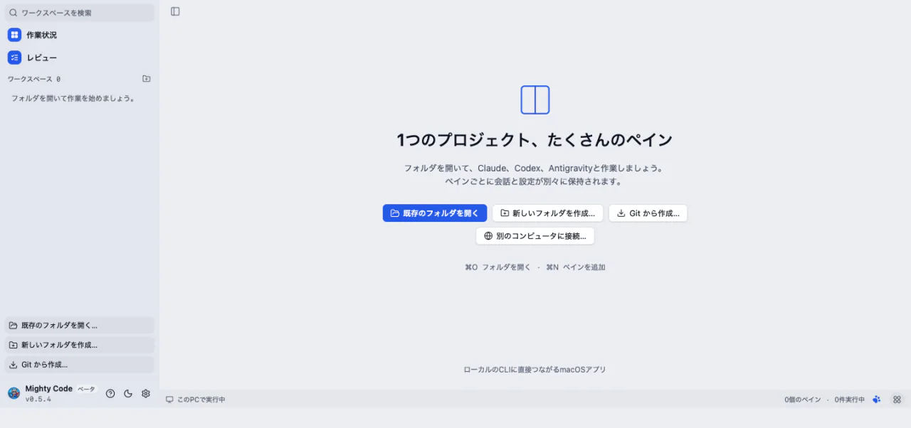
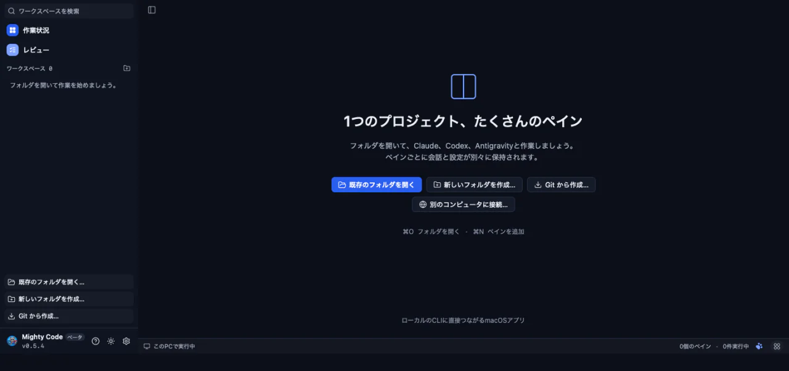
#必要なツール
動かせるエージェントCLI(Claude Code、Codex、Antigravity、pi、opencode、Hermesのいずれか)が1つもないか、Gitの準備ができていない場合は、アプリの起動時に必要なツール画面が先に開きます。エージェントCLI、前提ツール(Git、Homebrew、Node、Bun)、スタイル用ツール(uv、Ouroboros、oh-my-claudecode、gstack)、Tailscale、gh・glabをグループごとに表示します。
- インストールする項目にチェックを入れます。最初に開いたときは、足りないGitと、エージェントCLIが1つもなければClaude Codeが最初からチェックされていて、選んだ項目に必要なツール(例: ghに必要なHomebrew)も一緒に入ります。
- 選択項目をインストールをクリックすると、実行するコマンドがすべて順番に表示されます。実行をクリックするまで何も実行されません。
- Macでは、アプリ内のターミナルペインが1つローカルのワークスペースに開き(設定とこの画面は閉じます)、その中でコマンドがホームフォルダーから順に実行されます。ワークスペースが1つも開いていないとき(初回起動時)は、同じコマンドがmacOSのターミナルアプリの新しいウインドウで実行されます。初回はmacOSが許可を確認することがあります。どちらの場合も、終わるとこの画面の状態がもう一度確認されます。パスワードや確認を求められたら、そのターミナルペインで直接答えてください。アプリはsudoを使わず、パスワードも受け取りません。ある手順が失敗しても次の手順に進みます。
- 終わるとアプリが再確認します。アプリが前面にあればこの画面をもう一度開き、そうでなければステータスバーにツールのインストールが終わりましたボタンを表示します。結果はコマンドの終了コードではなく、再確認した状態で決まります。CLIが新しく入ったときはサインインボタンが表示されます。
Git(Xcode Command Line Tools)はシステムのインストール画面が開くので、そちらで完了します。スクリプトは最大30分待ち、Control-Cを押すと待つのだけをやめて次の手順に進みます。Xcodeのライセンスに同意していないためにgitが動かない場合は、対応が必要と表示されます。Tailscaleは公式のダウンロードページを開きます。古すぎるClaude Codeは更新が必要と表示され、アップデートボタンが出ます。
あとでで閉じられます。今後表示しないにチェックしてから閉じると、起動時に開かなくなります。必須ツールが足りない間はスタート画面に必要なツールボタンがあり、CLIがなくて止まっているペインにはインストールボタンがあります。同じ項目は設定 → コンポーネントにも1行ずつあり、行ごとのインストールボタンでインストールできます(コンポーネント)。
Windows Windowsにも同じ画面があります。コマンドはホームフォルダーを作業フォルダーとして、アプリが別に開くPowerShellウィンドウ1つ(Windows Terminalがあればそのタブ、なければコンソールウィンドウ)で順に実行され、最後にEnterを押すまでウィンドウは開いたままです。Claude Code、Codex、Antigravity、Hermes、uvはそれぞれの公式PowerShellインストールスクリプトで、piとopencodeはnpmで、Gitとglabはwingetでこのユーザーだけに、Node.jsとghはwingetですべてのユーザーにインストールします。すべてのユーザー向けのインストールではWindows自身が管理者の確認画面を表示することがありますが、この画面自体は管理者権限を求めません。インストールが終わると、アプリはPATHをレジストリから読み直して確認します。Homebrew、Bun、gstackはMacでのみインストールします。
#ワークスペースを開く
ワークスペースは1つのプロジェクトフォルダです。ペイン、タブの配置、会話の履歴はワークスペースごとに保存されます。
追加する方法は3つあります。サイドバーのワークスペース見出しの右にあるフォルダボタン(押すと3つの項目のメニューが開きます)、ファイルメニュー、ペインを追加するメニュー、サイドバーが空のときと初回の画面に出る3つのボタンのどこからでも選べます。
- 既存のフォルダを開く…(⌘O): すでにあるフォルダを選びます。
- 新しいフォルダを作成…: フォルダ名と場所を決めて、新しいフォルダを作ります。Git リポジトリとして開始 (git init)をオンにすると、空のGitリポジトリで始まります。git initに失敗してもフォルダはワークスペースとして追加され、通知でそのことをお知らせします。
- Git から作成…: Gitリポジトリのアドレスを入力します。入力が止まったあとに自動で(または接続を確認で)、このコンピュータ自身の認証情報(Macのキーチェーン、Windowsの資格情報マネージャー、git credential helper、ssh-agent)で到達できるかを確認します。アプリがパスワードを尋ねることはありません。✓が表示されたら作成を押してダウンロードします(作成は✓のときだけ有効になります)。フォルダ名はアドレスから自動で入力され、編集もできます。ダウンロード中は進行状況が表示され、キャンセルで止めると作りかけのフォルダは削除されます。失敗するとウィンドウは開いたままで理由が表示されます。Gitがない場合は、必要なツールを開くボタンでセットアップ画面が開きます。
場所は最後に使った場所を覚えています。初回は現在のワークスペースの隣のフォルダ(その親フォルダ)、なければホームフォルダです。作成またはダウンロードしたフォルダはすぐにワークスペースとして追加され、Claudeのペインが開きます。新しい2つの項目にはショートカットがありません。
サイドバーでワークスペースを右クリックすると、名前を変更…、Finderで表示、ファイルペインを開く、作業マップを開く、会話を検索、一覧から削除の項目があり、gitリポジトリならエージェントペインの worktree、worktree 一覧…、worktree にコピーするファイル…、worktree の準備コマンド…もあります(ペインごとの worktree)。一覧から削除しても、ディスク上のプロジェクトファイルはそのまま残ります。ペインをさらに開くには新しいClaudeペイン(⌘N)を使います。
#言語を変更する
- 設定… → 一般を開きます。
- 言語で言語を選びます。システムを選ぶとMacの言語に従います。
- メニューバーはアプリを開き直すまで変わりません。ほかの画面がすぐに変わらない場合も、アプリを開き直すとすべて切り替わります。
#ヘルプを開く
このヘルプはアプリから直接開けます。アプリで選んだ言語で表示されます。
- Mac：メニューバーのMighty Code ヘルプ（⌘?）、サイドバー下部のヘルプボタン、または設定… → アプリ情報のヘルプを開くボタン
- Windows：サイドバー下部のヘルプボタン、F1、または設定… → アプリ情報のヘルプを開くボタン
- スマートフォン：ホストタブのヘルプボタン
02画面構成
ウインドウは左のサイドバーと右の作業エリアに分かれています。作業エリアでは、ペインをタブとして重ねたり、左右・上下に分割して並べたりできます。
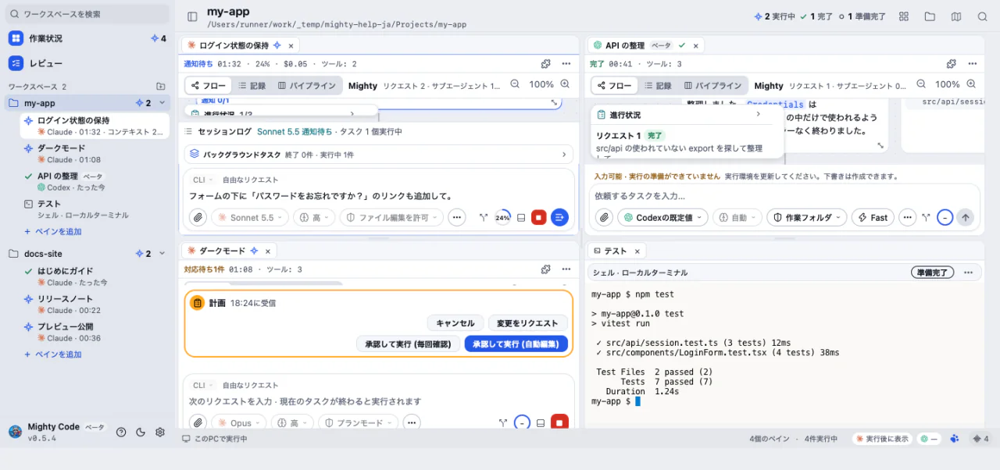
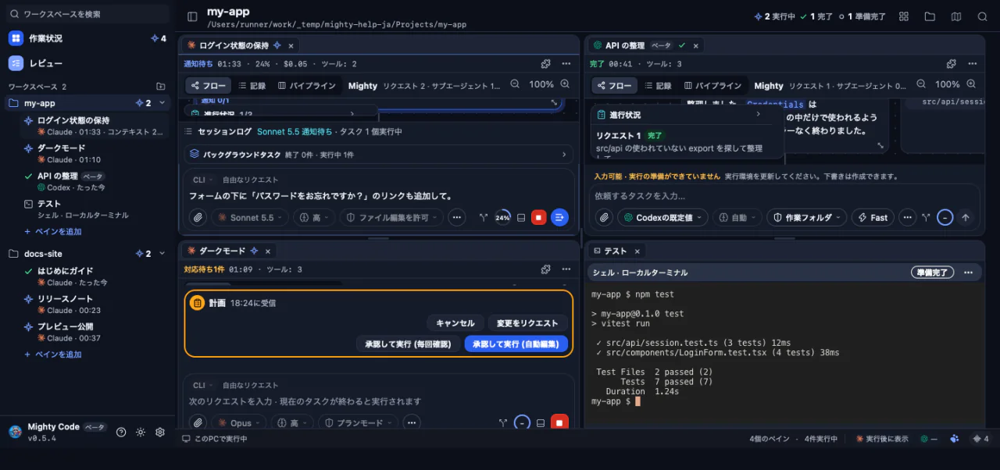
#サイドバー
サイドバーには上から順に次のものがあります。
- ワークスペースを検索: ⌘Kを押すと検索欄に直接移動します。
- 作業状況: すべてのワークスペースのペインの状態を1か所で確認します。
- レビュー: レビューする変更があるペインとリクエストをまとめて確認します(レビュー待ち)。
- ワークスペースの一覧: ワークスペースをクリックすると、そのワークスペースに切り替わります。横の矢印をクリックすると、ペインの一覧を展開したり折りたたんだりします。
- 下部: ヘルプボタン、画面テーマのボタン(ダーク/ライト)と設定ボタン。
ワークスペースの一覧を展開すると、最後の行にペインを追加ボタンがあります。ペインの行を右クリックすると、名前を変更…、ペインを閉じるの項目があります。
#サイドバーの幅を調整する
サイドバーと作業エリアの境界線をドラッグすると、サイドバーの幅が変わります(サイドバーのサイズを調整)。
- 境界線にポインタを合わせると、アクセントカラーに変わります。左右にドラッグして幅を合わせます。幅は決まった範囲の中でだけ変わり、アプリを開き直しても保たれます。
- 境界線をダブルクリックすると、既定の幅に戻ります。
- 境界線をTabキーで選んで← / →を押すと、10pxずつ狭く・広くなります。
- 境界線を左端までドラッグすると、サイドバーが折りたたまれます。再び展開すると、ドラッグする前の幅に戻ります。
#サイドバーを折りたたむ
作業エリアを広く使いたいときは、サイドバーを折りたたみます。
- 作業エリアのヘッダー左上にあるサイドバーボタンをクリックするか、⌃⌘Sを押します。作業状況の画面と最初の画面にも、同じ位置にこのボタンがあります。メニューバーの「表示」メニューにもサイドバーを折りたたむの項目があります。
- 再び展開するときも、同じボタンか⌃⌘Sを使います(サイドバーを展開)。
折りたたんだ状態は、アプリを開き直しても保たれます。折りたたんだ状態で⌘Kを押すと、サイドバーが展開されて検索欄に移動します。
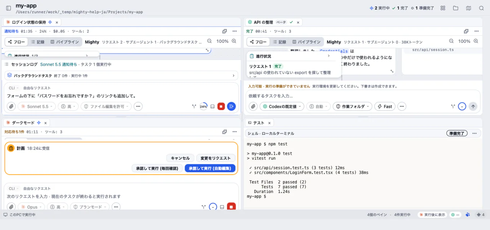
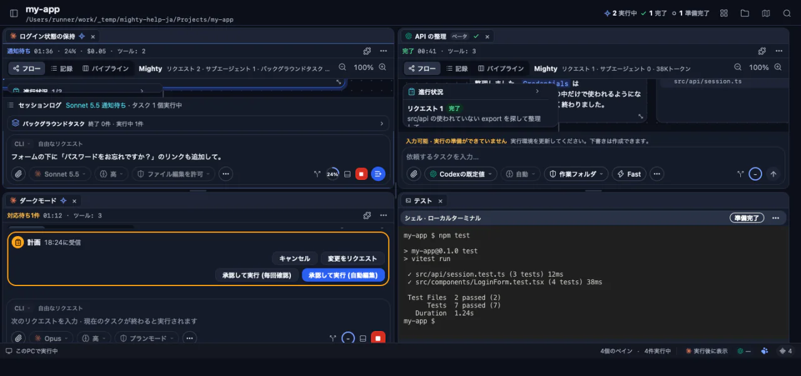
#作業状況
サイドバーの検索欄の下にある作業状況をクリックすると、すべてのワークスペースのペインを状態順にまとめて表示します。
- 上部の欄で、実行中、対応待ち、完了の件数を確認します。
- アカウントの使用上限カードでアカウントの使用量を確認します。同じアカウントを使うほかのアプリやセッションと共有する上限です。
- ワークスペースごとにファイルボタンとペインを追加メニューがあります。
- カードをクリックすると、そのペインに移動します。ワークスペースかペインを選ぶと、作業状況から抜けます。
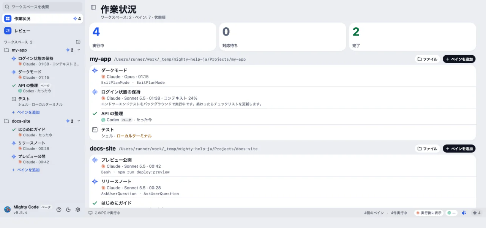
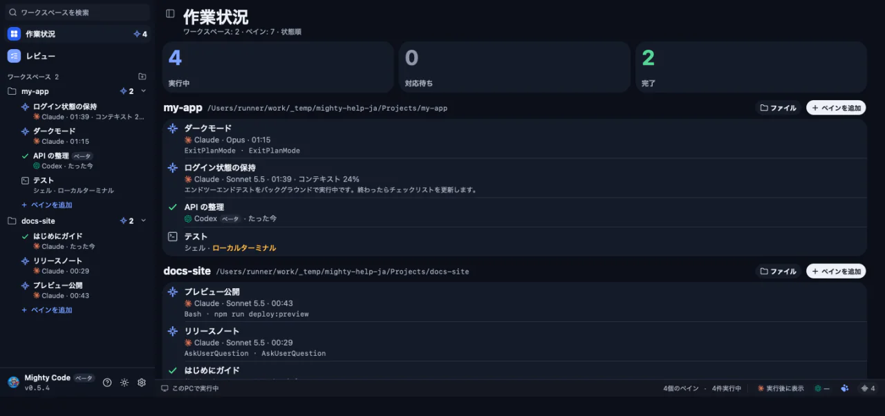
#レビュー待ち
レビューするものを一か所にまとめて見ます。サイドバーの作業状況の下にあるレビューを押すか、⇧⌘R(Windows: CtrlShiftR)を押すとレビュー待ちパネルが開きます。項目の横の数字は待っている件数です。
- 表示されるもの: 変更を残して終わったworktreeペインと子ペイン、そしてペインごとに最後に終わったリクエストのうち変更したファイルが保管されたもの(リクエストの変更をレビュー)です。まだ作業中のペインは終わるまで表示されません。 すべてのファイルをこの方法でレビューしたリクエストは外れます。
- 各行にペインの名前、エージェント、種類、ワークスペース、ブランチとベースブランチ、変更したファイル数と追加・削除した行数、状態(準備完了、競合、マージ済み)が表示されます。競合が一番上、マージ済みが一番下です。
- ボタン: 変更を表示、マージ(コミットしていないファイルがあるworktreeペインはコミットしてマージ)、エディタで開く、PRを開く(worktreeペイン)、破棄、ペインへ移動、レビュー済み。マージ・破棄・PRはペインのバーや子のカードと同じ操作なので、同じ確認を経ます。リクエストの変更を表示はリクエストの変更レビューを開きます。
- レビュー済みを押すと、その項目は作業が再び変わるまで隠れます。
- 一覧は実行が終わったとき、パネルを開いたとき、更新を押したときにgitを読み直します。描画のたびには読みません。
- worktreeペインと子ペインの行には、マージ前チェックの要約(チェック ✓または警告の数)が付きます。押すとそのペインのチェックタブが開きます(チェック)。要約は最後に読んだチェックとアプリがすでに知っていること(未コミットのファイル、残りのやること、ペインのPR状態)から作り、この一覧のためにghを呼ぶことはありません。
#コミット・PR
ワークスペースのgit作業を一つのパネルで行います。サイドバーのワークスペースメニューのコミット・PR を開く、ワークスペースのヘッダーのブランチ表示、入力欄の/gitで開きます。worktreeペインから開くと、そのペインのworktreeで作業します。
- 変更タブ: 変更したファイルとdiff、ファイル・ハンク単位のステージング、ブランチの切り替え、コミットメッセージの下書き、コミット、push、PRの作成、失敗したCIの修正依頼があります。デフォルトブランチからはPRを作りません。
- チェックタブ: マージ前に確認することを一つの画面にまとめます(チェック)。
#チェック
worktreeペイン(ほかのペインは現在のブランチ)について五つを表示します。
- ローカルの変更: 未コミットの変更の数と、ベースブランチより進んでいる(↑)・遅れている(↓)コミットの数。
- プルリクエスト: PR(GitLabはMR)の番号、状態、ドラフトかどうか、競合、レビュー結果(承認、変更リクエスト)。
- CI チェック: チェックごとの結果。失敗したチェックがあれば修正を依頼ボタンで失敗ログと一緒にエージェントに任せます。
- レビュースレッド: 未解決のレビュースレッドのファイルと行、作成者、最初のコメント、返信数、リンク。
- 残りのやること: そのペインの最後のリクエストのチェックリストで終わっていない項目。
- タブを開いたときと、開いている間は30秒ごとに読み直します。閉じている間は読みません。
- 項目ごとに読むので、gh・glabがない、ログインしていない、PRがない場合はその項目だけ確認できませんと表示されます。
- スレッドを選んで入力欄に入れるボタンを押すと、「PR #42 のレビューコメントを反映してください。」の下に
ファイル:行 (作成者): コメントの一覧がそのペインの入力欄に入ります。すぐには送信しません。秘密情報に見える行は隠し、リンクのアカウント情報は取り除き、2,000文字までしか入れません。 - マージ前の確認: 失敗または実行中のチェック、未解決のスレッド、残りのやること、未コミットの変更(コミットしてマージは除く)、ドラフト、競合、変更リクエストのどれかがあると、worktreeバー、子のカード、レビュー待ちのマージボタンが理由を示してもう一度確認します。それでもマージを押すとそのままマージします。止めはしません。
#ペインを追加する
ペインは、AIエージェント(Claude、Codex、Antigravity、pi、opencode、Hermes)、ターミナル、ファイルのいずれかです。
- サイドバーのペインを追加ボタンをクリックします。
- 作成するペインを選びます: エージェント(Claude、Codex、Antigravity、pi、opencode、Hermes)のペイン、新しいターミナル、またはファイルペインを開く(⇧⌘E)。メニューの一番下のまとまりには、ワークスペースを追加する3つの方法、既存のフォルダを開く…、新しいフォルダを作成…、Git から作成…があります(ワークスペースを開く)。
- 新しいAIペインは、同じエージェントで最後に使ったペインのモデル、思考レベル、権限、表示方法を引き継ぎます。会話は新しく始まります。
ショートカット: 新しいClaudeペインは⌘N、ターミナルペインを追加は⌘T、ファイルペインを開くは⇧⌘Eです。実行ペインは、すべてのワークスペースを合わせて128個まで開けます(ほかのコンピュータのペインをそのまま表示するリモートペインは数えません)。
Claude以外のエージェント(Codex、Antigravity、pi、opencode、Hermes)のペインにはベータの表示が付きます。
#以前のセッションを続ける
エージェントのペインを追加するとき、このフォルダに以前のセッションがあると選択画面が表示されます。Antigravityはこのフォルダの会話が表示され、サブエージェントが実行した会話は表示されません。
- 新しい会話なら新しく始める、以前の会話なら続ける…ボタンをクリックします。
- 以前のセッションを続けるの一覧からセッションを選びます。タイトルを検索で探すこともできます。
- 新しいペインがそのセッションの続きから始まります。
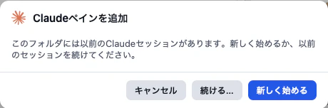
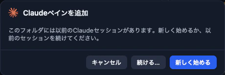
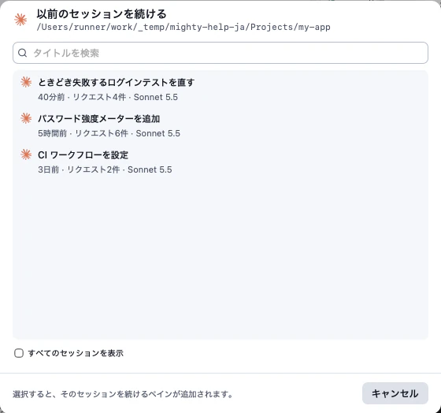
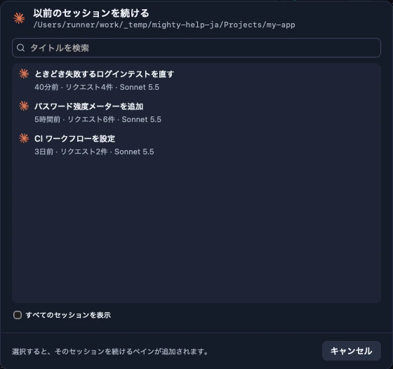
#過去の会話を検索
会話を検索（⇧⌘F）は、このフォルダの過去のセッションのリクエストと回答から言葉を探します。ワークスペースのヘッダーの虫めがねボタン、サイドバーでワークスペースを右クリックしたメニュー、メニューバーのワークスペースメニューからも開けます。
- 一つのメッセージにすべての単語が含まれるセッションが新しい順に最大50件表示され、見つかった言葉に印が付きます。ツールの出力は検索しません。
- Claude、Codex、Antigravity、piのセッションを検索し、opencodeとHermesのセッションは検索しません。ペインで開いているセッションと60日より古いセッションは含まれません。
- ↑ ↓で選んでEnterを押すか、続けるをクリックすると、新しいペインがそのセッションを続けます。
- Markdown で保存…は、その会話のリクエストと回答をMarkdownファイルに保存します。
- リモートワークスペースでは使えません。セッションの記録がそのコンピュータにあるためです。
#タブと分割
- タブをドラッグしてほかのグループの中央にドロップすると、タブとしてまとまります(タブとして結合)。
- グループの左・右・上・下の端にドロップすると、その方向に分割されます。
- 分割の境界線をドラッグするとサイズが変わり、ダブルクリックすると半分ずつに分かれます。
- ドラッグ中にEscを押すとキャンセルされます。
- タブをダブルクリックすると名前を変更します。右クリックすると、名前を変更…、フォーカス、タブを閉じるの項目があります。
配置はワークスペースごとに保存されます。ワークスペースを切り替えても、それぞれの配置がそのまま残ります。
#ペインのメニュー
ペインのヘッダーにある…ボタンには、次の項目があります。
- 名前を変更…
- フォーカス: このペインだけを大きく表示します。もう一度選ぶと前のレイアウトに戻すで元に戻ります。
- 実行ログをコピー: エージェントペインの実行記録をコピーします。ターミナルペインでは、この位置に以前のコマンド履歴…があります(ターミナルペイン)。
- 新しい会話を始める: 次のリクエストからは以前の会話を引き継ぎません(エージェントペイン)。
- ペインを閉じる
ペインのヘッダーを右クリックすると名前を変更…、フォーカス表示 / 戻る、閉じるの項目があり、ターミナルペインには以前のコマンド履歴もあります。
#ショートカット
| ショートカット | 動作 |
|---|---|
| ⌘O | 既存のフォルダを開く… |
| ⌘N | 新しいClaudeペイン |
| ⌘T | ターミナルペインを追加 |
| ⇧⌘E | ファイルペインを開く |
| ⇧⌘F | 会話を検索 |
| ⇧⌘R | レビュー待ち |
| ⇧⌘U | 注意が必要なペインへ移動 |
| ⌘K | ワークスペースを検索 |
| ⌃⌘S | サイドバーを折りたたむ / サイドバーを展開 |
| ⌘, | 設定… |
| Enter | リクエストを送信。実行中のペインでは実行中の送信先に従ってキューに入れるか、選んだエージェントの新しいworktreeですぐ実行(実行中に続けてリクエストする) |
| ⇧Enter | 改行 |
| ⌘Enter | 実行中のペインで、新しいworktreeですぐ実行(Mightyオーケストレーションがオンで、gitリポジトリにあるペイン)。それ以外の実行中のペインではキューに追加 |
| Esc | シートを閉じる、スラッシュコマンドの一覧を閉じる |
| ⌘= / ⌘- / ⌘0 | 文字を大きく / 文字を小さく / 標準の文字サイズ |
| ⌘? | Mighty Code ヘルプ |
03エージェントペイン
エージェントペインは、Claude、Codex、Antigravity、pi、opencode、Hermesのいずれかと会話するペインです。下部の入力欄にリクエストを書き、上部で進行状況と結果を確認します。
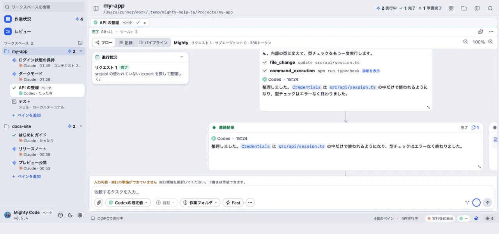
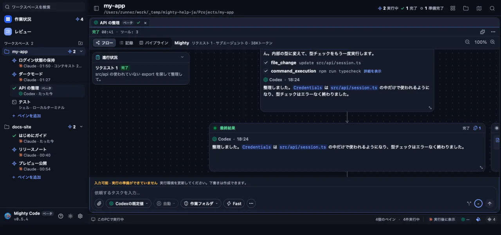
#リクエストを送信する
- 入力欄にやってほしいことを書きます。
- Enterを押すか、送信ボタンをクリックします。改行するには⇧Enterを押します。
- 実行中は送信ボタンの位置に停止ボタンが表示されます。止めるにはそのボタンをクリックします。
日本語入力のように変換中の文字があるときに押したEnterは、送信せずに変換の確定だけを行います。
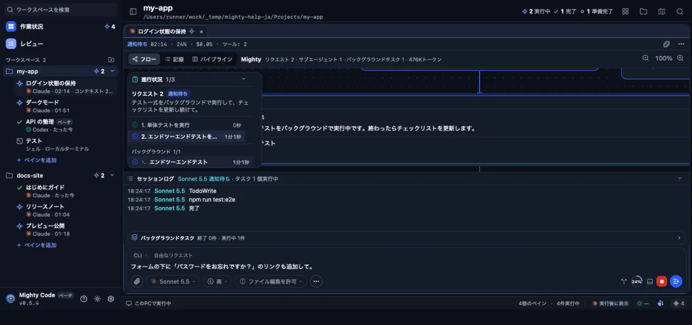
#実行中に続けてリクエストする
タスクの実行中でも、次のリクエストを書けます。入力欄に文字があると、停止ボタンの横に送信ボタンと同じ丸いボタンが表示されます。
- Enterまたはキューに追加ボタン: 次のリクエストとしてキューに入れます。現在のタスクが終わると順番に実行します。1つのペインに16件まで入れられます。下の実行中の送信先でエージェントを選んであれば、代わりにそのエージェントで新しいworktreeですぐ実行します。
- 実行中の送信先: 実行中だけ表示される選択で、文字を入力すると送信ボタンとひとつにつながり[対象 ▾ | ↑]の形になります(入力がないときは小さなカプセルとして単独で表示されます)。対象がキューのときだけ、その左に新しいworktreeで実行ボタンが別に表示され、worktreeを選んでいると送信ボタンが同じことをするので隠れます。キューならリストのアイコン、エージェントを選んでいればそのエージェントのアイコンが表示され、ポインタを合わせると今の選択が表示されます。キュー(既定)と、このペインが子として始められるエージェントごとの「worktree · Codex」のような項目があります(Claude、Codex、Antigravity)。CLIがインストール・サインインされていない、合うモードがない、または自分で開いた子ペインがすでに3つある項目はグレーになり、理由が表示されます。選んだ値によって、Enterと丸いボタンはリクエストをキューに入れるか、このペインの隣にそのエージェントの子ペインを開いて新しいworktreeですぐ実行します。入力欄の案内とボタンの名前もそれに合わせて変わります。選んだ値はアプリを終了するまでペインごとに覚えています。テキストがなく添付ファイルだけのリクエストはキューに入ります。
- ⌘Enter(WindowsではCtrlEnter)または新しいworktreeで実行ボタン: 実行中の送信先に関係なく、いつもこのペインのエージェントを使います。MightyオーケストレーションがオンのClaudeペイン、または子がファイルを変更できるモードのCodex・Antigravityペインが、コミットのあるブランチのgitリポジトリにあるときは、このペインの隣に専用のgit worktreeを持つ新しい子ペインを開いてすぐに実行します。実行中のタスクはそのまま続き、子が終わったらサイドバーのカードで結果をマージします(新しいworktreeで実行する)。
- 子ペイン、そのようなリポジトリの外のペイン、Mightyオーケストレーションをオフにしたペインでは、⌘EnterもEnterと同じようにキューに入れます。このペインのエージェントが今のモードでは子を作れなくても別のエージェントなら作れるときは、⌘Enterはキューに入れますが、実行中の送信先と下のすぐ実行のエージェント選択で、そのエージェントの子ペインで実行できます。子を作れないときや始められないときも、テキストはキューに入ります(新しいworktreeで実行する)。送ったテキストが実行中のタスクに割り込むことはもうありません。以前の記録のMighty表示には、そうしたテキストがオレンジ色の割り込み入力ブロックとして残っています。実行中のClaudeの親にそのまま届いた委任の通知は、同じ色の委任の通知ブロックとして表示されます(通知と保留)。
- キューの各リクエストには、✕の隣にすぐ実行ボタンがあります。新しいworktreeを作れる場所(⌘Enterの条件か、別のエージェントなら子を作れるペイン)では、そのリクエストを新しい子ペインですぐに実行し、実行中のタスクはそのまま続きます。ボタンの前のエージェント選択(既定はこのペインのエージェント)で別のエージェントを選ぶと、そのエージェントの子ペインで実行します。ボタンのツールチップが、どちらになるかを教えてくれます。テキストがなく添付ファイルだけのリクエストは、worktreeには行きません。
- worktreeを作れない場所では、このペインで処理します。エラーで止まったペインのように待機中なら、そのリクエストをすぐに始めます。Claudeの応答が終わってバックグラウンドタスクだけを待っているペインでは、リクエストが実行中のClaudeにそのまま届き、Mighty表示に割り込み入力ブロックとして表示されます(添付のあるリクエストはタスクが終わるまで待ちます)。それ以外ではボタンがグレーになり、ツールチップが理由を教えてくれます。今のタスクが先に終わる必要がある、このペインに保留された項目が先に送られる、CLIの更新中、のいずれかです。そのリクエストは順番を待ちます。Antigravityのカードの続きのリクエストは、いつも自分のペインでだけ実行されます。
- キューのリクエストは鉛筆ボタン（編集）でその場で文を編集できます。Enterで保存、Escで取り消します（ShiftEnterは改行）。添付ファイルとモードはそのままで、文を空にすると保存されません。許可したカードの続きのリクエストは編集できません。
- ↑・↓ボタン（上へ移動・下へ移動）、または行を選んだまま↑・↓キーで順番を変えます。一番上のリクエストが次に実行され、キューは新しい順番で実行します。保留された行は常に一番上にあり、編集も移動もできません。
タスクを停止すると、待機中のリクエストもキャンセルされます。ただし、バックグラウンドの作業だけを待っているペインで停止すると、キューはそのまま残り、最初のリクエストがすぐに始まります。アプリを開き直すとキューは空になります。
#入力欄のツール
入力欄の下の行には、左から添付、モデル、思考レベル、権限、その他の実行設定(…)が並んでいます。ペインの幅が狭いと、一部が1つのメニューにまとめられます。実行中は変更できず、変更した値は次のリクエストから適用されます。
比較実行…: 待機中のペインでは送信ボタンの右クリックメニュー、実行中のペインでは 実行中の送信先 メニューにあります。入力欄の依頼を同じ基準コミットから複数のエージェントに同時に任せ、結果を並べて比べます(比較実行)。
#モデル
モデルのチップをクリックすると、プロバイダー(Claude、Codex、Antigravity、pi、opencode、Hermes)とモデルを選べます。一覧が正しくない場合はモデル一覧を更新をクリックしてください。エージェントを変更すると、会話は新しく始まります。
#思考レベル
思考レベルは、モデルがどれだけ深く考えるかを決めます。Auto、Low、Medium、High、XHigh、Maxから選びます。モデルが対応している段階だけが表示されます。Codexのモデルが対応していればUltra · 自動委任もあります。最も深く考え、作業の一部をCodex自身のサブエージェントに任せることがあるため、使用量が増えることがあります。Antigravityにはなく、piはOff、Minimal、Low、Medium、High、XHighで、opencodeはモデルが提供するバリアントのLow、Medium、High、Maxで、HermesはLow、Medium、High、XHigh、Maxです。
#作業の権限
権限は、エージェントが確認なしで行える作業の範囲です。
| エージェント | 選べる権限 |
|---|---|
| Claude | プランモード · 常に確認 · ファイル編集を許可 · 自動モード · 権限をバイパス |
| Codex | 読み取り専用 · 承認を求める · 作業フォルダ · フルアクセス |
| Antigravity | 標準の権限 · 計画 · 編集を許可 · フルアクセス |
| pi | 読み取り専用 · フルアクセス |
| opencode | 標準の権限 · 計画 · 編集を許可 · フルアクセス |
| Hermes | 標準の権限 · 編集を許可 · フルアクセス |
- Claudeの常に確認、Codexの承認を求める、フルアクセス以外のopencodeのすべてのモード、Hermesのファイル変更と危険なコマンドでは、追加の権限が必要になったときにペイン内で許可を求めます。許可と質問を参照してください。
- 自動モードは、インストールされているClaude CLIが対応している場合にのみ表示されます。Codexの承認を求めるは、対応していない古いCodexでは表示されません。
- 権限をバイパスとフルアクセスは、プロジェクト外のファイルやコマンドにもアクセスします。本当に必要なときだけ使ってください。
#Antigravity
GoogleのエージェントはAntigravity CLI(agy)で動きます。AntigravityはClaudeやGPT-OSSのモデルも実行できます。
- インストール: Macでは
curl -fsSL https://antigravity.google/cli/install.sh | bashを実行すると、~/.local/binにagyが入ります。WindowsではPowerShellでirm https://antigravity.google/cli/install.ps1 | iexを実行すると、%LOCALAPPDATA%\agy\binにagy.exeが入ります。アップデートはアプリがagy updateで行います。 - サインイン: ターミナルペインで
agyを一度実行し、ブラウザでGoogleアカウントにサインインします。コンポーネントタブのサインインをクリックすると、アプリが代わりに実行します。Antigravityにはサインアウトのコマンドがないため、アカウントを切り替えるにはagyの中で/logoutを使います。 - 権限: Antigravityはアプリの中で確認できません。標準の権限はagyに保存されたAgent Modeに従います(agyの
/configで変えていなければレビュー)。ワークスペースのファイルは読めますが、確認が必要なファイル編集とシェルコマンドは拒否し、ターンを終えてから、拒否した操作を権限カードで尋ねます。今回のみ許可または常に許可を押すと、同じ会話で続きが進みます(Antigravityの権限カード)。計画はagy自身のフォルダに計画を書き、プロジェクトを変更せずに止まります。実行するには、次のリクエストを別のモードで送ってください。あらかじめ許可しておきたい操作は、~/.gemini/antigravity-cli/settings.jsonのpermissions.allowに許可ルール(例:command(git status)。ルールはそのテキストで始まるすべてのコマンドを許可するので、できるだけ狭く)を自分で追加するか、編集を許可(ファイル編集)またはフルアクセス(すべて許可)を選んでください。 - Antigravityのモデルは名前に思考の深さが含まれているため、思考レベルを別に選びません。
- Mighty表示はClaudeやCodexと同じです。Antigravityが起動したサブエージェントはリクエストの下にそれぞれのブロックになり、その内容(受けた指示、メッセージ、ツール呼び出し、送り返した答え)は
~/.gemini/antigravity-cli(Windowsでは%USERPROFILE%\.gemini\antigravity-cli)に残るサブエージェント自身の記録から読みます。読んだファイルは名前だけが表示され、中身は写しません。会話の以前のリクエストも同じ記録から読み込み、続ける…にはこのフォルダのAntigravityの会話が表示されます。 - 以前Gemini CLIで実行していたペインは、履歴はそのままですが次のリクエストから新しい会話になり、Gemini CLIのモデルを選んでいた場合は既定に戻ります。
#pi
pi(pi)は、多くのモデル提供元で使えるオープンソースのコーディングエージェントCLIです。
- インストール: 必要なツール画面からインストールします(HomebrewとNode.jsがなければ先にインストールします)。自分でインストールするなら
npm install -g @mariozechner/pi-coding-agentを実行します。アップデートはアプリがpi update selfで行います。 - サインイン: コンポーネントタブのサインインを押すと、
piを実行するターミナルペインが開きます。そこで/loginと入力し、サブスクリプション(Claude Pro/Max、ChatGPT、GitHub Copilot)またはAPIキーを選びます。環境変数のAPIキー(ANTHROPIC_API_KEYなど)や~/.pi/agent/auth.jsonに保存された認証情報もサインイン済みと見なします。サインアウトはpiの中で/logoutと入力します。 - モデル: サインインすると、
pi --list-modelsの一覧が「提供元/モデル」の名前で表示され、先頭の項目はpi自身の設定に従います。思考機能のないモデルでは思考レベルは表示されません。段階はOff、Minimal、Low、Medium、High、XHighです。 - 権限: piには承認ウィンドウがないため、モードは2つです。読み取り専用モードは読み取りツール(read、grep、find、ls)だけを有効にします。フルアクセスモードはすべてのツールを確認なしで使い、プロジェクトの外にも触れられます。
- リクエストごとにペインの作業フォルダで
pi --mode rpcを実行し、ペインのセッションを引き継ぎます。セッションは~/.pi/agent/sessionsに保存され、続ける…にもこのフォルダのpiセッションが表示されます。 - 質問: piには質問ツールがないため、アプリが実行のたびに
ask_userツールを拡張機能として追加します（~/.piの設定は変更しません）。piがこのツールで質問すると質問カードが表示され、答えると同じリクエストが続きます。ほかの拡張機能が開く選択・確認・入力のダイアログも同じカードで表示されます。 - まだできないこと: piのペインはMighty Orchestrationに参加せず、リモートワークスペースでは開けず、承認カードもありません。
#opencode
opencode(opencode)は、多くのモデル提供元で使えるオープンソースのコーディングエージェントCLIです。自社サービスopencode Zenの無料モデルはサインインなしでも使えます。
- インストール: 必要なツール画面からインストールします(HomebrewとNode.jsがなければ先にインストールします)。自分でインストールするなら
npm install -g @opencode/cliを実行します。アプリはOpenCode 2を使います。MacにOpenCode 1があると古いものとして表示され、セットアップ画面からインストールするとnpmのopencode-aiを先に削除します。アップデートはアプリがopencode upgradeで行います。 - サインイン: コンポーネントタブのサインインを押すと、
opencode auth loginを実行するターミナルペインが開きます。そこで提供元を選び、そのサブスクリプションでサインインするかAPIキーを入力します。opencodeが保存したサインイン(opencode auth list)や環境変数のAPIキー(ANTHROPIC_API_KEYなど)もサインイン済みと見なし、どちらもなければopencode Zenの無料モデルだけが表示されます。ログアウトはターミナルでopencode auth logoutを実行します。 - モデル:
opencode modelsの一覧が「提供元/モデル」の名前で表示され、先頭の項目はopencode自身の設定に従います。 - 権限: 選んだモードがそのリクエストだけのopencode自身のルールになり、ルールが確認に残した操作はClaudeと同じくペインに承認カードとして届きます。標準の権限はファイルの編集、コマンド、Web、プロジェクト外へのアクセスの前に確認し、編集を許可はファイルの編集を確認せず、計画はファイルを編集しないopencodeのplanエージェントで実行し、フルアクセスは確認しません。
- リクエストごとにペインの作業フォルダで
opencode acp(OpenCode 2、Agent Client Protocol)を実行し、ペインのセッションを引き継ぎます。セッションはopencodeのopencode.dbに保存され、続ける…にもこのフォルダのopencodeセッションが表示されます。使用量にはセッションの費用、使用中のコンテキスト、リクエストのトークンが表示されます。 - 質問: opencodeが
questionツールで質問すると質問カードが表示され、答えると同じリクエストが続きます。カードでキャンセルをクリックすると、opencodeはそのリクエストを終了します。 - まだできないこと: opencodeのペインはMighty Orchestrationに参加せず、リモートワークスペースでは開けません。
#Hermes
Hermes(hermes)は、Nous ResearchのオープンソースのエージェントCLI(Hermes Agent)です。Nous Portal、OpenRouter、Anthropic、OpenAIなど多くのモデル提供元を使えます。
- インストール: 必要なツール画面からインストールします(Gitがなければ先にインストールします)。公式のインストールスクリプトが専用のPython環境と一緒に
~/.hermesへインストールし、ブラウザツールもダウンロードするため数分かかります。自分でインストールする場合は、Macではcurl -fsSL https://hermes-agent.nousresearch.com/install.sh | bashを、WindowsではPowerShellでirm https://hermes-agent.nousresearch.com/install.ps1 | iexを実行します。アップデートはアプリがhermes updateで行います。 - サインイン: コンポーネントタブのサインインボタンをクリックすると、
hermes modelを実行するターミナルペインが開きます。そこでモデルの提供元を選び、サインインするかAPIキーを入力してから、既定のモデルを選びます。アプリが読むのは、Hermesが資格情報を見つけた提供元の名前だけです。資格情報を消すにはターミナルでhermes authを使います。 - モデル: 最初の項目はHermes自体の設定(
hermes modelで決めた既定のモデル)に従います。Hermesはセッションを開いて初めてモデル一覧を示すため、最初のリクエストを送ったあとから提供元:モデルの一覧が表示されます。 - 権限: 標準の権限はファイルを変更するたびにペインの承認カードで確認し、編集を許可は作業フォルダ内の変更を確認せず、フルアクセスはHermesの
--yoloで危険なコマンドも確認しません。危険なコマンド(rm -rfなど)はHermesの承認設定(approvals.mode)に従ってカードで確認し、それ以外のコマンドと読み取りは確認しません。計画専用のモードはありません。フルアクセスはセッション開始時に決まるため、すでに始めたセッションには新しい会話から適用されます。 - リクエストごとにペインの作業フォルダで
hermes acp(Agent Client Protocol)を実行し、ペインのセッションを引き継ぎます。実際の作業はHermesのゲートウェイ(バックグラウンドプロセス)が行い、必要なときに自動で起動し、使われなくなると終了します。セッションは~/.hermes/state.dbに保存され、続ける…にもこのフォルダのHermesセッションが表示されます。使用量にはセッションの累計トークンと使用中のコンテキストが表示され、費用はHermesが知らせません。 - 質問: Hermesがclarifyツールで質問すると質問カードが表示され、答えると同じリクエストが続きます。Hermesはエディタ接続（ACP）ではこのツールを既定でオフにしているため、最初のHermesリクエストの前に、アプリがHermesの設定の
platform_toolsets.acpという1項目をhermes config setでオンにし、記録に残します。自分で保存したリストがある場合は変更しません。新しい会話から適用され、元に戻すにはターミナルでhermes config unset platform_toolsets.acpを実行します。Hermesが回答を待つのは一定時間（既定で90秒）だけです。その後はカードが閉じ、Hermesは回答なしで先に進みます。 - まだできないこと: HermesのペインはMighty Orchestrationに参加せず、リモートワークスペースでは開けません。
#その他の実行設定
…ボタンをクリックすると実行設定が開きます。
- Claude: 最大ターン数とコストの上限 (USD)。空欄にすると上限を設けません。
- Codex: Web検索の設定とシェルのネットワーク。入力欄のFastチップは、対応しているモデルとアカウントでより速く応答しますが、使用量が多くなります。
値を変更したら適用をクリックします。
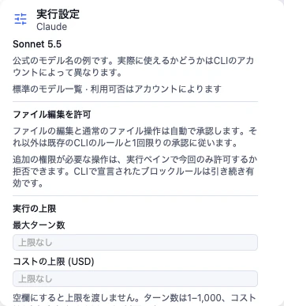
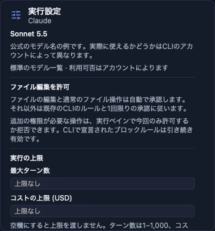
#ファイルと画像の添付
クリップのボタンをクリックするか、ファイルを入力欄にドラッグ&ドロップするか、⌘Vで画像を貼り付けます。
- 最大8個、1ファイルあたり5 MiB、合計8 MiBまで添付できます。画像(PNG・JPEG・GIF・WebP)、PDF、テキストファイルはその形式のまま、それ以外のファイルはバイナリファイルとして渡されます。
- 送信前にプレビューして、1つずつ外せます。添付だけを送信することもできます。
- ターミナルペインには添付できません。
#送り先
スマートフォンアプリでは、oh-my-claudecodeがインストールされたClaudeペインの入力欄に送信先スイッチが表示されます。インストール済みの他のCLI(Codex、Antigravityなど)が一覧に並び、1つ選ぶと、以降のリクエストはoh-my-claudecodeのaskを通ってそのCLIに送られます。答えはClaudeの返信の中に戻ってきます。Claude（既定）を選ぶと、これまでどおりClaudeに送ります。MacとWindowsアプリの入力欄にはこのスイッチがなく、そこから送ったリクエストはいつもそのペインのエージェントに届きます。別のエージェントに任せるには実行中の送信先かキューの行のエージェント選択を使います。
- 他のCLIに尋ねている間は、添付を送れません。
- oh-my-claudecodeは、選んだCLIを承認の確認とサンドボックスをオフにして起動します。そのためそのCLIは、確認なしにこのフォルダのファイルを変更したり、コマンドを実行したりできます。Mighty Codeの権限モードと承認カードが及ぶのは、それを起動するClaudeの手順だけです。CLI を選んでいる間、入力欄にこの警告が 1 行で表示されます。
- Windowsでは、古いバージョンのoh-my-claudecodeはAntigravityへの質問を断ります。そう返ってきたら、oh-my-claudecodeを更新するか、Gemini CLIを使ってください。
/で始まる文章は、そのままClaudeに送られます。
#スラッシュコマンド
入力欄に/を入力すると、コマンドの一覧が表示されます。↑↓で選び、EnterかTabで入力し、Escで閉じます。
| コマンド (Claudeの場合) | 動作 |
|---|---|
/model | モデルを変更 · 続けて名前を選択 |
/permissions | 権限を変更 · 続けてモードを選択 |
/clear | 新しい会話を始める · 次の入力では前の会話を再開しません |
/cost, /usage | このペインのトークンとコストを表示 |
/plugin | プラグインのマーケットプレイスを開く |
/config | Mighty Codeの設定を開く |
/rename | このペインの名前を変更 |
/help | このペインで使えるアプリのコマンドを表示 |
/advisor | 別のエージェントに読み取り専用で意見を聞く（/advisor [エージェント] [質問]） |
/committee | 2つのエージェントに同じ質問、意見を2つ並べて（/committee [エージェント エージェント] [質問]） |
CodexとAntigravityでは名前が少し異なります(例: Codexの/new、/approvals、/status、Antigravityの/usage、/config)。一覧にない/名前は、CLIのスキル、ユーザーコマンド、プラグインのコマンドとしてそのまま渡されます。Antigravityのスキルもこうして実行され、一覧にはagyに入っているスキル、~/.gemini/antigravity-cli/skillsの自分のスキル、フォルダの.agents/skillsが表示されます。piは/new、/session、/settings、opencodeとHermesは/new、/usage、/settingsを使います。/helpはどのエージェントでも、このペインで使えるコマンドをアプリが直接表示します。/skillsのようなAntigravity自身の読み取り専用コマンドは、ターミナルでagy -p "/skills"のように別に実行したときだけ答えるため、アプリではagyのエラーで終わります。
#ほかのエージェントの意見
/advisorは、この画面の最後の計画（あれば）、最後の結果、最後のリクエストで変わったファイルの要約を別のエージェントに送り、意見を受け取ります。/advisor codex この計画で大丈夫？のようにエージェントと質問を付けられます。エージェントを省くと、この画面とは別の、インストールしてログインした最初のエージェント（Claude、Codex、Antigravity、piの順）に聞きます。/committeeは2つのエージェントに同じ質問を送り、意見を2つ並べて表示します。共通点や違いの要約はしません。
- 意見を出すエージェントは1回だけ、読み取り専用で実行されます（Claudeは計画モードと読み取りツールのみ、Codexは読み取り専用サンドボックス、Antigravityは計画モードとサンドボックス、piは読み取りツールのみ）。ファイルを変えたりコマンドを実行したりせず、セッションも残しません。opencodeとHermesは1回の実行で承認を自分で通すため選べません。
- 送る内容はサイズを減らし、秘密に見える行を削除します。答えは画面の下に意見カードとして付き（エージェント、モデル、分かれば費用）、入力欄に入れるで入力欄に入れてこの画面のエージェントに反映を頼めます。費用は使用量の記録にこの画面のワークスペースとして入ります。
#コンテキストと使用量
送信ボタンの横の円形のリングは、会話がコンテキストをどれだけ使ったかを示します。クリックすると、コンテキスト使用量、入力・出力・キャッシュのトークン、コスト、使用したモデル、セッションIDを確認できます。CLIが報告した値だけを表示し、不明な値は推定しません。
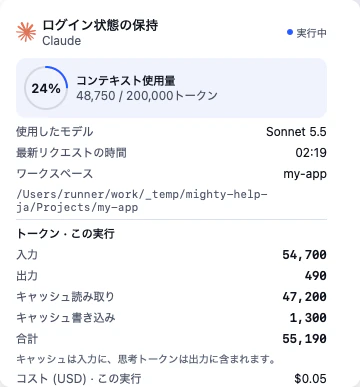
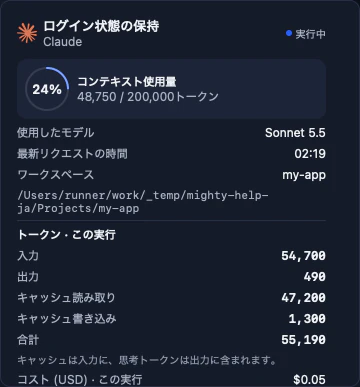
#Mighty表示
すべてのエージェント(Claude、Codex、Antigravity、pi、opencode、Hermes)のペインはMighty表示で表示されます。リクエスト、サブエージェント、バックグラウンドタスク、結果をブロックのフローで表示します。切り替える操作はありません。
#Mightyフロー
Claude ペインのフローは、リクエスト → その間に起きたこと → 最終結果 の順に見えます。リクエストブロックには送ったリクエストだけが入ります。回答が来るまでは、結果が来る場所に実行カードが立ち、メインセッションのモデルといま行っていること1行（Claudeが最後に言ったこと、またはそのあとに実行したコマンド）を表示します。カードをクリックすると、メッセージとツール呼び出しがすべて入った実行ブロックに展開し、回答が来るとその場所に最終結果カードが立ちます。途中に何もない短い質問は、リクエストと結果の2つのブロックだけです。ほかのエージェントのペインは、これまでどおりリクエストブロックのすぐ下に実行ブロックがつきます。
ブロックのヘッダーは、先頭の状態の点とタイトルでどんな状態かを示します。点の色が状態です（実行中は青、ユーザーの応答待ちは黄、完了は緑、エラーは赤、停止はグレー）。最終結果はタイトルもその色に染まり、終わった結果がひと目でわかります。誰が作業しているか（メインセッション、サブエージェント、バックグラウンドコマンド）は種類の表示の色でわかり、点にマウスを重ねると役割が表示されます。タイトルのあとにはサブエージェントの種類（Explore、自分で作ったエージェントの名前など）とバックグラウンド、フォーク、worktree の印がつき、実行ブロックにはペインで選んだ思考の強さがつきます。モデルはトークン表示と一緒に出て、まだ応答がなければ要求したモデルのあとに「要求」と書きます。自分で作ったエージェントの定義ファイルに color があればその色を使います。ブロックが狭いとこれらの印から先に隠れ、点にマウスを重ねると全体を見られます。
Claude ペインのフローでは、結果以外はすべて小さなカードにたたまれています。サブエージェントとバックグラウンドコマンドは実行中でも終了後でもカードで、カードもブロックと同じヘッダー（アイコン、タイトル、状態、展開ボタン）の下に2行を表示します。いま行っていること（終わったら回答の1行目）と、種類とモデル、経過時間、ツール呼び出し数、トークンです。アプリが実際に見た値だけが出て、進捗率はありません。カードをクリックすると完全なブロックに展開し、ブロックのヘッダーのカードにたたむボタンでまたたたみます。終わったバックグラウンドのサブエージェントのカードをクリックすると、バックグラウンド作業完了の図にあるそのブロックが展開します。バックグラウンドで実行したコマンド（CI待ち、アプリのビルド、開発サーバーなど）も同じ列に灰色のカードとして立ち、説明とコマンド、そのコマンドが最後に出力した行、実行中の時間か終了状態と終了コードを表示します。
Claudeがやることリストを作ると、リクエストの下に始めたステップが1つずつカードとして立ちます（ステップ1 → ステップ2 → …）。そのステップの間に起動したサブエージェントとコマンドはそのステップの右に並び、カードに ↳ 2. ノート作成 のようにどのステップの作業かを示す1行が加わります。ステップのカードをクリックすると、そのステップの間の記録が展開します。ステップのないリクエストでは、サブエージェントがリクエストの下の1列に並び、その上の枝にいくつにどのモデルで作業を任せ、いくつがまだ実行中かが出ます。アプリはツールを使うリクエストごとにClaudeにまずやることリストを作らせるので、短い回答でなければほとんどのリクエストにステップができます。
Claude ペインのフローの下、入力欄の上にはセッションログの帯があります。ヘッダーの一行はいまの状態です。メインセッションのモデルと状態、サブエージェントのうちいくつが実行中か、バックグラウンドのコマンドがいくつ動いているかが、役割の色で表示されます。帯を開くと、最新のリクエストで最近起きたことが5行、時刻、誰が（メインセッションのモデルまたはサブエージェントの名前）、何を（ツール呼び出し、サブエージェントの開始と終了、質問、コンテキストの要約、通知の到着）の順に表示されます。行をクリックすると、フローがそのブロックへ移動します。右端のボタンで折りたたむと状態の行だけが残り、折りたたんだかどうかはペインごとに記憶されます。
バックグラウンドで始めたサブエージェントとバックグラウンドコマンド（タスク）は、実行中はリクエストのブロックとしては描かれず、下の進行状況パネルのバックグラウンドのまとまりにあります。Claudeペインのフローでは、これらは上のカードとしても表示されます。タスクが終わって通知がClaudeに届くと、Claudeの応答ごとに新しいバックグラウンド作業完了の図ができ、終わったタスクごとに1つのブロックが、種類の行（サブエージェントかバックグラウンドコマンドか、終わり方）、コマンド、出力の最後の数行、サブエージェントの報告を示します。記録ではこの図が新しい行として、パイプラインでは最後に新しいカード（ボード）として付きます。スマートフォンのMighty表示とパイプラインも同じです。
すべてのエージェントのペインのフローの左上には進行状況パネルが浮かんでいます。画面に見えるリクエストの番号と状態、リクエストの内容が出て、エージェントが計画を知らせるとステップごとに完了、進行中（時間が流れる）、未着手が出ます。ステップはClaudeのやることリスト、Codexの計画（update_plan）、opencode・Hermesの計画、Geminiのチェックリスト（task.md）から来ます。設定… › 一般のエージェントに進捗チェックリストを依頼（初期状態でオン）は、Gemini、Codex、opencode、Hermesに作業中の計画を残すよう頼みます。計画が届かないリクエストと、計画機能のないpiは、エージェントがしていること（ファイルの読み取り・書き込み・編集、コマンド、検索、サブエージェント）を1行ずつステップとして表示します。リクエストがバックグラウンドタスク（コマンド、バックグラウンドのサブエージェント）を起動していれば、一番下のバックグラウンドのまとまりに実行中の数と全体の数、タスクごとに1行（状態とかかった時間）が出ます。実行中のものから100行まで入り、パネルの中でスクロールして見ます。それより多い分は数でまとめます。新しいリクエストが始まるとそのリクエストを表示し、自分でスクロールすると画面に見えるリクエストに変わります。最終結果が届くと、フローはその最終結果ブロックへなめらかに移動します。そのときフローを自分で動かしている最中や、別のブロックへ移動している途中であれば、そのままにします。リクエストの行をクリックするとそのリクエストへ、ステップの行をクリックするとそのステップのカードへ移動します（ステップのカードはClaudeペインのフローにだけあります）。ヘッダーのボタンでたたむと、ヘッダーとリクエストの行だけが残ります。
- 何もない場所をドラッグするかスクロールして、フローを動かします。拡大・縮小ボタンで50〜150%の倍率で表示できます。
- ブロックをクリックすると、そのブロックの中だけがスクロールします。何もない場所をクリックするかEscを押すと、選択が解除されます。
- ブロックの右下の角をドラッグするとサイズが変わります。右クリックすると標準のサイズに戻すがあります。サイズはセッションごとに保存されます。
- 一番上までスクロールすると、以前の履歴を読み込むで以前のリクエストを10件ずつ読み込みます。読み込んだ履歴は閲覧専用です。
- ClaudeとCodexのペインでは、ヘッダーのパズルのボタンで、インストール済みのプラグインとマーケットプレイスを開きます。
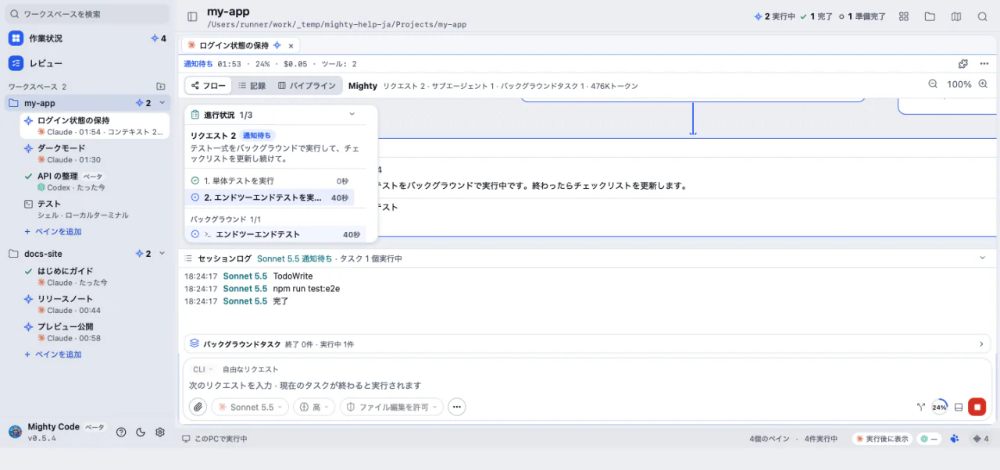
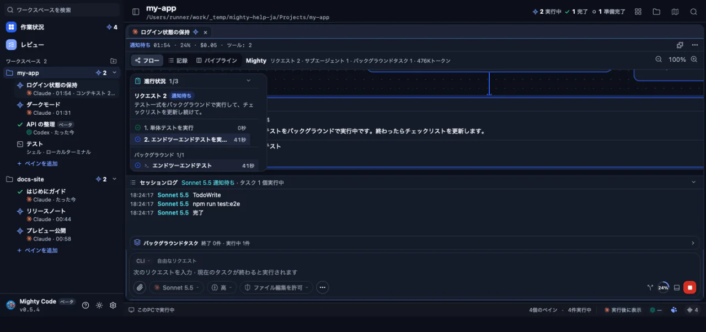
#記録
Mighty表示の上部にあるフロー | 記録の切り替えで、リクエストを時系列の一覧として表示できます。リクエストの行の次に実行の行が、その次にサブエージェントの行が続きます。
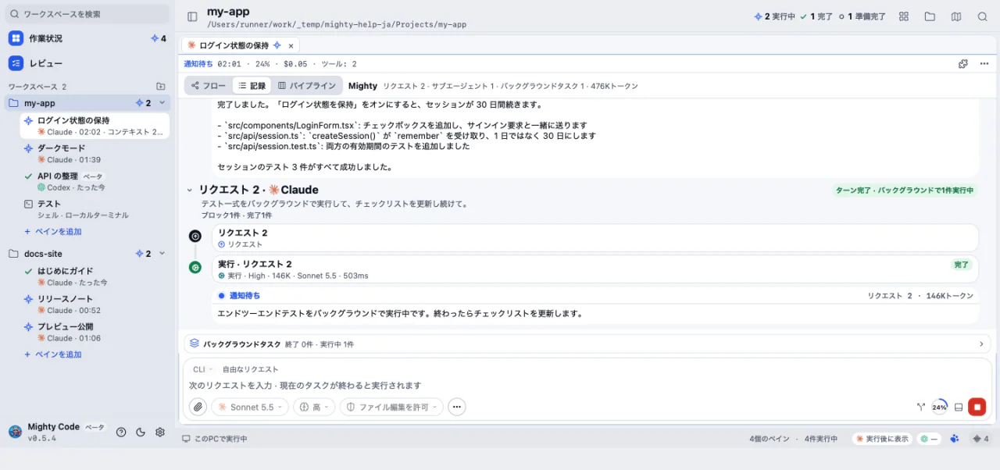
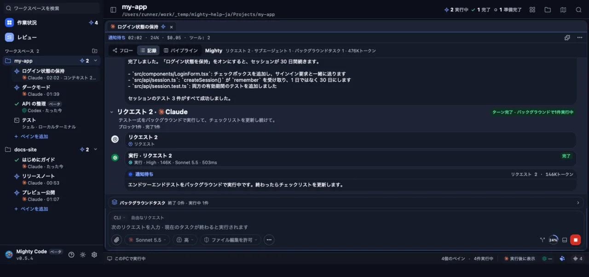
#パイプライン
同じ切り替えでパイプラインを選ぶと、リクエストをかんばん形式のパイプラインで表示できます。
- 表示は一度に一つです。スタイルのないペインではリクエスト一つ、スタイルを使うペインではパイプライン一つです。パイプラインはフェーズが前にだけ進むリクエストのまとまりで、前のリクエストより前のフェーズに戻ったリクエストから新しいパイプラインが始まります。
- 上部の ◀ 前へと ▶ 次へで前後に移動します。その間の「リクエスト 3 / 7」のようなタイトルを押すと一覧が開き、番号、タイトル、状態、ステップを見てすぐに選べます。
- その下に状態（スタイルを使うペインではパイプライン名も）が表示されます。ステップは各列の上のチップで、チップは線でつながっています。スタイルのないペインではリクエスト → 実行 → 結果、スタイルを使うペインではそのモードのフェーズです。
- 内容はステップごとに横に並んだ列に入ります。列の見出しにはステップのチップとカードの数があります。スタイルのないペインでは、リクエスト列に送ったリクエスト、実行列に進み具合（最新のメッセージとツール呼び出し）と状態のカードとサブエージェントごとに一枚のカード、結果列に結果が置かれます。スタイルを使うペインでは、フェーズの列ごとにそのフェーズのリクエストカード（リクエスト、実行の要約、結果の1行）と、その下にサブエージェントのカードが置かれます。入れ子のサブエージェントは字下げされ、どのブロックの下かが書かれます。
- 状態は色でもわかります。各列の背景にはそのステップの状態の色が薄く敷かれ（完了は緑、実行中と通知待ちは青、ユーザーの応答待ちは黄、エラーは赤、停止はグレー）、今のステップは最新のリクエストの状態に合わせ、まだ来ていないステップは背景のままです。カードは状態の文字の前の点が同じ色で、背景は列より濃く色づきます。実行中のカードは動く枠線、待機中のカードは黄色の枠線のままで、状態の文字もそのまま表示されます。
- 長い文章は折りたたまれていて、もっと見るを押すとその場で開きます。カードの見出しにある小さなボタンを押すと、フローでそのブロックを表示します。
- 表示は最新のものから開き、そのままにしておくと新しいリクエストやパイプラインに付いていきます。前のものを見ている間に新しいものが来ても位置はそのままで、▶ の横に新しいリクエストまたは新しいパイプラインの印が付きます。印を押すと最新のものへ移ります。
- 列はそれぞれ別々に動きます。列の見出しは上に残り、カードだけが上下に動きます。列の上でトラックパッドやマウスホイールを上下にスクロールするか、何もない場所をドラッグすると、その列だけが動きます。列が画面に収まらないときは、横にスクロールするかドラッグしてパイプラインを横に動かします。
- 最新のものでは、終わりを見ている列が新しい内容に付いて下がります。自分で動かした列や文章を広げた列はその位置に留まり、その列の終わりに戻るとまた付いていきます。新しいリクエストが来るとすべての列が終わりを表示し、以前のものはどの列も一番上から開きます。Windowsアプリではまだパイプライン全体が一緒に動きます。
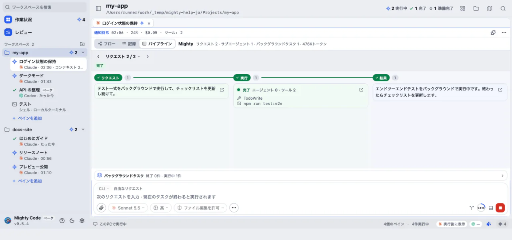
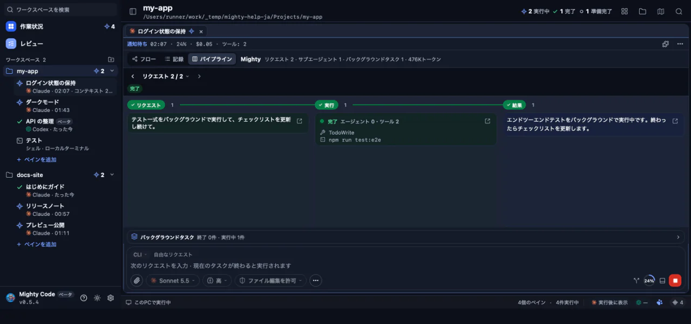
#結果カード
リクエストが終わると、結果カードに結果がまとめられます。Claudeの応答が終わるとリクエストは完了になります。そのリクエストが始めたバックグラウンドタスク（終わったサブエージェントにメッセージを送って再開させたものを含む）がまだ実行中か、終わってもClaudeがその通知にまだ応答していないあいだは、結果カードが待機色の通知待ちブロックになります。これまでの応答の下に、タスクごとに完了したら通知または通知済みと、「通知 1/2」のような受け取った通知の数が表示されます。このあいだMighty Petとペインのヘッダーは通知待ちを表示します。すべての通知に応答すると最終結果に変わります。バックグラウンドタスクの通知を受けてClaudeがまた応答すると、その応答はリクエストの結果には続かず、応答ごとに新しい図が開きます(バックグラウンドタスク)。同じリクエストのほかのバックグラウンド作業がまだ実行中なら、その応答のカードのタイトルは「これまでの結果 · バックグラウンド作業 N 件を待機中」となって残りの数を示します。結果にファイルが含まれていれば、結果に含まれるファイルを表示ボタンで一覧を開きます。ブロック内のファイルパスをクリックするとプレビューが表示されます。最新の結果カードはウインドウのサイズに合わせて表示され、サイズを手動で変更した場合はウインドウに合わせるボタンが表示されます。 リクエストが変更したソースやMarkdownのファイルなら、プレビューの見出しに変更点 | 全体を表示の切り替えが付き、変更点から表示されます。変更された行だけを前後3行とともに、古い行番号と新しい行番号を付けて表示し、追加した行は緑、削除した行は赤の背景です。ソースは言語に合わせて色分けされ、行の中で変わった単語が強調されます。上の行の1 列 | 左右に並べるの切り替えで、1 列の表示と、古い内容と新しい内容を左右に並べる表示を切り替えます(選んだ表示は記憶されます)。全体表示のソースも同じように色分けされます。上の行が何と比べたかを示します。結果のファイル一覧やブロックから開くと、そのリクエストがファイルを最初に変更する前の内容（このリクエストの前と比較）、その元がなければ最後のコミットです。変更がなければ切り替えはなく、ファイル全体だけが表示されます。
同じリクエストのバックグラウンド作業のあとでClaudeがもう一度答えると、前の結果カードのタイトルは途中の結果になり、その応答を開いた作業の名前が付きます(例: 「途中の結果 · Macビルド」)。リクエストの本当に最後の結果だけが最終結果です。最後の結果カードには成果物の一覧が付きます。アプリはリクエストの開始時、チェックリストのステップが終わるたび、バックグラウンド作業の応答が終わったとき、実行が終わったときに作業フォルダーのgitスナップショットを取り、その間に変わったファイルをステップごとにまとめて表示します。エージェントが編集ツールで直してもコマンドで直しても同じで、Codex・Gemini・opencode・Hermes・piのペインも同じです(ツール呼び出しひとつひとつがステップのペインでは、実行全体がひとまとまりです)。ステップ別 | ファイル別でステップ別のまとまりとファイル別の一覧を切り替えます。まとまりが5つ以上あると最後の2つだけを開いておき、まとまりごとに5行まで表示し、残りは「さらにN件表示」で開きます。ひとつのフォルダーにファイルが3つ以上あるとフォルダー名の下にまとめ、ファイルが20を超えると検索欄が出ます。ファイル名をクリックするとプレビューが開き、右の+/−の数をクリックすると、そのステップでそのファイルがどう変わったかをすぐ下に表示します。回答に出てきたファイルはその下に続きます。スナップショットはgitリポジトリ内のフォルダーでだけ取られ、リポジトリの.gitには何も書かず、アプリのデータフォルダーのsnapshotsに保存し、14日間使われなかったものは削除します。
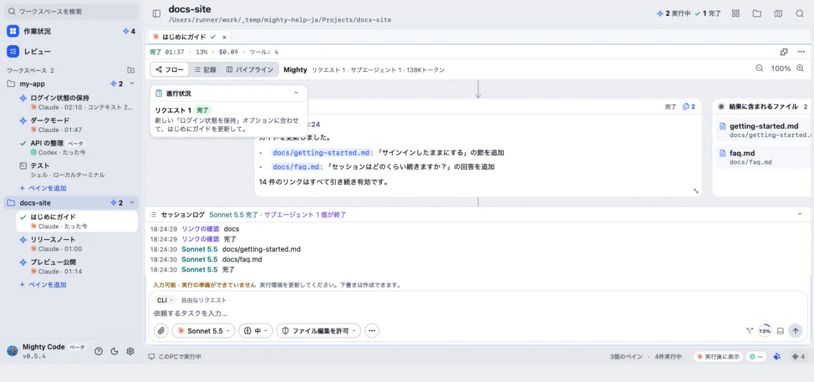
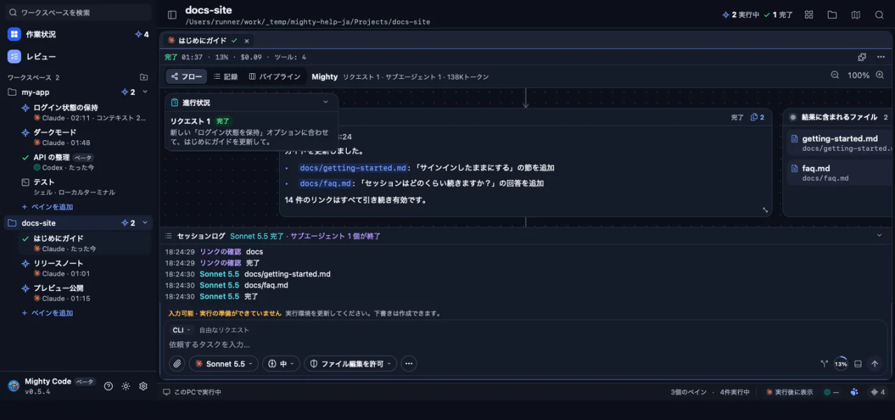
#検証レシート
ターン終了時の検証を行ったリクエストの結果カードの下にレシートが付きます。合格・失敗と何回目の確認か、失敗なら止まった理由、コマンドごとの合否とかかった時間（失敗なら終了コードかタイムアウト）、ブラウザ点検のページ・コンソールエラー・例外・失敗したリクエストの数とスクリーンショットのボタンが表示されます。修復のあいだは最後の修復リクエストの結果カードへ移ります。
- 自動修復: オフにすると、このペインでは失敗しても修正を頼まず結果だけを残します。
- もう一度検証: 今すぐ一度確かめます（修正は頼みません）。確かめているあいだは 停止 ボタンになり、押すと今のコマンドが終わったあと止まります。
- まだ確かめていない最新の結果には 検証を実行 ボタンがあります。スマートフォンのペイン画面にも最新の検証結果が 1 行で表示されます。
#監査ログ
結果カードのヘッダーにある 監査ログ ボタン（またはヘッダーを右クリックしたメニュー）を押すと、そのリクエストが行ったことを時系列で 1 行ずつ確認できます。自動編集モードで長く実行した後に、何をしたかを確かめるときに使います。
- 実行したコマンド、編集したファイルとリクエスト終了時に変更されていたファイル（追加・削除した行数）、開いたアドレスと Web リクエスト、計画カードの判断と拒否したツールリクエスト、サブエージェントと委任で生まれた子ペイン、検証の結果が表示されます。サブエージェントが行ったことにはその名前が付きます。
- ファイルの読み取りや検索は一覧から外し、件数だけを下に記します。上のボタンで種類ごとに絞り込めます。
- アプリがすでに保存した実行記録から作るだけで、新たに記録はしません。そのため、確認なしで許可されたツール呼び出しは承認の行として表示されず、拒否したリクエストと計画カードの判断だけが承認の行になります。
- Markdown でコピー ボタンまたはメニューの 監査ログを Markdown でコピー は、一覧を Markdown でコピーします。コピーするときに秘密の値とホームフォルダーのパスは取り除きます。
#リクエストの変更をレビュー
Claude ペインのリクエストが Edit・Write・MultiEdit でファイルを変えると、変える直前の内容が保管されます。そのリクエストが終わると結果カードのヘッダーに このリクエストの変更をレビュー・元に戻す ボタンが現れ、押すと リクエストの変更をレビュー が開きます。左にはリクエストが変えたファイルと追加・削除した行数、右には選んだファイルをリクエスト前の内容と比べた変更が表示されます。
- 変更の行をクリックすると、その行にコメントを残せます。「コメントN件を入力欄に入れる」を押すと、ファイルと行の位置が付いた一つの追加リクエストとして入力欄の文の後ろに入ります。すぐには送信しません。
- ファイルにチェックを入れて「選択したN件を元に戻す」を押し、確認すると、そのファイルはリクエスト前の内容に戻ります。リクエストが新しく作ったファイルはゴミ箱(Windows ではごみ箱)に移します。ファイルの今のエンコーディングと権限はそのままで、リクエストの後に自分で直した内容も一緒に消えます。
- 後のリクエストも同じファイルを変えていたら、そちらを先に元に戻す必要があります。なくなったファイル、テキストとして読めないファイル(1 MiB 超・バイナリ)、すでにリクエスト前と同じファイルは元に戻しません。
- 変更された部分(hunk)ごとにヘッダーに 受け入れる ✓ と 破棄 ↶ があります。破棄 ↶ はその部分だけをリクエスト前の内容に戻し、ほかの行はそのままにします。ファイルのエンコーディング、改行(CRLF・LF)、最後の改行の有無、権限は保ちます。最後の部分まで破棄してリクエスト前と同じになると、ファイルを元に戻したのと同じになり、リクエストが作ったファイルはゴミ箱に移します。受け入れる ✓ はファイルを変えず、レビュー済みにするだけで、アプリを再起動しても残ります。受け入れた部分は薄く折りたたまれ、ヘッダーを押すとまた開きます。
- 左の一覧にファイルごとの処理済みの部分数(n/m)が表示され、すべての部分を受け入れるか破棄したファイルは レビュー済み(✓)になります。残りをすべて受け入れる はまだ処理していない部分をすべて受け入れます。すべてのファイルがレビュー済みになると、そのリクエストはレビューキューから外れます。
- レビュー画面にフォーカスがあるとき、
]・[で次・前の部分、aで受け入れ、xで破棄です。 - リクエストの後にその部分が変わっていたら破棄しません(その後変更)。上に行が足されて数行ずれただけなら、その位置を見つけて破棄します。後のリクエストが同じ行を変えていたらその部分だけを止め、離れた部分は破棄できます。後のリクエストがそのファイルの元の内容を保管できなかったときは、ファイル全体を止めます。
- worktree ペイン、子ペイン、比較実行の変更表示でも同じボタンとキーを使います。そこでは基準ブランチと分かれたコミットの内容が基準です。
- ペインごとに直近 20 件のリクエストの元の内容を保管します。シェルコマンドが変えたファイル、ほかのエージェントのペイン、リモートワークスペースのペインにはこのボタンがありません。
- 変更の行を右クリックすると、そのファイルのその行を外部エディタで開きます。ヘッダーのボタン(エディタで開く)は選んだファイルを開きます(エディタで開く)。
04スタイル
スタイルは、リクエストの送り方をあらかじめ決めておいた作業の流れです。段階とボタンが用意されているので、長い作業を決まった順序で進められます。スタイルを使わない場合は、これまでどおり自由にリクエストします(CLI)。
#スタイルを選ぶ
スタイルは、Claudeペインで使います(MacとWindows)。
- 入力欄の上にあるスタイルメニュー(リクエストのスタイル)を開きます。
- スタイルを選びます。自由なリクエストに戻るには、CLIを選びます。
選択はペインごとに保存されます。実行中は変更できません。スタイルに必要なプラグインやツールがない場合は、インストールボタンが表示されます。クリックすると新しいターミナルペインにインストールコマンドが入力されるので、Enterはご自身で押してください。
標準スタイルの段階名とボタンは、現在は韓国語でのみ表示されます。
#標準スタイル
| スタイル | 内容 |
|---|---|
| Ouroboros | インタビューで目標を明確にしてから、シード → 実行 → 評価 → 進化の順に進めます。最初のリクエストがインタビューになります。Ouroborosプラグインとuvxが必要です。 |
| Claudeプラン(클러드 플랜) | 新しいリクエストのたびに、Claudeの計画モードで始まります。計画カードを承認すると実行します。チェックリストの進捗とバックグラウンドタスクがウィジェットで表示されます。 |
#計画カード
Claudeがプランモード(またはClaudeプランのスタイル)で計画を終えると、計画カードが表示されます。
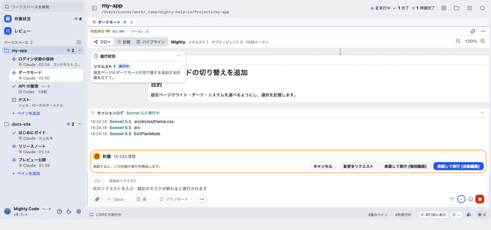
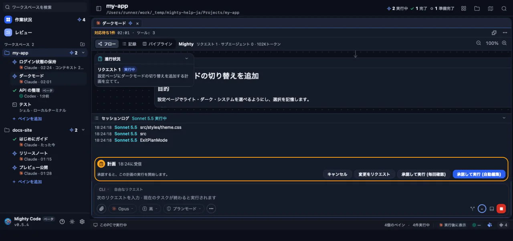
- 計画を読みます。展開をクリックすると、ドキュメントのように大きく表示されます。
- 次のいずれかを選びます。
- 承認して実行 (自動編集): 承認し、ファイルの変更は確認なしで進めます。
- 承認して実行 (毎回確認): 承認し、操作ごとに確認を求めます。
- 変更をリクエスト: 変更点を書いて変更リクエストを送信をクリックすると、Claudeが計画を立て直します。
- キャンセル: 計画を却下し、今回の作業を止めます。
Mightyフローでは、計画はリクエストの下のブロックに表示され、4つの回答は入力欄の側(スタイルを使っている場合はスタイルのパネル)に並びます。計画ブロックは結果カードと同じようにウインドウのサイズに合わせて表示され、サイズを手動で変更した場合はウインドウに合わせるボタンが表示されます。記録では、計画と回答が1枚のカードにまとまって入力欄の上に表示されます。
Mighty Petにも完成した計画が表示されます。受け取った時刻と計画全体が表示され、長い計画は吹き出しの中でスクロールします。Mighty Pet上でそのまま承認して実行 (自動編集)、承認して実行 (毎回確認)、キャンセルをクリックできます。変更をリクエストをクリックすると変更内容を書く小さなウィンドウに計画が開き、計画を確認…をクリックすると同じウィンドウで計画を大きく読めます。このウィンドウには4つの回答がそろっていて、計画に回答するとウィンドウは閉じます。
回答した計画は履歴に残り、あとで見直せます。
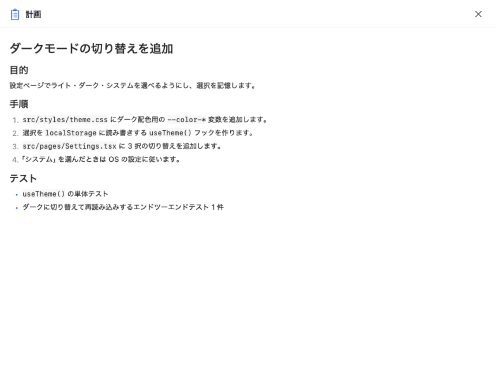
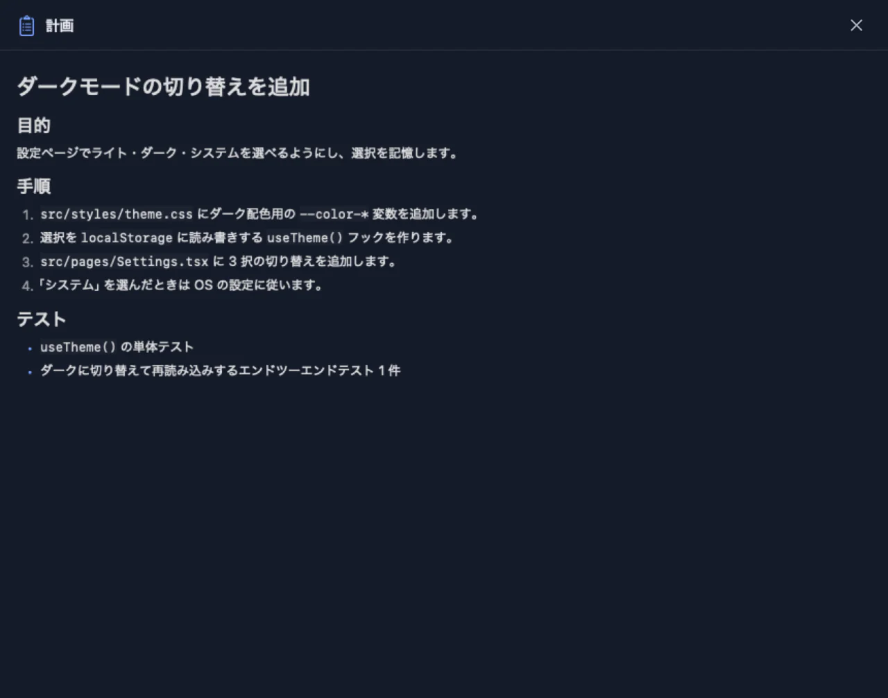
#ほかのスタイルを追加する
標準スタイルのほかに、ファイルで定義されたスタイルも使えます。
- 設定… → スタイルでファイルからスタイルを登録…をクリックします。リポジトリの
.claude/mighty-styles/内のスタイルは自動的に検出されます。一覧が正しくない場合は更新をクリックします。 - 新しいスタイルは、最初に一度内容を確認する必要があります。内容を表示ボタンで、提供元、自動で許可するツール、インストールコマンド、すべてのボタンを確認します。
- 問題がなければ許可をクリックします。
スタイルのファイルが変更されると、再度確認が必要になります。許可したスタイルを止めるには同じ場所のブロックボタンを、解除するにはブロックを解除ボタンをクリックします。一覧から消すには削除ボタンをクリックします。スタイルのIDとハッシュは、名前にポインタを合わせると表示されます。
ツールを自動で許可するスタイルは、そのツールを確認なしで実行します。提供元が信頼できる場合にのみ許可してください。
05許可・質問・サインインの復旧
エージェントが作業中にユーザーの判断を必要とすると、ペインにカードが表示されます。カードに答えると作業が続きます。同じリクエストは、作業状況、Mighty Pet、スマートフォンでも確認できます。
#権限の許可
エージェントが権限の範囲外の作業(コマンドの実行、ファイルの変更など)をしようとすると、許可を求めるカードが表示されます。
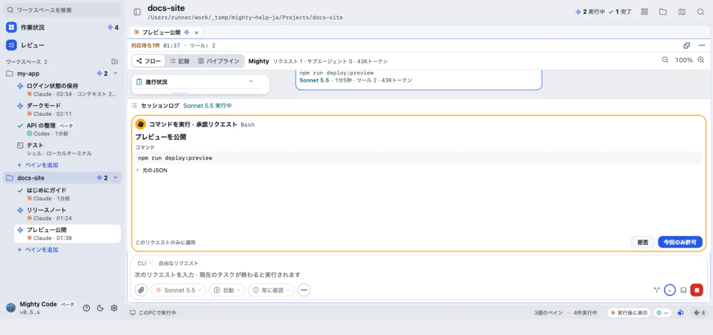
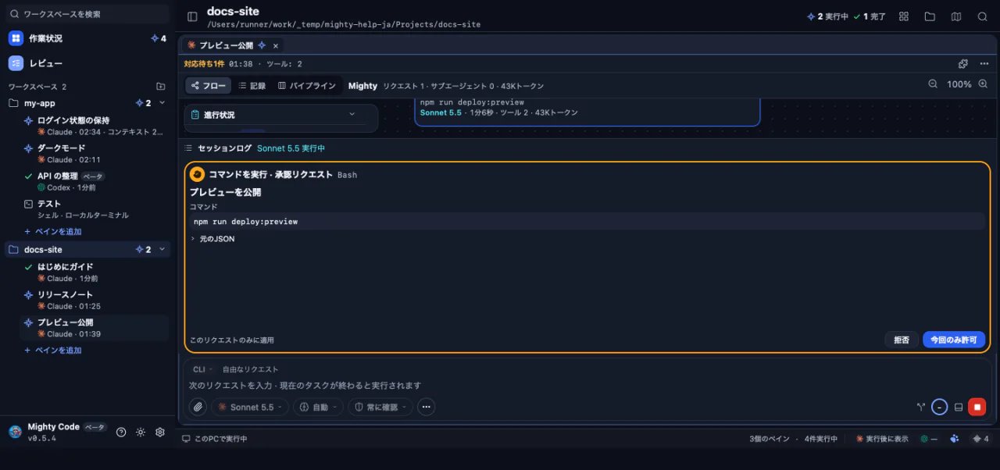
- カードを読んで、何をしようとしているのかを確認します。コマンドやファイルパスは枠内に表示され、正確な入力内容は元のJSONで確認できます。
- 今回のみ許可または拒否をクリックします。
許可はこのリクエスト1回にだけ適用されます。今後も常に許可するルールは作成しません。
許可を求めるカードは、Claudeペイン(常に確認など)と、Codexの承認を求める、フルアクセス以外のopencodeペインのすべての権限で表示されます。Hermesペインではファイル変更と危険なコマンドで表示されます。ほかの権限では、CLIの設定に従って許可またはブロックされます。Antigravityは動き方が違うため、別の方法で確認します。
#Antigravityの権限カード
Antigravityは作業の途中でアプリに確認できません。確認が必要な操作(コマンドの実行、ファイルの書き込みなど)に当たると、その操作だけを飛ばしてターンを終え、拒否した操作をまとめて1枚のカードで尋ねます。権限が標準の権限のときも表示され、スマートフォンにも同じカードが表示されます。
カードには、拒否された操作がすべて並びます。操作ごとに、種類(コマンド、アドレス、ファイルなど)、コマンド・アドレス・パス、許可に使うルールが表示されます。
- 何が拒否されたかを確認します。
- ボタンを選びます。
- 今回のみ許可: 拒否された操作だけを許可するルールをAntigravityに一時的に追加し、同じ会話を続けます。続きの実行が終わると(完了、失敗、停止、アプリの終了のいずれでも)、アプリが追加したルールだけを削除します。
- 常に許可: 同じルールをAntigravityの設定(
~/.gemini/antigravity-cli/settings.jsonのpermissions.allow)に残します。次回からは確認なしで実行されます。Windowsでは%USERPROFILE%\.gemini\antigravity-cli\settings.jsonです。 - 拒否: カードを閉じ、何も続けて実行しません。
許可すると、同じ会話で続きが進みます。ペインが別の作業で忙しいときは、続きの実行はキューに入ります。
ルールは先頭から一致するものを許可します。コマンドのルールはそのテキストで始まるすべてのコマンドを許可し(command(git status)はgit status --shortも許可します)、フォルダーを指すファイルのルールはその中のすべてのファイルを許可します。今回のみ許可のルールもAntigravityの全体設定に入るため、ルールがある間はこのコンピューターのすべてのAntigravity実行(ほかのペインやワークスペース、ターミナルのagy)に適用されます。常に許可したコマンドのルールはその後に続くどんな引数も許可するため、引数で別のことをさせられるコマンド(find … -exec、curl … -oなど)ではできるだけ今回のみ許可を選んでください。
コマンドをつなぐ(;、&&、||)、パイプ(|)・リダイレクト(>、<)・コマンド置換(バッククォート、$()・バックグラウンド(&)を使う、またはデータを消したり権限を上げたりするコマンド(rm、sudo、git push --force、git reset --hard、git clean、killなど)は今回のみ許可しかできません。カードの常に許可はオフになり、理由が表示されます。スマートフォンではそのボタンは表示されません。
英数字、スペース、._/:=@+,- 以外の文字(引用符、$、~、%、\ など)を含むコマンドも今回のみ許可しかできません。常に許可したルールは同じ文字で始まるすべてのコマンドを許可するためです。見えない文字や文字の向きを変える文字、通常のスペース以外の空白を含むコマンドにはルールを作りません。ファイルのルールはこのコンピューター自身のディスク上の普通のパス(Windowsでは固定ドライブ上のC:\…のようなドライブのパス)にだけ作り、\\server\shareのようなネットワークのパスには作らず、アプリがそのパスを調べることもありません。アドレスのルールはホストが普通のとき(@、\、%、空白、ASCII以外の文字を含まないとき)だけ作り、カードにはブラウザーが読むとおりのホストを表示します。
*や括弧を含むコマンド、ディスク全体(/)やホーム(~)を指すルールは作りません。Antigravity自身の設定フォルダー(~/.gemini)やアプリのデータフォルダーの中、またはその上のフォルダー(ホームフォルダーなど)へのファイルのルールも作りません。そこにルールがあるとAntigravityが自分の権限を書き換えられるからです。.geminiに触れるコマンド、単独で、またはコードを直接渡して起動するシェルやインタープリター(bash、python3 -c …、node -e …、cmd /c …)、ほかのコマンドを実行するラッパー(npx、xargs、timeout、envなど)も今回のみ許可しかできません。command(bash)はbash -cで始まるものを何でも許可してしまうからです。カードには理由が表示されます。そのような操作はルールで許可できない操作として表示されます。
Claudeとは違う点があります。Claudeは実行の前に止まって答えを待ちますが、Antigravityはそのターンを終えてから尋ね、許可されると続きを進めます。そのため、カードが表示された時点で残りの作業はすでに終わっていることがあります。
ルールで許可できない操作もカードに表示され、権限モードを変えるよう案内が出ます。そのような操作だけのカードには拒否しかありません。Antigravityの設定ファイルが読めない、またはJSONでない場合、アプリはファイルを変更せず、理由をカードに表示します。アプリはpermissions.allowのルールだけを追加・削除し、ほかの設定はそのままにします。一時的に追加したルールを削除できなかったときは、少しあとにもう一度削除し、次にアプリを開いたときにも削除します。
リモートワークスペースのAntigravityペインは、そのペインを実行しているコンピュータの設定を書き換えます。カードごとの許可は一度しか使えず、常に許可はそのコンピュータでリモートからのフルアクセス・コマンド実行を許可がオンのときだけ受け付けます。
#質問に答える
Claude、pi、opencode、Hermesが選択肢を示して質問すると、選択のリクエストカードが表示されます。選択肢なしで答えの記入を求める質問では、入力欄だけが表示されます。
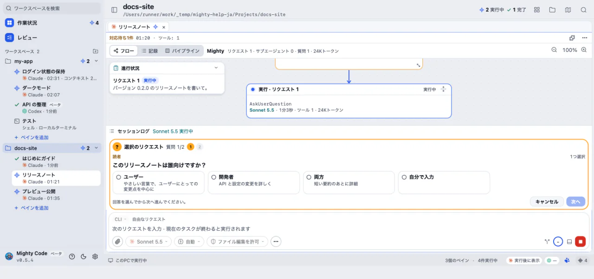
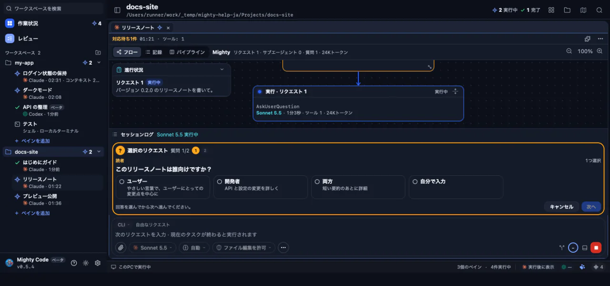
- 質問を読んで答えを選びます。複数選択できる質問もあります。
- 当てはまる答えがない場合は、自分で入力に直接書きます。
- 質問が複数ある場合は、次へボタンで次に進みます。
- すべて答えたら、回答を送信をクリックします。選ぶだけでは送信されません。
#ターミナルが入力を待っているとき
エージェントがターミナルで実行したコマンド（または返答のシェルブロックで 実行 を押して実行したコマンド）が入力を待つと、そのエージェントペインの入力欄の上に ターミナルが入力を待っています カードが表示されます。ターミナルペインに移らずカードで答えると、その答えがそのままターミナルに入力されます。スマートフォンの同じペインにも同じカードが表示されます。
- はい/いいえの質問（
(Y/n)など）：はい または いいえ を押します。Enter だけを押したときの答えには（既定）が付きます。 - パスワード：隠された入力欄に入力して 送信 を押します。入力内容は画面にも会話の記録にも残りません。
- テキスト入力：入力して 送信 を押すか、既定値を受け入れるなら Enter だけ送る を押します。
- リストから選ぶ：上へ・下へ で移動して 選択 を押します。
カードはコマンドの出力が少し止まったあとに表示され、答えたとき、コマンドが再び出力したとき、終わったときに消えます。エージェントが代わりに答えることはありません。ターミナルペインに直接入力することもできます（ターミナルを表示）。
#サインインが切れたとき
CLIのサインインの有効期限が切れてリクエストが失敗すると、入力欄の上にサインインを復旧するカードが表示されます。
- 再サインインをクリックします。
- ブラウザが開いたら、サインインを承認します。ブラウザにコードが表示された場合は、カードに貼り付けて送信をクリックします。
- サインインが完了すると、失敗したリクエストが自動的に再送信されます。
すでにほかの場所でサインインしている場合は、再送信をクリックしてください。ブラウザでのサインインが難しい場合は、ターミナルでサインインを使います。
macOS Antigravity、pi、opencode、Hermesはターミナルでサインインします。失敗したペインの隣にサインイン用のターミナルが開き、Antigravity（agy）は開くブラウザでGoogleアカウントにサインインします。piはターミナルで/loginと入力し、サブスクリプションを選ぶかAPIキーを入力します。opencodeはopencode auth loginが実行されるので、提供元を選んでからサインインするかAPIキーを入力します。Hermesはhermes modelが実行されるので、モデルの提供元を選んでサインインし、既定のモデルを選びます。サインインが確認されると、失敗したリクエストが自動的に再送信されます。ターミナルはサインイン後も開いたままです。
Windows Windowsでも、Antigravity、pi、opencode、Hermesはターミナルでサインインします。サインイン用のターミナルは別のウィンドウ（Windows Terminalがあれば新しいタブ）で、失敗したペインのフォルダーに開き、ターミナルでの操作はMacと同じです。Antigravity（agy）は開くブラウザでGoogleアカウントにサインインします。piは/loginと入力し、サブスクリプションを選ぶかAPIキーを入力します。opencodeはopencode auth login、Hermesはhermes modelが実行されます。サインインが確認されると、失敗したリクエストが自動的に再送信されます。アプリはこのターミナルを閉じません。
コンポーネントタブのサインインが切れたら自動で再サインインをオンにしておくと、サインインが切れた時点ですぐに再サインインを始めます。
#バックグラウンドタスク
Claudeは、時間のかかるコマンドやサブエージェントをバックグラウンドで実行することがあります。この場合、Claudeの応答が終わっても作業が残っています。
- バックグラウンドタスクは、図の上の進行状況パネルのバックグラウンドグループに表示されます（リクエストの開始時から）。グループ名の横の「1/3」は、まだ実行中のタスクの数と、このリクエストが始めたタスクの総数です。行ごとに状態の表示、種類（コマンドまたはサブエージェント）、コマンドやプロンプトの1行目、経過時間が表示され、行にマウスを重ねると全文が表示されます。
- タスクが終わると Claude に通知が届き、Claude はその結果を受けて続けて答えます。終わったタスクは終了の表示に変わり、次のリクエストを送るまでグループに残ります。
- 実行中のバックグラウンドタスクはMighty表示のリクエストには描かれず、進行状況パネルにだけ表示されます。スマートフォンでは、Mighty表示の上にバックグラウンドタスクの行が折りたたまれていて、終わった数と実行中の数が「終了 1件 · 実行中 2件」のように表示されます。開くとまだ実行中のタスクの行が表示されます。
- タスクが終わって通知がClaudeに届いても、リクエストには何も追加されません。Claudeの応答ごとに、新しい図が開きます。タイトルは終わった作業の名前から付き、「バックグラウンド作業完了 · コードレビューエージェント」のようになります。複数が一緒に終わったときは「… ほか N 件」と短くなります。図には終わったタスクのバックグラウンドタスクブロック（コマンド、終わり方、要約）とClaudeの応答が表示されます。これはリクエストではないので、リクエスト番号は数えません。フローでは一番下の新しいカード、記録では新しい行として、パイプラインでは最後に新しいカード（ボード）として付きます。何も名前のない通知は、Claudeが応答しない限り図を作りません。 すべての通知に応答するまで、元のリクエストの結果カードは通知待ちブロックのままです(結果カード)。
- バックグラウンドで始めたサブエージェントも同じです。終わるとMighty表示のブロックが完了、失敗、停止済みに変わり（終わる前にアプリが再起動した場合も停止済み）、エージェントが返した最終報告がブロックの結果になります。実行中に送ってきたメッセージはブロックの記録に追加されるだけでブロックは終わりません。そのメッセージへのClaudeの応答は、別のサブエージェントのメッセージの図に表示されます。同じエージェントが続けて送ったメッセージとその応答は、同じ図に続けて表示されます。終了の通知に対するClaudeの応答は、バックグラウンド作業完了の図に表示されます。
- この間に送信したリクエストは、初期設定ではキューに入り、バックグラウンドタスクが終わってから始まります。今すぐ始めるには停止をクリックします。キューはそのまま残り、最初のリクエストが続けて始まります。Mightyオーケストレーションがオンで、gitリポジトリにあるペインでは、⌘Enter(WindowsではCtrlEnter)で新しいworktreeですぐ実行できます。入力欄の下の実行中の送信先でエージェントを選んでおくと、Enterでもそのエージェントの新しいworktreeですぐ実行します(実行中の送信)。
- 進行状況パネルを折りたたむと、バックグラウンドのグループも一緒に折りたたまれます。
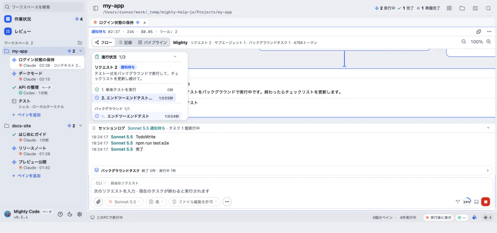
#サンドボックス
ワークスペースごとにエージェントをサンドボックスで実行できます。Mac は macOS のサンドボックスを、Windows は実験的な Windows サンドボックスを使います。既定ではオフです。サイドバーでワークスペースを右クリックして サンドボックス設定… を選び、エージェントをサンドボックスで実行 をオンにして 保存 を押します。次の実行から適用され、ペインのヘッダーに サンドボックス の表示が付きます。表示を押すと設定が開きます。
#ブロックするもの
- 書き込み: ワークスペース（またはペインの worktree）フォルダー、エージェント自身の設定フォルダー、一時フォルダー、パッケージキャッシュにだけ書き込めます。
- git: コミット、ブランチ、マージ、リベースはできます。
.git/config、.git/hooks、.git/infoは変更できません。 - 指示ファイル: 指示ファイルを読み取り専用にする（.mighty.yaml、AGENTS.md、CLAUDE.md、エージェント設定） がオン（既定）なら、
.mighty.yaml、AGENTS.md、CLAUDE.mdとエージェントのプロジェクト設定は変更できません。読み取り専用のパス にパスを追加できます。 - 読み取り:
~/.ssh、~/.aws、~/.gnupg、~/.config/gh、ブラウザーの Cookie、アプリのデータフォルダー、他のエージェントのログインファイルは読めません。エージェントは自分のログインだけを読みます。 - 接続: 接続を許可リストに制限 がオン（既定）なら、エージェントはアプリのプロキシ経由でのみ外に出ます。エージェントの API アドレスと 許可する接続先 に入れた接続先だけがそのまま通ります。
#Windows（実験的）
Windows 管理者権限なしで動きます。エージェントの CLI は、低い整合性 (Low integrity) で書き込みを制限したトークンを使い、他のウィンドウやクリップボードに触れられないジョブの中で実行されます。設定ボックスに 実験的 の表示と このコンピューターで防ぐこと の一覧が出ます。
オンにする前の承認: エージェントをサンドボックスで実行 をオンにして 保存 を押すと、変更するフォルダー権限の一覧が先に表示されます。ワークスペースのフォルダーには低い整合性ラベルと書き込みエントリ、.git/config・.git/hooks・.git/info と指示ファイルには書き込み拒否エントリ、~/.ssh・~/.aws などの秘密フォルダーには読み取り禁止ラベルが付き、エージェントのフォルダー (~/.claude、~/.codex など) はそのエージェントだけが書けるようになります。承認してオンにする を押すまで何も変わりません。変更はすべて記録され、サンドボックスをオフにして保存するとそのワークスペースの変更を元に戻します (複数のワークスペースで共有する秘密フォルダーのラベルは、最後のワークスペースをオフにしたとき)。アプリを削除する前に すべての変更を元に戻す を押してください。
防げないこと:
- 接続の許可リストは助言レベルです。プロキシ設定に従うプログラムだけが一覧とカードを通り、プロキシを無視して直接接続するプログラムは防げません。
- オンにしたときに無かった指示ファイル (新しく作った
AGENTS.mdなど) は変更できます。 - 他のエージェントのログインファイルは読めます (書き込みは防ぎます)。ブラウザーのプロファイルは閉じません。
- 低い整合性ラベルが付いたフォルダーには、このコンピューターの他の低整合性プログラムも書き込めます。
- ネットワークフォルダー (
\\server\share) や NTFS でないドライブのワークスペースではオンにできません。
エージェント: Claude、Codex、Antigravity、OpenCode、pi はサンドボックスで実行されます。Hermes はプログラムと設定が同じフォルダーにあるため実行を拒否します (サンドボックスなしでは実行しません)。パッケージキャッシュと一時ファイルは %USERPROFILE%\AppData\LocalLow\MightyCode\sandbox の下のワークスペース専用フォルダーを使います。
#接続を許可する
リストにない接続先に接続しようとすると、入力欄の上に この接続を許可しますか？ カードが表示されます。
- 今回のみ: この実行が終わるまで許可します。
- 常に: ワークスペースの許可リストに追加して許可します。
- 拒否: ブロックします。5 分間回答がない場合もブロックします。
ブロックされた動作は進行状況に 1 行残り、スマートフォンの同じペインと設定の 最近ブロックした動作 にも理由とともに表示されます。スマートフォンでもカードに回答できます（常に は Mac のみ）。
#審査エージェント
審査エージェントが先に判断 をオンにすると、承認カードや接続カードが表示されたとき、読み取り専用のエージェント（既定は Claude の haiku）が先に確認します。
- 安全な動作（ファイルの読み取り、ワークスペース内のファイル編集、ビルド・テストのコマンド、パッケージリポジトリへの接続）だけを自分で許可します。
- ワークスペース外への書き込みや危険なコマンドは許可できません。拒否するか、あなたに任せます。
- 20 秒以内に回答がない場合やエラーの場合は許可せず、あなたに確認します。
- 判断のたびにペインに 1 行残ります。その間もカードは表示されたままなので先に回答でき、あなたの回答が優先されます。
- 許可はあなた自身の言葉だけです。審査エージェントの文章は許可とみなされません。審査の実行にも費用がかかり、使用量に記録されます。
#制限
- シェルペインのコマンド、SSH ワークスペース（エージェントはリモートマシンで実行）、リモートワークスペースには適用されません。
- Windows Windows のサンドボックスは Mac より弱いものです。Windows を参照してください。
- サンドボックスで動く実行はアプリを閉じると一緒に終わります。バックグラウンドでは続きません。
- macOS の
sandbox-execは Apple が非推奨にしたツールです。ない場合、サンドボックスを有効にしたワークスペースでは実行を拒否します。実行するにはサンドボックスをオフにしてください。 - キーチェーンにログインを保存するエージェント（Claude、Codex、Antigravity）はログインキーチェーンを読めます。他のアプリの項目は macOS が別に確認します。
06Mightyオーケストレーション
Mightyオーケストレーションは、エージェントのペインが作業している間に、別の作業を隣の子ペインに任せて並行して進める機能です。子は親と同じエージェント(Claude、Codex、Antigravity)で実行され、3つのうち別のエージェントでも実行できます(CodexとAntigravity)。子ペインはそれぞれ自分のgit worktreeとブランチで作業するので互いのファイルに触れず、終わったらサイドバーのカードから結果を親のブランチにマージします。以前の名前はエージェント委任です。
子ペインを開く方法は二つあります。
- 自分で起動する: 実行中のClaudeペイン、または子がファイルを変更できるモードのCodex・Antigravityペイン(CodexとAntigravity)に次のリクエストを書き、⌘Enterを押します。リクエストが新しいworktreeの子ペインですぐに実行されます(新しいworktreeで実行する)。
- Claudeに分けて任せる: Claude(またはCodex)に、作業を分けて子ペインに任せるよう頼みます。エージェントが子を作り、レポートを読み、マージまで行います(Claudeに分けて任せる)。
実験的な機能です。初期状態でオンで、設定でオフにできます。まずは練習用のリポジトリで試してください。
#全体の流れ
自分で起動するときの流れです。
- gitリポジトリのフォルダーをワークスペースとして開き、Claudeのペインで作業を頼みます。
- Claudeが作業している間に次のリクエストを書き、⌘Enterを押します。実行中の作業はそのまま続き、このペインの隣に子ペインが開いてリクエストをすぐに実行します。
- 子ペインはサイドバーで親ペインの下に一段下げて表示され、横に状態が付きます。
- 子が作業を終えてコミットし、レポートを残すと、状態が報告済みになります。
- 子のカードでマージボタンを押し、結果を親のブランチに取り込みます。
- マージされると、その子ペインをすぐ破棄するかを尋ねます。破棄を選ぶと、子ペインとworktree、ブランチが片付けられます。マージした内容は親のブランチに残ります。
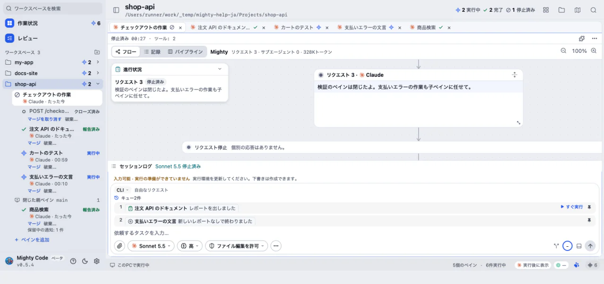
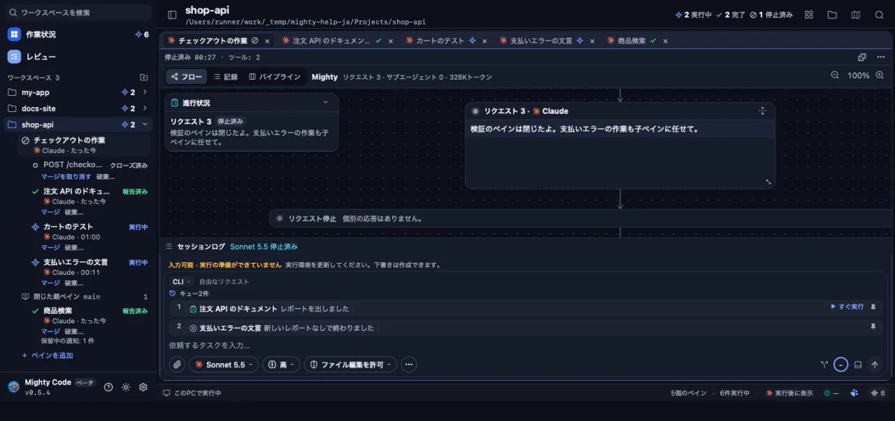
| したいこと | 方法 |
|---|---|
| 今の作業のあとに続けて実行 | Enter(実行中の送信先がキューのとき、既定) |
| 今の作業とは別に、すぐ実行 | ⌘Enterまたは新しいworktreeで実行ボタン、実行中に実行中の送信先で選んだエージェントでEnter、またはキューの行のすぐ実行ボタン |
| 結果を親のブランチに取り込む | カードのマージボタン |
| マージを取り消す | カードのマージを取り消すボタン |
| 結果を捨てる | カードの破棄…ボタン |
#新しいworktreeで実行する
Claude・Codex・Antigravityペインの実行中にリクエストを書いて⌘Enterを押すか、停止ボタンの横にある丸い新しいworktreeで実行ボタン(ブランチのアイコン)を押します。実行中の作業はそのまま続き、リクエストは専用のworktreeを持つ新しい子ペインですぐに実行されます。その間に親ペインで入力を始めていなければ、新しいペインがすぐに画面に出ます。
- 実行中のペインでEnterを押すと、初期設定ではリクエストはキューに入り、今の作業が終わったあとに実行されます。実行中の送信先でエージェントを選んでおくと、Enterでもそのエージェントの新しいworktreeですぐ実行します(下記)。入力欄の案内文に、Enterの今の働きが表示されます。
- 新しいworktreeは、作れる場所でだけ使います。コミットのあるブランチをチェックアウトしたgitリポジトリである必要があります。それ以外の場所(gitリポジトリでない、まだコミットがない、ブランチではなくコミットをチェックアウトしている)では、⌘EnterはEnterと同じようにリクエストをキューに入れます。
- 子は親の最後のコミットから始まります。ブランチ
mighty/<子のid>ができ、worktreeはプロジェクトフォルダーの外(Macは~/.mightycode/worktrees/<子のid>、Windowsは%USERPROFILE%\.mightycode\worktrees\<子のid>)にできるので、親の作業には触れません。親のフォルダーでまだコミットしていない変更は、子には渡りません。 - ペインと同じエージェントの子は、親ペインの権限モードで、親ペインのモデルと思考レベルで実行します。すべてのリクエストをプランモードで始めるスタイルでは、プランモードで始まります。親と同じ表示で開き、親がマイティ表示でスタイルを使っていたなら同じスタイルで始まります(スタイルの進み具合は子の最初のリクエストから別に数えます)。添付ファイルも一緒に渡ります。
- 最初のメッセージは入力したテキストが先に来て、その後にアプリが、子がどこで作業するかを伝え、終わったらコミットしてREPORT.mdを書くよう添えます。そうするとカードからマージできます。スラッシュコマンド(
/で始まるテキスト)は入力したとおり単独で実行され、アプリの案内は子ペインの次のリクエストとして続くため、コマンドの引数になりません。 - 別のエージェントでリクエストを実行するには、実行中に入力欄の下の行の実行中の送信先で「worktree · Codex」のようにClaude、Codex、Antigravityから選び、Enterで送ります。テキストがなく添付ファイルだけのリクエストはキューに入ります。⌘Enter(WindowsではCtrlEnter)と新しいworktreeで実行ボタンは、いつもペインと同じエージェントです。グレーの項目には実行できない理由が出ます。CLIがインストールされていないかサインインしていない(設定… › コンポーネントで確認)、ペインのモードが許す範囲でファイルを変更できるモードがない、自分で始めた子がすでに3つ開いている、のいずれかです。別のエージェントの子は、ファイルを変更でき、ペインのモードが許さないことはしない自分のモードのうち一番広いモードで始まり(CodexとAntigravity)、そのエージェントの新しいペインが受け取るモデルと思考レベルを使い、ペインと同じ表示で開きますが、スタイルは引き継ぎません。その子を作れないか始められないときは、テキストと添付ファイルは入力欄に戻り、会話に理由が書かれます。ペイン自身には送りません。ペインのエージェントはそのモードで子を持てないが別のエージェントなら持てるときは、新しいworktreeで実行ボタンは表示されず、実行中の送信先では別のエージェントだけを選べ、⌘Enterはリクエストをキューに入れます。
- すでにキューにあるリクエストも、その行のすぐ実行ボタンで同じように送れます。エージェントはボタンの前のエージェント選択で選びます(既定はペインのエージェント)。その子を作れない、または始められないときは、リクエストはキューの先頭に戻り、会話に理由が書かれます。
- 子ペインは同じエージェントのふつうのペインと同じように使えます。承認カードに答え、追加のリクエストを送り、権限モードを変えられます。
- 自分で起動した子について、親ペインのClaudeは通知を受け取りません。親が任せた作業ではないからです。親のツールもこの子を一覧に出さず、マージも追加の指示もできません(
human_started)。サイドバーで状態を確かめ、カードのボタンを自分で使ってください。 - 開いておける子は親ペイン一つにつき3つまでで、ディスクの空きが10 GB必要です。終わった子ペインを閉じるか破棄すると空きができます。
- 子を作れないとき、または作った後で起動できなかったとき(開いている子がすでに3つある、ディスクが足りない、worktreeや最初の実行が失敗したなど)は、ペインの会話に理由が残ります。そのとき、テキストはEnterを押したときと同じようにそのペインの次のリクエストになります。キューがいっぱいなら入力欄に戻ります。起動できなかった子は、カードから破棄するまで一覧に残ります。
- 子ペインやMightyオーケストレーションをオフにしたペインでは、⌘EnterもEnterと同じようにキューに入れます。スマートフォンから実行中のペインに送った内容も、常にキューに入ります。人が送った内容が実行中のタスクに割り込むことはありません。
#ペインごとの worktree
1 つのワークスペースで複数のエージェントペインを同時に動かせるよう、ワークスペースのエージェントペインも子ペインと同じように自分の git worktree とブランチで作業できます。互いのファイルを上書きせず、終わったらペインの上のバーからワークスペースのブランチにマージします。
- worktree で開くとき: 同じワークスペースにワークスペースフォルダーで作業するエージェントペインが既に開いていると、新しいエージェントペインを開くときに 新しい worktree で開く、新しい worktree で開き、このワークスペースでは今後も常にそうする、同じフォルダーで開く から選びます。サイドバーのワークスペース行の右クリックメニュー エージェントペインの worktree で 2 つ目のペインから確認、2 つ目のペインから常に worktree、すべてのペイン(最初も含む) のいずれかに決めておけます。すべてのペイン(最初も含む) にすると最初のペインも worktree で作業し、ワークスペースフォルダーはマージを受けるだけになります(ワークスペースフォルダーで作業中のペインがあるとマージが止まるためです)。スマートフォンから開いたペインはこの設定に従い、確認する設定ならワークスペースフォルダーで開きます。以前のセッションを続けるペインは常にワークスペースフォルダーです。
- 作り方: 子ペインと同じ規則です。ワークスペースのブランチの最新コミットから
mighty/<ペイン id>ブランチを作り、worktree は~/.mightycode/worktrees/<ペイン id>にできます。git リポジトリでないなど作れない場合は理由を示し、同じフォルダーでのみ開けます。 - SSH ワークスペース: worktree はそのマシンの
~/.mightycode/worktrees/<ペイン id>に作られ、マージ・コミット・取り消し・破棄、コピーと準備コマンドもそのマシンで同じ規則で行います(SSH マシン)。 - エージェントへの案内: ペインの最初のリクエストにアプリが一段落を添え、エージェントが自分の worktree とブランチ、PORT を知り、終わったらコミットするようにします。マージはアプリから人が行います。
- バー: ペインの上に、ブランチとベース、ベースにないコミット数(↑)、その後ベースが進んだコミット数(↓)、コミットしていない変更ファイル数(±、クリックで表示)、PORT(クリックで localhost を開く)を表示します。変更が残っているとボタンが コミットしてマージ になり、新しいファイルも含めてコミットしてからマージします。秘密情報らしい新しいファイルや 5 MB を超える新しいファイルはコミットせず、知らせます。
- 競合: マージが競合で止まると 競合の解決を依頼 ボタンが現れます。押すとエージェントにベースブランチを取り込み、競合を解決してコミットするよう依頼します。
- バーのメニュー: 変更を表示(ベースとの差分のあるファイルと diff)、この worktree でターミナルを開く、Finder で表示 (Windows: エクスプローラーで表示)、直近のマージの取り消し(その後ワークスペースフォルダーが変わっていない場合のみ)、プルリクエストを作成…(確認後にブランチを origin にプッシュし、強制はしません。GitHub ならプルリクエスト作成ページを開きます)、破棄(このペインのブランチから分かれた子ペインがあると拒否します)。
- 準備: ワークスペース行のメニュー worktree にコピーするファイル… に書いたファイル(例:
.env)を新しい worktree にコピーし、worktree の準備コマンド… を 1 回実行します。ペインの実行にはPORT、MIGHTY_WORKSPACE_FOLDER、MIGHTY_WORKTREE環境変数とポート範囲の変数が入ります。 - 閉じるときと一覧: マージしていない作業がなければ、ペインを閉じると worktree も削除します。作業が残っていれば保持し、ワークスペース行のメニュー worktree 一覧… からペインとして開き直す、マージする、削除することができます。
- レビュー待ち: 作業が終わって変更が残ったworktreeペインと子ペインはレビュー待ちに集まります。バーのメニューのエディタでフォルダを開くは、ペインが作業するフォルダを外部エディタで開きます。
#Issue から始める
MightyWork のタスク、GitHub の Issue、Linear・Jira・GitLab の Issue を選んで、すぐに作業を始めます。サイドバーのワークスペースの右クリックメニュー タスク・Issueから開始… で一覧を開きます。
- 接続: 同じメニューの Issue トラッカー連携設定… で行います。MightyWork はログインするかトークンを入れ、GitHub は
ghを使います。ほかの Issue トラッカー で Linear、Jira、GitLab を選び、このワークスペースで使う をオンにします。- Linear: 個人 API キー と チームキー(空欄ですべてのチーム)。
- Jira Cloud: サイトのアドレス(
https://チーム.atlassian.net)、Atlassian アカウントのメール、API トークン、プロジェクトキー。 - GitLab:
glabがインストールされログイン済みならそれを使い、なければ 個人アクセストークン を入れます。プロジェクトのパス とアドレスは空欄ならoriginから読みます。 - トークンは OS のキーチェーン(Mac のキーチェーン、Windows の資格情報マネージャー)にだけ保存され、画面、ログ、状態ファイルには残りません。接続を確認 で確認し、接続解除 で削除します。
- 一覧: オンにしたトラッカーごとにタブができます。自分の Issue、オープン、すべて で絞り込み、最初に選ばれるチップは 既定のフィルター(自分に割り当て、未完了)に従います。一覧は開いたときと更新したときだけ読みます。
- ワークツリーペインで開始: Issue ごとに専用の worktree を持つペインを開きます。Linear・Jira・GitLab の Issue のブランチは
<接頭辞>/<キー>-<タイトル>(例:lin/ENG-123-fix-login、jira/PROJ-7-…、gl/12-…)で、MightyWork のタスクと GitHub の Issue はmighty/<ペイン id>のままです。Issue のタイトル、本文(Jira の本文は Markdown に変換)、子項目、リンクが最初の依頼に入ります。worktree バーに連携した Issue のチップが表示され、クリックで Issue を開きます。 - PR: Git ワークベンチで PR を作ると、本文の末尾に Issue のリンクが付きます(本文が空ならコミットの件名一覧と一緒に)。
- Issue への書き戻し: トラッカーごとにスイッチでオンにします。開始で進行中、PR 作成でレビュー中、マージで完了、PR リンクをコメント(既定でオン)。Linear はチームの started・completed の状態へ、Jira は名前の合う遷移で、GitLab は
In Progress・In Reviewラベルとクローズで動かします。書き込んだ結果はペインの記録に残ります。MightyWork は 開始(進行中)・PR(レビュー)・マージ(完了)時にタスク状態を自動更新 ひとつで決まり、GitHub には書き込みません。
#会話の分岐
積み上げた文脈をそのままに別の方法を試したいとき、画面の会話を引き継いだ新しい画面を新しいworktreeで開きます。元の画面の会話とファイルはそのままです。
- 開く場所: 画面の···メニューの新しいworktreeに分岐、または結果ブロックの見出しの右クリックメニューのここから分岐（そのリクエストまでの会話）。実行中の画面は終わってから分岐できます。
- worktree: 元の画面のHEADから
mighty/fork-<短いid>ブランチとworktreeを作ります。元がworktree画面なら、元と同じ基準ブランチへマージします。コピーするファイル、準備コマンド、.mighty.yaml、ポート範囲はほかのworktree画面と同じです。 - コミットしていない変更: コミットしていない変更を移す（gitignoreのファイルは除く）（既定でオン）にすると、元の変更ファイルと新しいファイルを新しいworktreeへ移します（
git stash createで元に触れずに作り、新しいworktreeに適用します）。gitignoreのファイルは移しません。移せないときは元をそのままにし、新しい画面の記録に理由を残します。 - 会話の引き継ぎ: ClaudeとCodexは最初のリクエストでCLIが元のセッションを新しいセッションに複製します（Claude
--fork-session、Codexexec fork）。元のセッションは変わりません。Antigravity、opencode、Hermes、piと、最後ではないリクエストから分岐したときは、最初のリクエストの前に最後のリクエスト、計画、最後の結果、変わったファイルの一覧をまとめた要約（最大12,000文字、秘密に見える行は削除）を付けます。CLIが元のセッションを見つけられないときは次のリクエストに要約を付けます。 - 表示: 新しい画面はサイドバーで元の下に字下げして表示され、画面の上に元の名前と元の画面へ移るボタンがあります。スマートフォンの画面情報にも
forkedFromとして入ります。 - SSH ワークスペース: 分岐した画面の worktree はそのマシンに作られ、コミットしていない変更もそのマシンで移します(新しいファイルはリンクをたどらず、すでにあるファイルを上書きしません)。Claude の会話記録もそのマシンで新しいフォルダー名へコピーします。マシンに届かないときは分岐せず、理由を知らせます。
#比較実行
難しい作業は、いくつかのやり方を試して一番よいものを選ぶほうが早いことがあります。1 つの依頼を同じ基準コミットから複数のエージェント(または同じエージェントを複数回、たとえば Claude を 3 つ)に同時に任せ、結果を並べて比べて 1 つをマージします。
- 開始: 入力欄に依頼を書き、待機中のペインでは送信ボタンの右クリックメニュー、実行中のペインでは 実行中の送信先 メニューから 比較実行… を選びます。選択画面でエージェントとモデルの行を選び(行を追加。同じエージェントを何度でも入れられます)、基準コミット(既定は HEAD、このブランチの最近のコミットから)と、必要なら 報告後のテスト(
.mighty.yamlの実行アクションやタスク)を選んで 開始 を押します。 - 選べるエージェント: いま子を作れるエージェント(Claude、Codex、Antigravity のうちインストール・ログイン済みで、ファイルを変更できるモードがあるもの)だけが表示されます。行は最大 4 つです。比較実行の子は、自分で開いた子 3 つや
delegateが作った子 3 つとは別に数え、1 つのペインに 4 つまで開けます(そのペインのすべての比較実行の合計で、SSH ワークスペースでも同じ)。そのため 2 回目の比較実行では、1 回目の子をマージ、破棄、または閉じるまで、残りの枠の分だけ選べます。 - 実行: 行ごとに 新しい worktree で実行 と同じ子ペインが、同じ依頼、同じ基準コミット、それぞれの ポート範囲 で同時に開きます。行でモデルを選ぶと、その子はそのモデルで実行します。ある行が開始できなければその列に理由が残り、ほかはそのまま進みます。
- 予算: 1 日の予算を設定していて、今日の利用額に予想コストを足すと超えそうなときは、開始前に警告します。予想コストは、使用量台帳の直近 30 日の記録から同じエージェント・モデルの 1 回の実行の平均を子ごとに足したおおよその値です(そのモデルの記録がなければエージェントの平均、それもなければ子ごとに $1)。
- まとめカードと比較結果: 開始したペインの下、サイドバーにカードが出て、押すと 比較結果 が開きます。列ごとにエージェントとモデル、状態、基準に対する変更ファイル数と +/− 行(
git diff --shortstat <基準>...<ブランチ>)、所要時間、使用量台帳のコスト、選んだテストの結果(子が報告するとその worktree で 1 回実行)が表示され、ペインを開く、diff を見る、マージ、破棄 のボタンがあります。まとめはペインの状態に保存されるので、アプリを開き直しても開けます。 - 選ぶ: マージ は報告を終えた子だけで、カードのマージと同じ規則とマージ前チェックを通ります。マージが終わると、残りの子をまとめて破棄するか尋ねます。マージの取り消しは子のカードからそのままできます。比較カードを消す はカードだけを消し、子は残ります。
- スマートフォンのペイン情報には
compareRunsとして入りますが、スマートフォンの画面にはまだ表示されません。 - SSH ワークスペース: 子ごとにそのマシンに worktree のペインが一つでき、選んだコミットから始まり、依頼がそのペインの最初の実行になります。そのマシンで動くエージェント(Claude、Codex、Antigravity、pi)だけを選べます。マージは worktree バーの コミットしてマージ と同じ(マージ前チェックを含む)で、破棄はバーの破棄と同じです。テストはそのマシンで
.mighty.yamlの実行アクション・タスクから選びます。マシンに届かないときは子を作らず、マージは失敗し、破棄は止まります。
#ポート・実行アクション・後片付け
リポジトリの最上位にある .mighty.yaml に、worktree ごとのポート、実行アクション、worktree を消すときに動かす後片付けコマンドを書けます。このファイルのコマンドは タスク パネルで 信頼して承認 を押した後にだけ実行され、ファイルが変わると再び承認が必要です。リモートのワークスペースでは使いません。
version: 1
worktree:
setup: npm ci
teardown: docker compose down -v
teardownTimeoutSeconds: 60
ports: 10
run:
dev:
command: npm run dev -- --port $MIGHTY_PORT
e2e:
command: npm run test:e2e
concurrent: false
url: off- ポート範囲: worktree ごと(メインのチェックアウトも)に、ほかと重ならないポートを
ports個(既定 10 個)41000 番から割り当てます。ほかのプログラムがすでに待ち受けているポートは飛ばします。割り当てはアプリのデータフォルダーのports.jsonに残り、worktree を消すと返されます。アプリを閉じている間に消えた worktree のポートは次の起動時に返されます。ports: 0なら割り当てません。バーに:41010–41019のように表示されます。 - 環境変数: 準備コマンド、後片付けコマンド、実行アクション、タスク、worktree ペインのエージェントに
MIGHTY_PORT(最初のポート)、MIGHTY_PORT_COUNT、MIGHTY_WORKTREE_NAME、MIGHTY_ROOT_PATH(メインのチェックアウト)、MIGHTY_WORKTREE_PATHが入ります。コマンド中の$MIGHTY_PORTはシェルが展開します(Windows の cmd では%MIGHTY_PORT%)。worktree.envではこれらの名前を使えません。 - 実行アクション(
run): タスク パネルの 実行 欄に、アクションごとの状態と 開始・停止 ボタンが表示されます。出力にhttp://localhost:<ポート>のようなアドレスが見つかるとリンクで表示し(url: auto、既定)、そのポートが worktree の範囲外なら ポート範囲外 と知らせます。urlにアドレスを書くとそのアドレスを、offなら何も表示しません。concurrent: falseのアクションには 単独 の印が付き、開始すると同じリポジトリのほかの worktree で動いている同じアクションを先に止めます。実行中のアクションはバーにも表示されます。 - 後片付け(
teardown): worktree を破棄するとき、またはマージしたペインを閉じて worktree を消すとき、まずその worktree の実行アクションを止め、worktree フォルダーで後片付けコマンドを実行します。teardownTimeoutSeconds(既定 60 秒)以内に終わらなければ止めます。失敗しても止めても worktree は消し、結果はペインの記録と タスク パネルに残ります。 - 個人設定:
.mighty.local.yamlに同じキーを書くとその値が優先されます。実行アクションは名前ごとに上書きします。
#ターン終了時の検証
.mighty.yaml の verify に型チェック、リント、ユニットテストなどのコマンドを書いておくと、エージェントペインのリクエストが正常に終わるたびにそれを実行して結果を確かめます。失敗すると失敗の要約を同じエージェントに次のリクエストとして送って直させ、もう一度確かめます。ほかのコマンドと同じく タスク パネルで 信頼して承認 を押してからだけ実行され、verify を追加・変更すると再承認が必要です。承認前の一覧に verify: 行でコマンドがそのまま表示されます。
verify:
commands:
typecheck: npx tsc --noEmit
test:
command: npm test
cwd: web
timeoutSeconds: 600
maxRounds: 2
when: changed
browser:
runAction: dev
paths: [/, /settings]- いつ: リクエストが正常に終わったときだけです。停止・失敗したとき、承認や質問を待っているとき、キューに次のリクエストがあるときは行いません。委任した子ペイン、比較実行の子、ミラーペインも対象外です。
when: changed（既定）はリクエストがファイルを変えたときだけ、alwaysは毎回確かめます。スナップショットで変更がわからないフォルダでは確かめます。 - どこで: リクエストが作業したフォルダ（worktree ペインならその worktree）、
cwdがあればその下のフォルダで順に実行します。実行アクションと同じ環境変数（MIGHTY_PORTなど）とworktree.envが入ります。コマンドごとにtimeoutSeconds（既定 300 秒）以内に終わらなければ失敗です。SSH ワークスペースはそのマシンで実行し、サンドボックスをオンにしたワークスペースはエージェントの実行と同じサンドボックスの中で実行します（準備できなければ実行しません）。 - 自動修復: 失敗したコマンドごとに出力の最後の 40 行を集め（秘密値に見える行と
worktree.envの値は消し、合計 6,000 文字以内）、「検証失敗 — 修正してください」というリクエストで送ります。エージェントが終わるともう一度確かめます。 - 止まるとき: 合格すれば終わります。修復リクエストを
maxRounds回（既定 2、0〜5）送っても失敗するとき、修復後も同じエラー（時刻や数字を除いた出力が同じ）が出るとき、もう一度実行すると1 日の予算を超えそうなとき、人がそのペインに何かを送るか実行を止めたとき、修復リクエストが正常に終わらなかったときに止まります。人が止めた場合以外は OS の通知とスマートフォンの通知で知らせます。maxRounds: 0なら確かめるだけで修正は頼みません。 - ブラウザ点検（
browser）: このコンピュータにインストールされた Chrome、Edge、Chromium、Brave のいずれかをウィンドウなしで専用プロファイルで起動し、開発サーバーのpaths（既定/）を開いて、コンソールエラー、捕捉されない例外、失敗したリクエスト（4xx・5xx、ネットワークエラー）、アクセシビリティツリーの要約とスクリーンショットを残します。アドレスはurl（このコンピュータのアドレスのみ）か、runActionで選んだ実行アクションが出力したアドレスで、この worktree のポート範囲やその実行アクションのポート以外のアドレスは開きません。ブラウザはダウンロードせず、インストールされていなければそう書いて残りの検証はそのまま行います。エージェントもmighty_browser_checkツールで同じ点検を自分で行えます。 - 結果は結果カードの検証レシートに残ります。
#Claudeに分けて任せる
ClaudeかCodexのペイン(親)が作業を分けて、ほかのペイン(子)に任せることもできます。別のエージェントを指定しなければ、子は親と同じエージェントです。子がレポートすると、親が通知を受け取ってレポートを読み、結果をマージするかどうかを決めます。ClaudeとCodexの親は、MacアプリとWindowsアプリの両方で使えます。
- gitリポジトリのフォルダーをワークスペースとして開き、Claudeのペインを開きます。このペインが親です。
- 「delegateツールでMightyの子ペインを二つ開いて、この作業を分けて任せて」のように、ツール名を入れて頼みます。「分けてやって」とだけ言うと、Claudeが自分の中のサブエージェントで済ませることがあります。
- 子ペインは親の隣に開き、サイドバーでは親の下に一段下げて表示されます。
- 親が使うツールは
delegate(任せる。agentで子のエージェントをclaude、codex、antigravityから指定できます)、list_children(子の一覧)、child_status(状態とレポートを読む)、merge(マージ)、follow_up(追加の指示)です。discard(破棄)は親には使えず、カードからあなただけが行えます。 - 子ごとにブランチ
mighty/<子のid>とworktree(Macは~/.mightycode/worktrees/<子のid>、Windowsは%USERPROFILE%\.mightycode\worktrees\<子のid>)ができます。子は親の最後のコミットから始まります。 - 任せた作業はTASK.mdに、結果はREPORT.mdに書かれます。どちらもworktree内のgitが無視するフォルダーにあり、コミットされません。
- 子の権限モードは親が選んだモードで、親のペインのモードより広くできません。別のエージェントの子は、親のモードがしないことはできません。親のモードが確認せずにファイルを変更するとき(編集承認モードかautoモードのClaude、承認を求めるか作業フォルダモードのCodex、編集を許可モードのAntigravity、フルアクセスモードのどのエージェントも)だけ確認せずにファイルを変更し、親のモードがファイルを変更できるときだけ確認したうえでファイルを変更し、親のモードが確認せずにシェルコマンドを実行するとき(autoモードのClaude、読み取り専用か作業フォルダモードのCodex、フルアクセスモードのどのエージェントも)だけ確認せずに実行し、フルアクセスの下でだけフルアクセスを持ちます。そのため、シェルコマンドの前に確認するClaudeの編集承認モードの下では、Codexの子は作業フォルダではなく承認を求めるになり、プランモードか手動モードのClaudeのペインはCodexやAntigravityの子をまったく持てません。広げられるのはあなただけで、実行と実行の合間に、子ペインの入力欄の権限メニューかスマートフォンの設定から行います。
- 子ペインは親ペインと同じ表示(フロー, 記録, パイプラインのうち同じもの)で開きます。親がマイティ表示のパイプラインを使っていたなら、子もパイプラインで表示されます。
- 親は子の承認カードに答えられません。子ペインにカードが出たら、そのペインであなたが答えてください。
- 一つの親が
delegateツールで作って開いておける子は3つまでで、自分で起動した子の3つとは別に数えます。どちらも相手を妨げません。子はさらに委任できません。レポート済みやマージ済みの子も、ペインが開いていれば3つに入るので、終わった子ペインを閉じると空きができます。ディスクの空きが10 GB未満だと委任は断られます。 - 親は通知で子のレポートを知り(通知と保留)、
follow_upで追加の指示を送り(追加の指示)、mergeでマージします(マージ)。
#CodexとAntigravity
MightyオーケストレーションはCodexとAntigravityのペインでも使えます。既定では、子は親のエージェントで実行されます。Codexペインの子はCodexペイン、Antigravityペインの子はAntigravityペインです。
どのエージェントも3つのエージェントのどれの子でも持てます。実行中の実行中の送信先かキューの行のエージェント選択で選ぶか(新しいworktreeで実行)、ClaudeかCodexの親がdelegateのagent(claude、codex、antigravity)で指定します。子は下に書いた自分のエージェントのルールで動きます。モードも、作業を誰がコミットするかも(Claudeの子は自分でコミットし、CodexとAntigravityの子の作業はアプリがコミットします)子のエージェントに従います。通知とマージは親のエージェントに従います。delegateは、知らないエージェント(agent_unknown)、インストールされていないかサインインしていないエージェント(agent_unavailable)、子のエージェントのモードでないか、そのモードではファイルを変更できないか、親のモードより多くのことができるモードを拒否します(モードの比べ方はClaudeに分けて任せるにあります)。
- 子が作業できるモード: 子は親の権限モードで始まるため、CodexとAntigravityのペインは、子がファイルを変更できるモードでだけ⌘Enterで子を起動します。Codexは作業フォルダ・承認を求める・フルアクセス、Antigravityは編集を許可・フルアクセスです。それ以外のモードでは、⌘Enterはこれまでどおりリクエストをキューに入れます。
- Codexのペインに委任ツールが付くのは作業フォルダとフルアクセスのときだけです。読み取り専用ではCodexがツールを断り、承認を求めるではアプリが表示できない方法で確認を求めるためです。
delegateは、ファイルを変更できない子のモードを断ります。Codexがmergeを呼べるのは、実行がフルアクセスで始まったときだけで、それ以外は断られる(merge_human_only)ので、カードからマージします。実行中のCodexのターンはテキストを受け取れないため、実行中のCodexの親への通知は、その実行が正常に終わったあと次の実行として届き、停止やエラーで終わったときは保留されます。 - Antigravityのペインには委任ツールがありません(Antigravityはグローバル設定からしかツールを受け取らず、アプリはその設定を変えません)。子は⌘Enter、新しいworktreeで実行ボタン、実行中の送信先でだけ起動します。
- CodexとAntigravityの子は、フルアクセスでなければ自分のworktreeでコミットできないので、変更をそのまま残すよう案内されます。子の実行がREPORT.mdを変えて正常に終わると、アプリが変更を子のブランチにコミットし(
mighty: <子のid> report r<n>)、そのコミットで報告を記録します。停止やエラーで終わったときは、次の正常な終了を待ちます。.gitignoreが除く新しいファイル、秘密情報に見える新しいファイル(.env*、*.pem、*.key、*.pfx、*.p12、*.ppk、id_rsa*、id_ed25519*、id_ecdsa*、id_dsa*、credentials*、secrets.*、.npmrc、.pypirc)、5 MBを超える新しいファイルはコミットせず、後の二つは子ペインに名前を表示します。コミットにはgitに設定した名前とメールアドレスを使い(ないと失敗し、ペインにそう表示します)、署名はしません。worktreeに未解決のマージ競合があるときは何もコミットせず、ペインにそう表示します。 - カードのマージが競合で断られたとき、競合の解決を頼むのはコミットできる子(フルアクセス)だけです。それ以外は、子をフルアクセスに切り替えてから子ペインで頼むか、そのworktreeのターミナルで自分で競合を解決してコミットしてください。
- リポジトリのサブフォルダーをワークスペースとして開いた場合、Codexの子はREPORT.mdがあるworktreeの最上位フォルダーにも書き込めて、Antigravityの子にはそのフォルダーが追加されます。
#子の状態
サイドバーに子ごとの状態が表示されます。
| 状態 | 意味 |
|---|---|
| 作成中 | worktreeとペインを作っています。 |
| 実行中 | 作業しています。 |
| 対応待ち | 承認や質問へのあなたの答えを待っています。 |
| 報告済み | REPORT.mdを残して実行を終えました。マージできます。報告のあとの実行が何も変えずに終わっても、この状態のままです。 |
| マージ済み | 親のブランチにマージされました。 |
| 終了 | 新しいレポートなしで実行が終わりました。 |
| 中断済み | アプリを終了したため、実行が途切れました。 |
| 開始失敗 | 子ペインを開始できませんでした。 |
| クローズ済み | ペインが閉じられました。破棄するまで一覧に残ります。 |
子が新しい実行を始めると報告済みの状態は外れ、もう一度レポートすると次のレポート番号が付きます。子がレポートなしで終わったときは、子ペインで、コミットしてREPORT.mdを書くようにもう一度頼んでください。
#マージ
子の結果を親のブランチに取り込む方法は二つあります。
- カードのマージボタン: あなたが押します。自分で起動した子は、この方法でだけマージします。早送り(fast-forward)できればそうし、できなければマージコミットをちょうど一つ作ります。先に衝突を調べ、断ったときは理由をカードに表示します。 子がまだ作業中のとき、親ペインが実行中のとき、親フォルダーにコミットしていない変更があるときは断らずにマージを予約します。カードに何を待っているかが表示され、それが終わると自動でマージされます。子が新しい報告なしで終わると予約は取り消されます。子を作ったときの親ブランチがその後いまチェックアウトしているブランチ(たとえば main)にマージされたか削除されていれば、いまのブランチにマージします。親の
mergeツールも同じようにブランチに従います。 マージが通ると、その子ペインをすぐ破棄するかを尋ねます。破棄を選ぶと子ペインを閉じ、worktreeとブランチを削除します。マージした内容は親のブランチにそのまま残りますが、そのマージは取り消せなくなります。あとでを選ぶとカードはそのまま残ります。 競合で拒否されると、アプリが子ペインに、親ブランチを取り込んで競合を解決し、コミットしてもう一度報告するよう頼みます。カードにそう表示され、子は実行中になります。子がもう一度報告すると、自動でマージされます。この依頼は報告ごとに一度だけ送られます。子ペインが今すぐ実行を始められないときは送らず、カードには拒否の理由だけが残り、次にマージするときにもう一度試します。依頼を受け取っても開始できなかったときや、子がプランモードで計画を立てただけで終わったときは、子ペインに直接、競合を解決してもう一度報告するよう頼んでください。CodexとAntigravityの子には、フルアクセスのときだけ依頼します(CodexとAntigravity)。 - 親の
mergeツール: Claudeに任せた子だけで使えます。早送りだけを行います。親はchild_statusで得た子のheadを一緒に渡します。子がまだレポートしていない、子か親のフォルダーにコミットしていない変更がある、子のheadが動いた、親のブランチがその間に先へ進んだ(分岐)、または親のブランチがチェックアウトされていない場合は断られ、何も変わりません。このツールで承認カードが出るかどうかは、親のペインの権限モードによります。Codexの親は実行がフルアクセスで始まったときだけ使え、ほかのモードではmerge_human_onlyで断られるので、カードからマージします。
子を一つマージすると親のブランチが先へ進むので、残りの子はふつうmergeツールで分岐として断られます。そのときはカードのマージボタンでマージしてください。
マージしたあと、子が新しい実行を始めるまでは、ペインを閉じてもカードにマージを取り消すボタンが残ります。親のブランチがそのマージのまま、親のペインが待機中で、コミットしていない変更がないときだけ使えます。取り消すと、ファイルはマージ前の状態に戻り、ペインが開いている子はもう一度報告済みになります。
マージはできたのに委任の記録を保存できなかったときは、カードがそう知らせます。マージはそのままで、記録は次の保存で書き直されます。
#破棄
カードの破棄…ボタンは、子のworktreeとブランチを、まだマージしていない作業ごと削除します。破棄できるのはあなただけで、親にはできません。マージした子は、マージの直後に尋ねるウィンドウからも破棄できます(マージ)。
- 確認ウィンドウ(この子ペインを破棄しますか？)は、子のworktreeの中に入っていて一緒に削除されるほかのworktreeをすべて示します。
- その一覧を確認できないときは、確認ウィンドウに破棄ボタンは出ず、何も止めたり削除したりしません。
アプリがまだマージしていない作業を勝手に消すことはありません。マージしていない作業が消えるのは、あなたが押す破棄のときだけです。
#ペインを閉じる・後片付け
- マージ済みの子ペインを閉じると、作業がすべてマージ済みで未コミットの変更が残っていなければ、アプリがworktreeとブランチを片付けます(
git branch -d、強制削除はしません)。条件に合わなければペインだけが閉じ、worktreeは残ります。 - マージする前に子ペインを閉じると、アプリではもうマージできません。カードには破棄だけが残り、ブランチとworktreeは破棄するまでそのまま残ります。
- 開いている子がある親のペインを閉じると、デスクトップアプリはまず確認します(この親ペインを閉じますか？)。閉じるのは親のペインだけで、子は作業を続けます。
- 親ペインが閉じられた子は、サイドバーの閉じた親ペインの項目の下にカードとして残ります。その子の通知はカードに保留されて件数が表示され、追加の指示はもう受け取りません。
- 開いている子がある、または片付けていない子のworktreeが残っているワークスペースは削除できません。
- Windows 子のworktreeの中にジャンクションやシンボリックリンク(リンクで作った
node_modulesなど)があると、マージ済みの子ペインを閉じてもアプリはworktreeを片付けずに残します。リンクをたどってリンク先のフォルダーまで消してしまわないためです。この場合はカードの破棄…ボタンで削除します。破棄はリンクそのものだけを先に外し、リンク先のフォルダーには触れません。
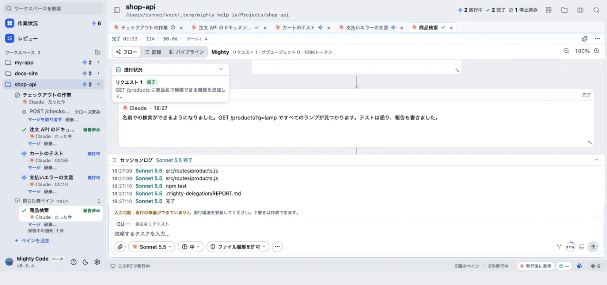
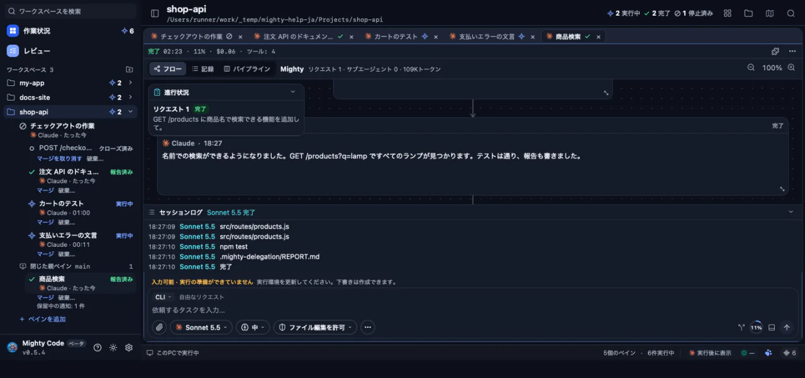
#通知と保留
Claudeに任せた子がレポートしたときと、開始できなかったときに、親へ通知が一度届きます。親が始めた実行(最初に任せた作業や追加の指示)がレポートなしで終わったときにも届きます。通知は[Mighty Code notice …]で始まる短い案内にすぎず、レポートの中身は親がchild_statusで読みます。自分で起動した子は通知を送りません。
- 親がClaudeで実行中なら、通知はその実行にそのまま届き、親のMighty表示にオレンジ色の委任の通知ブロックとして表示されます。親が応答を終えたあとに届いた通知も同じブロックで表示され、それに対するClaudeの応答は親のリクエストの結果には続かず、独立した委任の通知の図として開きます。実行中のCodexの親は、その実行が正常に終わったあと、次の実行として受け取ります。
- 親がアプリを開いたあとに実行を正常に終えて待機しているなら、通知が次の実行を始めます。
- それ以外では通知は保留されます。停止のあと、エラーのあと、アプリを開き直したあと、CLIの更新中などです。すでに保留された項目があると、新しい通知もその後ろに保留され、順番が守られます。
保留された通知は、親の入力欄の上にあるキューのいちばん上に、ピンの印が付いた行として表示されます。この行には削除ボタンがなく、ふつうのキューのリクエストと違って、停止してもアプリを開き直しても残ります。
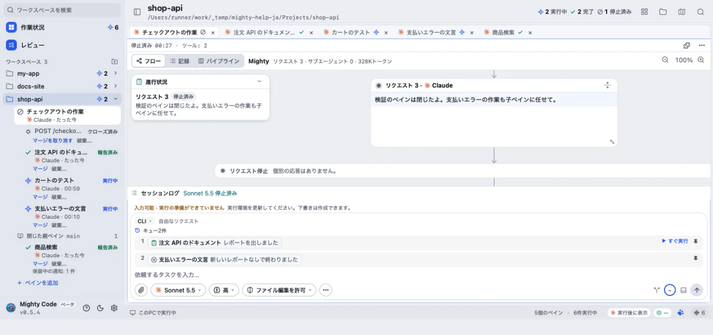
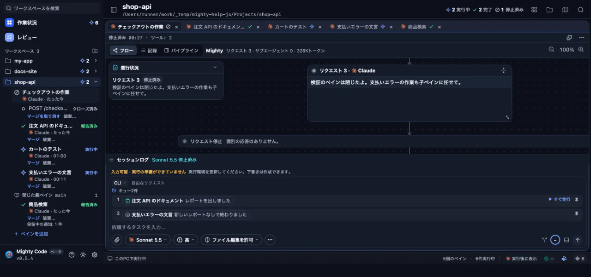
- 次に何かを送ると、保留された項目がすべて、古い順に、あなたの文より前に付いて一つの実行で届きます。
- いちばん上の保留行のすぐ実行ボタンを押すと、保留された項目すべてを一つの実行で、すぐにこのペインへ送ります。ほかの保留行にはボタンがありません。新しいworktreeを開くすぐ実行は、保留された項目をこのペイン向けに保留したままにします。項目が保留されている間は、本来なら実行中のClaudeにそのまま届けられるリクエストも、それらが送られるまでグレーのままです。
- 通知はアプリを開き直しても、ちょうど一度だけ届きます。保留された行はスマートフォンのキューにも表示され、スマートフォンから送っても一緒に届きます。
#追加の指示
親はfollow_upツールで、Claudeに任せた子に追加の指示を2回まで送れます。追加の指示は通知と同じ決まりで子ペインに届き、一つあたり48 KiBまでです。あなたは子ペインの入力欄に直接書けばよく、回数の制限はありません。
#オンとオフ
macOS オフにしない限りオンです。設定の一般タブのエージェントペインでMightyオーケストレーションを切り替えます。アプリを開き直さなくても、次に始まる実行から反映されます。同じスイッチがdefaultsキーdelegation.enabledなので、ターミナルで次のコマンドを実行してもオフにでき、defaults delete dev.mightycode.native delegation.enabledでオンに戻ります:
defaults write dev.mightycode.native delegation.enabled -bool falsemacOS 以前のバージョンはこのキーを設定したときだけオンになり、オフにするにはdefaults delete …を使っていました。今はそうするとオンのままになるので、オフのままにするには設定でMightyオーケストレーションをオフにしてください。
Windows オフにしない限りオンです。設定の一般タブのエージェントペインでMightyオーケストレーションを切り替えます。アプリを開き直さなくても、次に始まる実行から反映されます。同じスイッチがHKEY_CURRENT_USER\Software\MightyCodeの下のdelegation.enabledの値(REG_DWORD)で、0ならオフ、値がないかほかの値ならオンです。そのため、コマンドプロンプトまたはPowerShellで次のコマンドを実行してもオフにでき、reg delete "HKCU\Software\MightyCode" /v delegation.enabled /fでオンに戻ります:
reg add "HKCU\Software\MightyCode" /v delegation.enabled /t REG_DWORD /d 0 /fWindows 以前のバージョンは、その値を1にしたときだけオンでした。そのときの1が残っていれば、オンのままです。
- オンにすると、ClaudeかCodexのペインで新しい実行を始めるたびに委任ツールが付きます。すでに動いている実行には付きません。
- オフにすると外れるのはツールだけで、⌘EnterはEnterと同じようにリクエストをキューに入れます。既存の子ペイン、カード、後片付けはそのまま動きます。
#上限と対応範囲
| 項目 | 上限 |
|---|---|
| 一つの親が開いておける子 | 自分で起動して3つ、delegateで3つ、比較実行で4つ |
| 委任の深さ | 一段(子はさらに子を作れない) |
一つの子への追加の指示(follow_up) | 2回、一つあたり48 KiB |
| 任せる作業(TASK.md、自分で起動したリクエスト) | 64 KiB |
| 必要なディスクの空き | 10 GB |
- 子は親と同じエージェントで実行され、別のエージェントでも実行されます(CodexとAntigravity)。ClaudeとCodexのペインはdelegateツールでも子を作り、Antigravityのペインはツールなしで⌘Enter、新しいworktreeで実行ボタン、実行中の送信先、すぐ実行でだけ作ります(CodexとAntigravity)。
- MacアプリもWindowsアプリも初期状態でオンで、設定にスイッチがあります(オンとオフ)。スマートフォンに新しい画面はなく、保留された行はスマートフォンのキューにも表示されます。
07ターミナル・ファイルのペイン
エージェントペインの横に、ターミナルとファイルのペインを一緒に開いておけます。
#ターミナルペイン
ワークスペースのフォルダで開く本物のターミナルです。
- ターミナルペインを追加(⌘T)を選ぶか、ペインを追加 → 新しいターミナルを選びます。
- コマンドを直接入力します。
シェルが終了したら再起動をクリックします。以前のコマンド履歴は、ペインのヘッダーの…メニューの以前のコマンド履歴…で確認できます。ペインのヘッダーを右クリックしたメニューの以前のコマンド履歴も同じです。アプリを終了すると、ターミナルは再び開かれません。
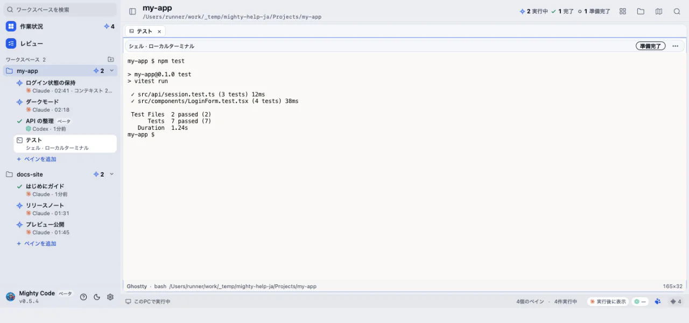
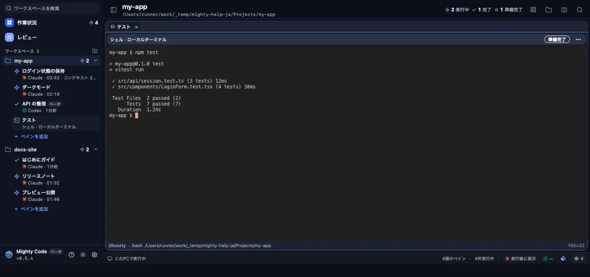
#通知とベル
ターミナルペインのプログラムや、アプリが読み取らない CLI が通知やベルを送ると、そのペインに表示します。通知は OSC 9(printf '\e]9;ビルド完了\a')、OSC 777(notify;タイトル;本文)、OSC 99(kitty、タイトルと本文のみ)を受け取ります。進捗を知らせる 9;4;… は通知ではありません。本文は制御文字を除いて 200 文字まで表示し、1 つのペインで 1 秒に 1 つだけ受け取ります。
- 別のペインを見ているときやアプリが背面にあるときは、サイドバーのそのペインの行とタブに点が付き、ペインの枠が強調されます。通知なら OS の通知も届きます。ベルは表示だけです。
- エージェントペインが承認や質問の回答を待っているときや、worktree の setup が失敗したときも同じ表示が付きます。作業状況には待っているペインの数が表示され、クリックするとそのペインへ移動します。
- ⇧⌘U(Windows: CtrlShiftU)を押すと、最後に知らせたペインへ移動します。もう一度押すと次のペインへ移動します。メニューバーのワークスペースメニューの注意が必要なペインへ移動も同じです。
- ペインを見ると表示は消えます。いま見ているペインの通知は、表示も OS の通知もしません。
- 受け取らないときは、設定のターミナル通知を受け取るをオフにします。
#開いているポートと PR
ペインのシェル、エージェント、run アクション、その下で動くプログラムが開いた TCP ポートを 10 秒ごとに読み、サイドバーのペインの行と worktree バーに表示します。アプリのウィンドウが見えている間、いまのワークスペースのペインだけを読みます。worktree バーのポートをクリックすると、ブラウザで localhost を開きます。
worktree ペインには、そのブランチの PR の番号と状態(オープン・ドラフト・マージ済み・クローズ)、チェック結果(成功・失敗・実行中)も表示します。PR は 2 分ごとに読み直し、クリックすると PR のページを開きます。サイドバーが狭いと、ポートと PR はアイコンだけになります。
#エージェントのターミナル
ClaudeやCodexがユーザーに見せる必要のあるコマンド(開発サーバー、サインインなど)を実行すると、エージェントペインの右側に専用のターミナルペインが作られます。実行中のコマンドに直接入力できます。ペインを閉じてもコマンドはアプリを終了するまで動き続け、ペインのヘッダーにあるターミナルペインを開くボタンで再び開けます。
#ファイルペイン
ワークスペースのファイルを閲覧する、読み取り専用のペインです。ファイルを編集することはありません。
- ファイルペインを開く(⇧⌘E)を選ぶか、ワークスペースのヘッダーにあるフォルダのボタンをクリックします。
- 左の一覧からファイルを選びます。名前で絞り込みで名前を検索し、矢印キーとReturnで移動します。
- 右側で内容を確認します。
| ファイル | 表示のされ方 |
|---|---|
| ソース・テキスト | 行番号とシンタックスハイライト付き。大きなファイルは最初の1 MBだけが表示されます。 |
| Markdown | プレビューとソースの表示を切り替えます。128 KBを超えるファイルはソースで表示されます。 |
| HTML | ページとして描いたプレビューとソースの表示を切り替えます。 |
| 画像・PDF | ペインに合わせる、実際のサイズ、拡大、縮小。PDFは最初のページだけが表示されます。50 MBを超える画像はプレビューせず、1億画素を超える画像は全体表示だけになります。 |
| その他 | このファイルはプレビューできません。Finderで表示で開きます。 |
ワークスペース外のファイルは表示されません。ファイルが変更された場合は更新をクリックします。
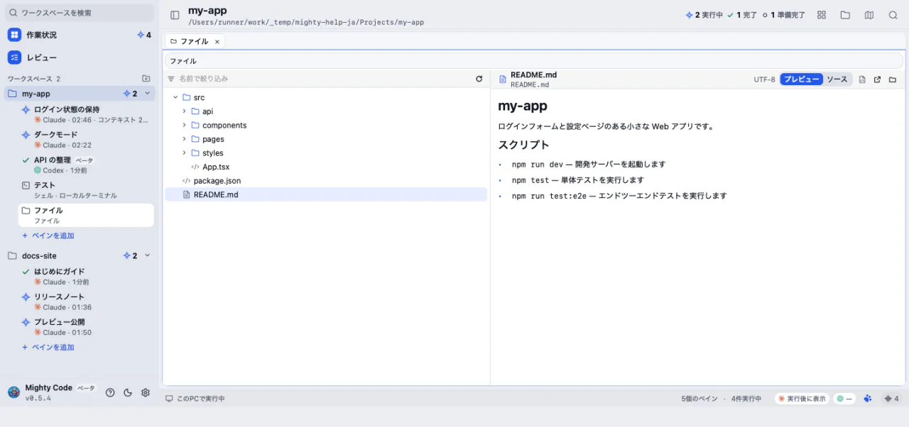
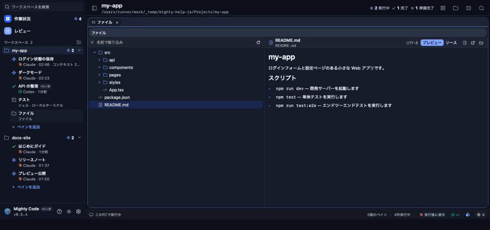
#エディタで開く
ファイルを直すときは、いつものエディタで開きます。行がわかっている場所では、その行に直接移動します。
- ファイルペイン: プレビューのヘッダーのエディタで開くボタン、一覧でファイルやフォルダを右クリックしたメニュー(エディタでフォルダを開く)。
- 会話とMightyフロー: ファイル名を⌘-クリック(Windows: Ctrl-クリック)すると、プレビューの代わりにエディタでその行を開きます。プレビューのヘッダーと結果のファイル一覧の各行にあるボタンも同じです。
- 変更の表示: リクエストの変更をレビューとworktreeペインの変更表示で行を右クリックするとその行を、ボタンは選んだファイルを開きます。
- worktreeペインのバーのメニューとレビュー待ちではworktreeのフォルダを開きます。
使うエディタは設定の外部エディタで選びます。自動では、VS Code、Cursor、Zed、JetBrains IDE(IntelliJ IDEA、WebStorm、PyCharmなど)、Sublime Textの順で最初に見つかったものを使います。ログインシェルのPATHにあるコマンド(code、cursor、zed、idea、subl)を先に探し、Macではアプリケーションフォルダのアプリに入っているコマンドを、Windowsでは通常のインストールフォルダにある実行ファイルを探します。システムの既定は行番号なしでファイルの既定アプリで開き、コードを実行するファイルは開きません。ワークスペースやworktreeの外のパスは開きません。
#Webリンク
返答の中のWebリンクや、エージェントが開くWebページは、既定のブラウザで開きます。
#ライブプレビュー
エージェントペインのヘッダーにある地球のアイコン(ライブプレビュー)を押すと、このワークスペースで待ち受けている開発サーバーを探して表示します。メインのチェックアウトと各 worktree ペインのポートブロック、そのフォルダで動いている実行アクションが見つけたアドレスを一度ずつ問い合わせ、Webサーバーだけを選びます。1つ選ぶと、そのサーバーが属するペインのプレビューで開きます。ペインが複数あるときは、すべて開くでペインごとに1つずつ開きます。
- プレビューは、このコンピューターにインストールされた Chrome、Edge、Chromium、Brave のいずれかを別に起動したウィンドウです。毎回新しいプロファイルを使い、普段使っているブラウザのログインやCookieは使いません。どれもなければ既定のブラウザで開き、要素の選択は使えません。
- プレビューが開いているペインには、入力欄の上に帯が表示されます。要素を選ぶを押してプレビューウィンドウで要素をクリックすると、その要素のタグ、一意のセレクター、主なスタイル、テキストの一部、React・Vue・Svelte・Angular のコンポーネントの手がかりが入力欄に添付され、アプリがそのペインに戻ります。「このボタンの間隔を詰めて」のように書き足して送ってください。
- 画面のスクリーンショットは見えている画面を、要素を選んだ後はその要素の範囲だけを撮って添付します。コンソールエラーと失敗したリクエストのボタンは、ページを最後に読み込んでからのエラーを一度に添付します(ないときは押せません)。
- プレビューを閉じるを押すか、プレビューウィンドウを閉じると終わります。最後のプレビューが閉じると、そのブラウザも終了し、プロファイルは削除されます。
プレビューが開くのは、localhost・127.0.0.1・::1 で、かつそのペインのポートブロックか実行アクションのアドレスの範囲内のアドレスだけです。ページがその外へ移動しようとすると止め、帯でお知らせします。ペインのプログラムがポートブロックの外で待ち受けているポートはメニューに表示されるだけで、開きません。MIGHTY_PORT でサーバーを起動すると開けます。プレビューのページはアプリとは別のプログラムで開くため、アプリに届きません。SSH とリモートのワークスペースにはまだプレビューがありません。
08設定
設定…(⌘,)か、サイドバー下部の設定ボタンで開きます。左側でタブを選び、閉じるボタンかEscで閉じます。最後に表示したタブが記憶されます。タブは一般、モデル、スタイル、リモート接続、Mighty Petと通知、コンポーネント、アプリ情報の順に並んでいます。
#一般
一般タブの表示で、アプリの見た目を変更します。
- テーマ: ダークまたはライト。サイドバー下部のボタンでも切り替えられます。
- 言語: アプリの言語。言語を変更するを参照してください。
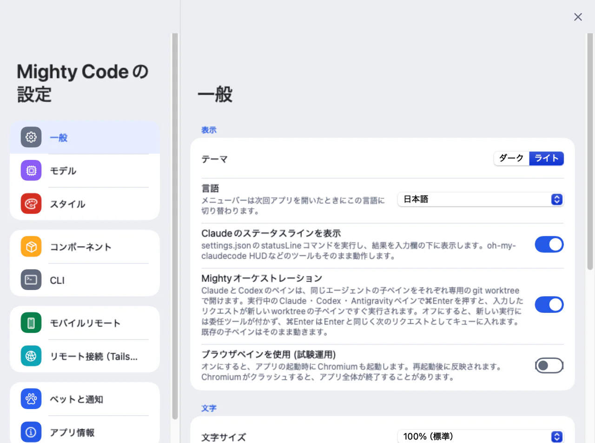
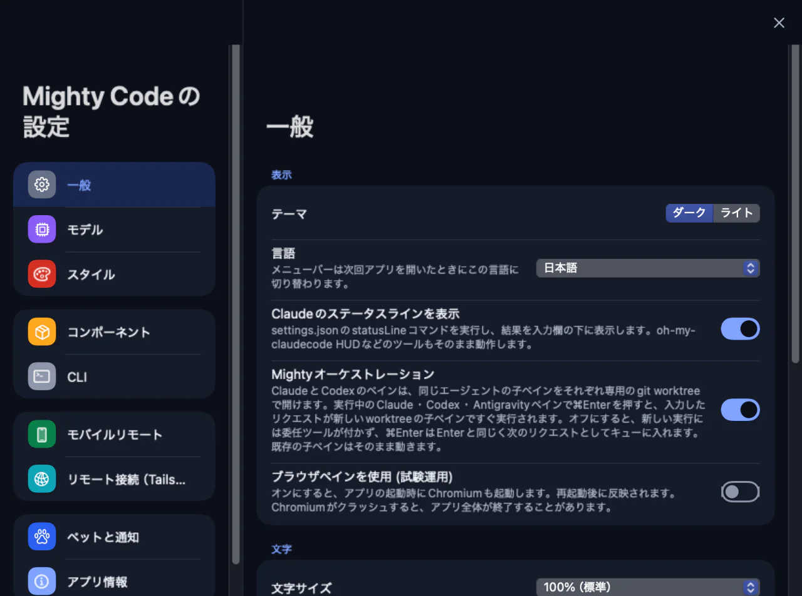
#文字サイズとフォント
同じタブの 文字 で、アプリ全体の文字を変更します。
- 文字サイズ：85% から 150% の間で選びます。会話、入力欄、サイドバー、設定、ターミナルが一緒に大きく・小さくなります。
- 画面のフォント：サイドバー、メニュー、ボタン、設定など、アプリ画面のフォントです。このコンピュータにインストールされているフォントから選び、システム標準 は OS の標準フォント（Mac では macOS のフォント、Windows では Segoe UI）です。
- 会話のフォント：エージェントの返答、自分が送ったメッセージ、入力欄、Mighty のカードとボードの本文のフォントです。画面のフォントと同じ にすると画面のフォントに合わせます。
- コードとターミナルのフォント：コードブロック、インラインコード、ツールの出力とコマンド行、ターミナルペインのフォントです。等幅フォントだけが表示されます。インストールされている等幅フォントのほか、JetBrains Mono、D2Coding、Fira Code、Cascadia Code・Cascadia Mono、Consolas などのコーディング用フォントもインストールされていれば表示されます。いちばん上の標準は、Mac ではコードに SF Mono、ターミナルに Menlo を、Windows では Cascadia Mono（ない場合は Consolas）を使います。Mac で選んだフォントが削除されると、ターミナルは Menlo に戻ります。開いているターミナルにもすぐに反映されます。パス、バージョン、件数などアプリ画面の等幅の文字は、システムの等幅フォントのままです。
- それぞれのフォントの下に、そのフォントで書いた 1 行のプレビューが表示されます。
- 標準に戻す ボタンで、サイズと 3 つのフォントを最初の状態に戻します。
Mac では表示メニューの 文字を大きく（⌘=）、文字を小さく（⌘-）、標準の文字サイズ（⌘0）で、Windows では Ctrl= / Ctrl- / Ctrl0 でもサイズを変更できます（Windows でターミナルペインにカーソルがあるときは、これらのキーはターミナルが使います）。変更はすぐに反映され、アプリを開き直してもそのままです。
#エージェントペイン
同じタブのエージェントペインには、エージェントペインに関する設定とキーの案内があります。
- Claudeのステータスラインを表示: Claudeの設定にあるステータスラインのコマンドを実行し、入力欄の下に表示します。
- Mightyオーケストレーション: 初期状態でオンです。Claudeペインが専用のworktreeで子ペインを開けるようになり、実行中のClaudeペインで⌘Enterを押すとリクエストが新しい子ペインで実行されます。Mightyオーケストレーションを参照してください。
- エージェントに進捗チェックリストを依頼: 初期状態でオンです。オンのあいだは、Gemini、Codex、opencode、Hermesに作業中の計画（チェックリスト）を残すよう短い指示を添え、進行状況パネルに実際の計画のステップが出ます。ペインのリクエストには入力した内容だけが残ります。オフのときや計画が届かないときは、エージェントがしていることがステップとして出ます（マイティ表示）。
- 外部エディタ: エディタで開くが起動するエディタです。自動(見つかった最初のもの)、このコンピュータで見つかったエディタ、システムの既定から選びます。設定を開くたびに探し直します(エディタで開く)。
- その下にキーの案内があります。Enterで送信し、ShiftEnterで改行します。タブをドラッグしてほかのタブとまとめたり、端へ移して分割したりします。コマンド実行ペインは、Macではログインシェル、WindowsではPowerShell(ない場合はcmd)を開く対話型ターミナルです。
- Issue トラッカー(MightyWork、GitHub、Linear、Jira、GitLab)の接続は設定ウィンドウではなく、ワークスペースごとにサイドバーのワークスペースメニューの Issue トラッカー連携設定… で行います。Issue から始めるを参照してください。
#バックグラウンド作業
同じタブのバックグラウンド作業でアプリを閉じても作業を続けるをオンにすると、アプリを終了したり自動更新で再起動したりしても、エージェントの実行とターミナルが止まりません。最初はオフです。
- オンにすると、アプリは同じ実行ファイルをウィンドウのないバックグラウンドのデーモンとして起動します(
MightyCode --daemon)。データフォルダーごとに 1 つだけ実行され、その後に始めたエージェントの実行(Claude、Codex、Antigravity、pi、opencode、Hermes)とターミナルペインのシェルはデーモンが受け持ちます。画面、履歴、承認カードはこれまでどおりアプリが描きます。 - 実行中の作業があるときにアプリを終了すると、続けたまま終了とすべて停止して終了から選びます。自動更新での再起動では常に続けます。
- アプリを再び開くと続きから始まります。エージェントペインはアプリを閉じていた間の出力から続けて表示し、待っていた承認・質問カード(pi のダイアログ、opencode・Hermes の質問も含む)も再び表示され、そのペインで答えられます。委任された子ペインも続き、終わると報告と worktree の流れがいつもどおり親に届きます。ターミナルペインは開いたときにシェルと画面の履歴(直近 2MB)が戻ります。デーモンは実行ごとに出力の直近 8MB を保持します。
- 状態の行には、デーモンの PID、実行中の作業の数、保持中の出力のサイズが表示されます。デーモンを停止ボタンはデーモンと中の作業をすべて終了します。実行中の作業も接続中のアプリもなければ、デーモンは 10 分後に自動で終了します。
続くのはすべてのエージェントの実行とターミナルペインです。シェルコマンドの実行とサンドボックスで動く実行は、アプリを閉じると止まります。続きから再接続した実行も Mighty との連携(ターミナル・委任ツール、アクティビティ表示)をそのまま使えます。アプリを閉じる直前に始まったツールの行や回答は終わりの部分だけが表示されることがあり、アプリを閉じる前に Antigravity が拒否された操作はターン後の権限カードに出ません。待っていた要求が大きすぎて次のアプリに引き継げない場合は、アプリを閉じるときに拒否で答え、ペインにそう表示します。デーモンが異常終了すると中の作業も終わり、ペインは停止になります。更新でデーモンとアプリのバージョンが異なる場合、アプリは接続せず、以前のデーモンの作業を停止するか確認します。デーモンに接続できるのはこのコンピューターの同じユーザーだけです(Mac は権限 0600 のソケット、Windows は現在のユーザーだけが開ける名前付きパイプ、データフォルダーの daemon/token のトークン)。
#ウィンドウなしで実行 (サーバー)
ウィンドウを開かずに Mighty Code 全体(スマートフォン連携、リモートミラー、mighty コマンド、スケジュールとトリガー、バックグラウンドのデーモンとの接続)を実行できます。ログインしたままの Mac や PC をスマートフォンやスクリプトから使うときに向いています。
mighty server startはアプリをウィンドウなしで起動し(MightyCode --server、デーモンの--daemon --headlessとは別です)、応答するまで待ってから状態を JSON で表示します。Mac では Dock アイコンとメニューバーが表示されません。mighty status、mighty agent new、send、waitなどのコマンドはそのまま使えます。mighty server statusはウィンドウの有無、バージョン、PID、稼働時間を表示します。- ウィンドウが必要なときはアプリをもう一度開きます(Mac は Dock や Finder から、Windows はアプリをもう一度起動)。同じデータフォルダーのアプリが 2 つ動くことはなく、実行中のサーバーがウィンドウを開きます。
mighty server showも同じです。このウィンドウを閉じてもサーバーはウィンドウなしで実行を続け、⌘Q を押すとウインドウだけ閉じるとサーバーを停止から選びます。 mighty server stopは通常どおりアプリを終了します。アプリを閉じても作業を続けるがオンならデーモンの作業は続け、--stop-allを付けると一緒に停止します。Mac の SIGTERM と Windows のコンソールを閉じる操作も同じ終了です。- バックグラウンド作業のログイン時にウインドウなしで起動をオンにすると、ログイン時にサーバーとして起動します(Mac は
~/Library/LaunchAgentsの LaunchAgent、Windows は現在のユーザーの Run レジストリキー)。最初はオフで、次回のログインから有効になります。
ターミナルペインのシェルは、ウィンドウがそのペインを初めて表示したときに起動します(ウィンドウ付きで起動したときと同じです)。ウィンドウを閉じても実行中のシェルは動き続け、mighty pane read で読めます。スマートフォンの接続承認のように確認が必要なことが起きると、ウィンドウが開きます。
#モデル
モデルタブのフェーズ別モデルで、作業の段階ごとに使うモデルをこのコンピュータ全体で設定します。段階は計画、実行、レビュー、サブエージェントです。
- 既定値のままにすると、CLIが決めます。
- ペインごとに選択を選ぶと、ペインのモデルチップで選んだモデルを使います。
- 一覧にないモデル名は、登録済みの名前で追加します。そのモデルが思考レベルに対応している場合は、思考レベルに対応をオンにします。
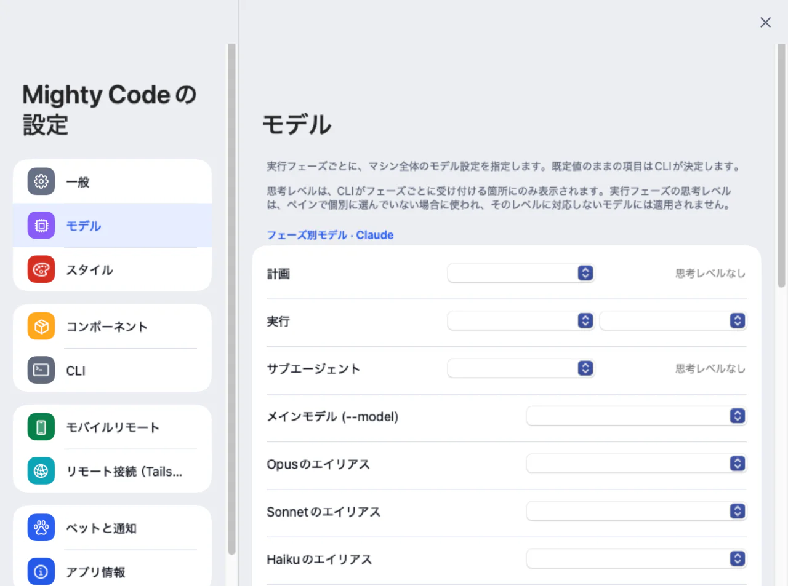
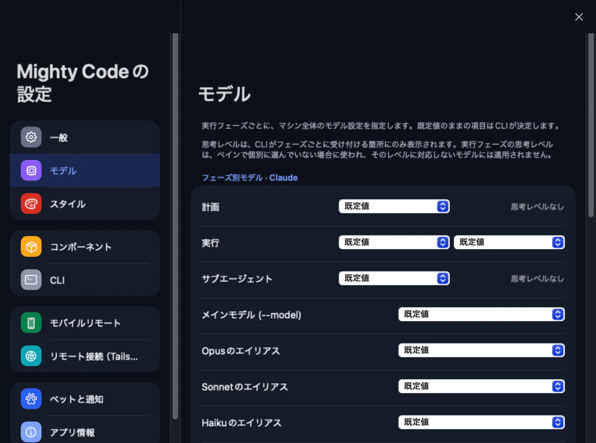
#スタイル
スタイルタブでスタイルの一覧を管理します。ファイルからスタイルを登録し、内容を確認して許可したりブロックしたりします。一覧が合わないときは更新ボタンをクリックします。スタイルのID、ハッシュ、件数は、名前にポインタを合わせると表示されます。詳しくはスタイルにあります。
#リモート接続
リモート接続タブでは、別のコンピュータ(Mac・Windows)やスマートフォンからこのコンピュータのワークスペースを使えるようにしたり、別のコンピュータのワークスペースを開いたりします。いちばん上の案内の下にタブが3つあります。
- このコンピュータを共有: 上部の状態行の横にある共有を開始 / 共有を停止ボタンで共有をオン・オフします。共有するワークスペースを選び、下の接続方法でペアリングとTailscaleの行を確認します。このコンピュータを共有を参照してください。
- 別のコンピュータに接続: ペアリングリンクかTailscaleのアドレスで別のコンピュータに接続し、下の接続したコンピュータ一覧で接続を管理します。別のコンピュータに接続を参照してください。
- スマートフォン: スマートフォンを接続します。下のスマートフォンを参照してください。
Windows このコンピュータを共有タブとスマートフォンタブの下にWindowsファイアウォールがあります。Windowsファイアウォールを参照してください。
#スマートフォン
リモート接続 › スマートフォンタブで、スマートフォンからの接続を許可し、QRコードでスマートフォンを接続し、接続済みのデバイスを管理します。リレーを別に用意する必要はありません。モバイルリモートを参照してください。たたまれた詳細設定には、自分で立てたリレーを使うときのリレーのアドレス欄(適用ボタン、下に既定のアドレス)と旧バージョンのアプリを許可 (デバイストークンなし)スイッチがあります。どちらかを既定値から変えていれば、最初から開いています。
画面の表示と操作は現在一時停止しているため、設定にその項目はありません(リモート画面)。
#Mighty Petと通知
Mighty Petと通知タブで、Mighty Petと完了通知を設定します。
- Mighty Petを表示: 画面上を動き回るアライグマのMighty Petを表示します。Mighty Petはドラッグして移動でき、クリックすると吹き出しが開閉します。
- Mighty Petの吹き出しにリクエストと現在のタスクを表示: 吹き出しに、リクエスト、現在の作業、経過時間を表示します。吹き出しから許可(今回のみ許可 / 拒否)に答えることもできます。承認・質問・プランの吹き出しの記号ボタンは、リクエスト全体を見たり回答を自分で書いたりできるよう、そのペインを開きます。
- 吹き出しの上には、そのペインの最新リクエストの進行状況カードが付きます。ペインの進行パネルと同じ内容で、リクエスト番号、終わったステップ数、状態、すべてのステップとバックグラウンド作業が、それぞれの経過時間とともに表示されます。8行を超えるとカードの中でスクロールでき、最初はいまのステップが見える位置で開きます。カードの見出しをクリックすると見出しだけに折りたたまれ、もう一度クリックすると開きます。折りたたんだ状態は次にアプリを開いても保たれます。ステップの行をクリックすると、そのペインが開きます。ステップもバックグラウンド作業もないリクエスト、吹き出しが承認・質問・プランを表示している間、吹き出しが閉じているときはカードは表示されません。
- ペット: ペットを選びます。Codexのペットを読み込む…でほかのペットを追加し、再読み込みでペットの一覧を読み直し、位置と吹き出しのサイズをリセットでMighty Petの位置と吹き出しのサイズを最初の状態に戻します。
- Mighty Petのアニメーションを減らす: 動きを減らします。
- タスク完了時にMacで通知(Windowsではタスク完了時にWindowsで通知): リクエストが正常に終わると、Macの通知を送ります。通知をクリックすると、そのペインが開きます。通知にはリクエストや結果の内容は含まれません。
- ターミナル通知を受け取る: ターミナルペインや CLI が送った通知とベルを、そのペインに表示します。OS の通知は、アプリが背面にあるときか別のペインを見ているときだけ送ります。最初はオンです(通知とベル)。
- その下にOSの通知の許可状態が表示され、通知の設定ボタンでシステムの通知設定を開きます。

#自動化とコマンドライン
Mighty Petと通知 タブの 自動化 ボックスで、エージェントペインの状態が変わったときに知らせる先を決めます。依頼の文面、ファイルの内容、トークンはどこにも送りません。
- 知らせる状態: 開始、承認・質問待ち、完了、失敗、停止 から選びます。最初は承認・質問待ち、完了、失敗がオンです。Webhook と状態コマンドの両方がこれに従います。
- Webhook: Slack、Discord、ほかの HTTPS アドレスを五つまで追加します。アドレスはシステムのキーチェーン（Windows は資格情報マネージャー）に保存し、画面には一部だけ表示します。送るのはタイトル、状態、ワークスペースとペインの名前だけです。テスト ボタンでテストメッセージを送ります。同じペインの同じ状態は 5 秒に一度、アドレスごとに 1 分に六回まで送り、サーバーエラーのときはもう一度送ります。
- 状態コマンド: ペインが選んだ状態になると、そのペインのフォルダーでこのコマンドを実行します。状態は引数ではなく環境変数で渡します:
MIGHTY_EVENT、MIGHTY_STATE、MIGHTY_PREVIOUS_STATE、MIGHTY_REASON、MIGHTY_PANE_ID、MIGHTY_PANE_TITLE、MIGHTY_AGENT、MIGHTY_WORKSPACE_ID、MIGHTY_WORKSPACE_NAME、MIGHTY_WORKSPACE_PATH。20 秒で止めます。 - コマンドライン操作: 実行中のアプリを
mightyコマンドで操作できるかを表示します。新しいトークン ボタンはトークンを替え、開いていた接続を切ります。
リポジトリごとに状態コマンドを置くには .mighty.local.yaml に書きます。ほかの設定と同じく承認した後にだけ実行され、共有の .mighty.yaml には書けません。
hooks:
command: ./scripts/notify.sh
on: [blocked, done, failed] # started, blocked, done, failed, stopped
timeoutSeconds: 20 # 1-300#mighty コマンド
Mac では ワークスペース メニューの シェルコマンド「mighty」をインストール で ~/.local/bin/mighty を入れます。mighty、mighty フォルダー、mighty "依頼" はこれまでどおりフォルダーを開きます。コマンドと同じ名前のフォルダーは mighty ./status のように開きます。下のコマンドは実行中のアプリに接続し、JSON で答えます。0.6.0 より前に入れた場合は一度入れ直してください。
Windows ではインストールフォルダーの bin\mighty.exe が mighty コマンドです。セットアップの「mighty コマンドを PATH に追加」(既定でオン)がそのフォルダーをユーザーの PATH に入れます。アプリを更新だけで受け取った場合は、Mighty Petと通知 タブの コマンドライン操作 で PATH に追加 を押してください。その後、新しく開いた cmd、PowerShell、Windows Terminal で Mac と同じコマンドを使えます。引数、パイプ(| jq、> out.json、- で標準入力)、終了コード、Ctrl+C はそのまま渡ります。フォルダーを開く(mighty フォルダー)のは今は Mac だけです。MightyCode.exe --cli status のようにアプリを直接呼んでも出力はコンソールに出ますが、シェルが待たないためプロンプトの後に出ることがあるので、mighty を使ってください。
mighty status # ワークスペース、ペイン、状態、注意表示、worktree、ポート範囲
mighty workspace list
mighty pane list --workspace <id>
mighty pane read <pane> --lines 100
mighty agent new --workspace <id> --agent codex --worktree
mighty agent send <pane> "テストを直して"
mighty agent wait <pane> --until done --timeout 600
mighty pane wait-output <pane> --regex "passed|failed" --timeout 300
mighty events --type pane.state
mighty server start # ウィンドウなしで起動 (status, show, stop [--stop-all])- ペイン id はアプリが使うものそのままで、変わりません。状態は
idle、running、blocked（承認・質問待ち）、done、failed、stoppedです。 agent sendは入力欄から送るのと同じです。実行中なら待ち行列に入ります。-を渡すと標準入力から読みます。agent waitとpane wait-outputは状態や出力が変わったときだけ動きます。pane wait-outputは待ち始めた後の新しい行を一行ずつ見ます。pane readと出力では、秘密情報に見える行は隠します。eventsは一行に一つのイベントを書きます（pane.state、attention、費用つきのrun.completed）。- 終了コードは成功 0、エラー 1、タイムアウト 2 です。
- 接続できるのはこのコンピュータの同じユーザーだけです（Mac は権限 0600 のソケット、Windows は現在のユーザーだけが開ける名前付きパイプ）。リクエストごとにデータフォルダーの
control/tokenのトークンが要ります。--profileで起動したアプリにはmighty --profile <フォルダー> statusで接続します。 - Windows でアプリを管理者として実行している場合、
mightyも管理者として開いたターミナルからのみ接続できます。通常のターミナルは理由を表示して終了コード 1 で終わります(そうしないと、自分のアカウントのどのプログラムでも管理者としてエージェントを動かせてしまいます)。管理者のターミナルからは通常のアプリにも接続できます。ほかのユーザーアカウントは管理者でも接続できません。
#スケジュールとトリガー
Mighty Petと通知 タブの スケジュールとトリガー ボックスで、決めた時刻やイベントでエージェントの作業を始めます。ワークスペースを選ぶと、そのスケジュールとトリガー、次回の実行時刻、前回の結果が表示されます。上部には今日の使用額、1日の予算、今日の自動化のまとめがあります。
- スケジュール: 5 項目の cron (
0 9 * * 1-5) か RRULE の一部 (FREQ=DAILY|WEEKLY|HOURLY、BYHOUR、BYMINUTE、BYDAY) で決めます。このコンピューターのタイムゾーンに従い、夏時間で飛ばされた時刻は直後に 1 回、2 回来る時刻は最初の 1 回だけ実行します。 - トリガー: GitHub (PR の作成、レビュー依頼、CI 失敗)、Linear (イシューが選んだ状態になる)、Webhook、常時チェック (シェルコマンドを数分ごとに実行し、出力が変わったときだけエージェントを起こす。1 日の上限まで)。GitHub は
ghでログインしたアカウントで 5 分に 1 回まで確認し、変化がないときや接続が切れたときはもっと間隔を空けます。Linear はワークスペースに接続した Linear を使います。 - 実行方法: 新しいペイン (必要ならワークツリー) にプロンプトを送るか、既存のペインを起こす (heartbeat) をオンにすると同じ名前のペインに同じ会話として送ります。エージェントとモデルを選べます。
- 予算: 今日の使用額にこの実行の見込み費用を足して 1 日の予算を超えるときは、実行せず「スキップ」として記録します。
- 通知: 自動で始めた作業が承認や回答を待つと、スマートフォンと OS の通知ですぐに知らせます。それ以外は実行履歴と今日のまとめに集めます。すべての実行は
automation.fired、automation.skipped、automation.blocked、automation.finishedイベントとしてmighty eventsでも見られ、知らせる状態 で 自動化の実行結果 をオンにすると Webhook と状態コマンドも従います。 - 実行履歴: 実行ごとに時刻、状態、費用 (使用量台帳による)、結果リンク (ペインが開いた PR)、エラーが残ります。再実行 ボタンで再実行し、続ける ボタンでそのペインを開きます。
アプリが閉じているとき: アプリが閉じていてもスケジュールを実行 をオンにすると (既定はオフ)、次のスケジュール時刻にコンピューターが Mighty Code をウィンドウなしで起動します (Mac は LaunchAgent、Windows はタスク スケジューラ。管理者権限なしで自分のアカウントで)。起動したアプリは逃したスケジュールを処理し、実行と承認・質問の待ちがすべて終わってから 5 分間何もなければ、次のスケジュールを登録し直して自分で終了します。コンピューターがスリープ中や電源オフだった場合は、復帰後に起動します。アプリがすでに開いていれば、開いているアプリが実行します。ボックスで登録の有無、次の起動時刻、前回の起動の結果を確認でき、今すぐ再登録 ボタンで登録し直せます。ログイン時にウインドウなしで起動 をオンにしていれば、そのサーバーが実行を続けます。
トリガー (GitHub、Linear、常時チェック、Webhook) はアプリの実行中だけ動きます。ウィンドウなしで起動したサーバーも実行中に含みます。コンピューターが起こすのはスケジュールだけなので、アプリを閉じている間もトリガーを使うには ログイン時にウインドウなしで起動 をオンにしてください。アプリが閉じていてもスケジュールを実行 をオフにしたままアプリを閉じるとスケジュールも止まり (バックグラウンド作業 をオンにしても実行中の作業が続くだけ)、逃したスケジュールは次にアプリを開いたとき最新の 1 回だけ実行します。逃した実行をスキップ をオンにすると実行せず「スキップ」として記録します。
Webhook の受信: Webhook リスナーをオン をオンにすると、このコンピューターの 127.0.0.1:<ポート> でだけリクエストを受けます (既定はオフ)。Webhook トリガーごとにアドレス (http://127.0.0.1:<ポート>/hooks/<id>) とシークレットがあり、シークレットはシステムのキーチェーンに保存されます。リクエスト本文をシークレットで HMAC-SHA256 署名し、X-Mighty-Signature-256: sha256=<hex> (GitHub の X-Hub-Signature-256 も可) ヘッダーで送ってください。256KB を超える本文、署名が違うリクエスト、同じ配信 ID (X-Mighty-Delivery) は捨てます。外部 (GitHub や他のサービス) から受けるには、ngrok や Cloudflare Tunnel などのトンネルを自分で前に置いてください。アプリがトンネルを開くことはありません。
リポジトリで共有するスケジュールとトリガーは .mighty.yaml に書きます。他の設定と同じく 承認した後だけ実行され、ボックスでは読み取り専用で表示され、承認前は 承認 ボタンが出ます。
schedules:
deps-check:
cron: "0 9 * * 1-5" # または rrule: FREQ=DAILY;BYHOUR=9
prompt: 依存関係を点検し、必要なら PR を開いてください。
agent: claude # codex, gemini, pi, opencode, hermes
model: sonnet
worktree: true
catchUp: once # once (既定) または skip
night-watch:
rrule: FREQ=DAILY;BYHOUR=22
mode: heartbeat
pane: 夜間チェック
prompt: 続けてください。
triggers:
fix-ci:
github: [ci_failed] # pr_opened, review_requested, ci_failed
prompt: CI の失敗を直してください。
worktree: true
ready-issues:
linear: [Ready]
prompt: このイシューを始めてください。
deploy:
webhook: true
prompt: デプロイ結果を確認してください。
flaky-tests:
standing: npm test 2>&1 | tail -5
everyMinutes: 30 # 5-1440
dailyCap: 3 # 1-50
prompt: テスト結果が変わりました。原因を見つけて直してください。#コンポーネント
コンポーネントタブでは、アプリに必要なものが準備できているかを確認し、エージェントCLIのインストール、サインイン、アップデートをまとめて管理します。このコンピュータのOS向けの項目だけが表示されます。
一番上の行には、表示の切り替えとボタンが2つあります。
- すべて / 要対応: 要対応を選ぶと、手を入れる必要がある行だけが表示されます。未インストール、未サインイン、アップデートあり、失敗、対応が必要な項目です。横の数字がその数です。
- 更新(↻、更新): PATHを読み直し、すべての項目を確認し直します。
- すべてアップデート: インストール済みのエージェントCLIを今すぐすべてアップデートします。CLIごとに、最初にインストールした方法(npm、Homebrewなど)をそのまま使います。
一覧は3つのグループです。エージェント CLI(Claude、Codex、Antigravity、pi、opencode、Hermes)、ツール(Git(MacではXcodeコマンドラインツール)、Homebrew(Mac)、Node.js、Bun(Mac)、uv、Tailscale、gh、glab)、Claude プラグイン(ouroboros、omc、gstack(Mac))です。項目ごとに1行で、行には開閉の印(▸)、名前、バージョン、エージェントCLIならサインインしているアカウントがあります。右側には状態と、今いちばん必要なボタンが1つあります。
- 状態: インストール済み、準備完了(エージェントCLIがインストールされ、サインインも済み)、アップデートあり、未サインイン、未インストール、対応が必要、インストール中、失敗。
- ボタン: ないときはインストール(ダウンロードページからしかインストールできない項目はダウンロードページを開く)、サインインしていないときはサインイン、古いときはアップデート。問題がなければボタンはありません。
行をクリックすると、その場で開きます(▾)。開いた行には詳しい内容(必要なバージョン、前回のアップデートの結果、アカウントの情報、対応が必要な理由、その項目の用途)と、その項目のボタンがすべてあります。エージェントCLIならアカウントを変更、サインアウト、状態を更新などです。もう一度クリックすると閉じます。開いた行は、アプリを終了するまで覚えています。
一覧の下の自動アップデートボックスには、スイッチが3つと前回の実行時刻があります。スイッチにポインタを合わせると説明が表示されます。
- CLI: アプリの起動時と、6時間ごとにエージェントCLIのアップデートを確認します。
- プラグイン: ClaudeとCodexのプラグインも一緒にアップデートします。
- 自動で再サインイン: サインインが切れたら再サインインし、失敗したリクエストを再送信します。
インストールをクリックすると、その項目と、その項目に必要で足りない前提ツールだけをインストールします。実行するコマンドは、先に1つの確認画面ですべて表示されます。
- macOS アプリ内のターミナルペインで実行します。ローカルのワークスペースが開いていないときはターミナル(Terminal.app)で実行します。
- Windows 別のPowerShellウィンドウで実行します。
インストールできたかどうかは、終わったあとに確認し直して判断します。初回起動時に開く必要なツールウィンドウは、足りないものを選んで選択項目をインストールをクリックするチェックリストです。
同じタブの一番下には、マイツールキットボックスがあります。よく使うツールを自分で集めておく一覧で、最初は空です。追加でツールを追加し、項目ごとに承認と削除のボタンがあります。承認したツールだけをインストールでき、インストールの前に実行するコマンドをすべて表示して、インストールの確認を求めます。一覧を書き出ししたり読み込みしたりできます。
#サインイン
エージェントCLIごとに、その行でサインインします。サインインしていないCLIは行にサインインボタンがそのまま表示され、そのほかのアカウントのボタンは行を開くと表示されます。
- サインインをクリックします。Claudeでは、ClaudeのサブスクリプションでサインインとAnthropic Console (API課金)でサインインから選びます。
- CLIのサインインがターミナルで始まります。ブラウザで承認します。
- macOS アプリ内にターミナルペインが開きます。ローカルのワークスペースに開くため、ワークスペースが1つ以上開いている必要があります。
- Windows 別のコンソールウィンドウが開きます。ワークスペースがなくてもかまいません。
- サインインが完了すると行の状態が変わります。変わらないときは、その行を開いて状態を更新をクリックします。変更したアカウントは次のリクエストから使われます。
アカウントを変更するには行を開いてアカウントを変更、サインアウトするにはサインアウトをクリックします。自動アップデートボックスの自動で再サインインをオンにすると、サインインが切れたときに自動で再サインインし、失敗したリクエストを再送信します。
Claudeの行を開くと、モデルをリセットして再読み込みとBedrockの設定のボタンもあります。Bedrockの設定はサインインと同じ方法で、ターミナルでClaude CLIのAWS Bedrock設定ウィザードを開きます。終わったら状態を更新してください。Windows WindowsにはClaude Bedrockの設定をリセットボタンがもう1つあり、Claudeのユーザー設定をバックアップしたうえでBedrockキーとBedrockのモデル指定を削除します。
#アップデート
エージェントCLIのアップデートは、アプリのアップデートとは別に行います。
- すべてアップデートボタン: インストール済みのエージェントCLIを今すぐすべてアップデートします。古いCLIの行のアップデートボタンも、CLIのアップデートを実行します。
- 自動アップデートボックスのCLI: アプリの起動時と、6時間ごとに確認します。
- プラグイン: ClaudeとCodexのプラグインも一緒にアップデートします。
CLIを最初にインストールした方法(npm、Homebrewなど)をそのまま使います。CLIごとの前回のアップデートの結果はそのCLIの行を開くと表示され、プラグインのアップデートの結果はClaude プラグイングループの下に表示されます。
#アプリ情報
アプリ情報タブでは、アプリをアップデートし、データの保存場所を確認します。
- アプリのアップデート: 現在のバージョン、自動アップデートのスイッチ、状態とボタン、リリースノートがあります。アップデートを参照してください。たたまれた詳細設定にはアップデートのアドレスの欄と署名の説明があり、アドレスを入力してあれば最初から開いています。
- アプリ情報: ヘルプを開くボタンと状態の保存場所があります。状態の保存場所はアプリの設定と履歴があるフォルダで、MacではFinderで表示、Windowsではエクスプローラーで表示ボタンで開きます。
#診断パッケージ
バグを報告するときは、診断ボックスの診断パッケージを書き出す…ボタンで診断パッケージを作成して添付してください。保存先を選ぶと zip ファイルが 1 つ作られ、完了するとファイル名と Finder（Windows ではエクスプローラー）で表示するボタンが現れます。
- 含まれるもの: アプリのログ（アプリのログとその前のファイル、バックグラウンドデーモン、起動段階、パフォーマンス記録のそれぞれ最後の 2 MB）、アプリのバージョン、インストール済み CLI のバージョン、OS とアーキテクチャ、設定の概要（オンの機能とワークスペース・ペインの数）、そして何が含まれたかを記した
manifest.json。 - 取り除くもの: API キー、トークン、パスワード、ペアリングキー、Authorization ヘッダー、アドレス内のユーザー名とパスワード、メールアドレス、パス内のユーザー名（ホームフォルダーは
~）。manifest.jsonにファイルごとに取り除いた値の数が記されます。 - 含めないもの: 会話、リクエストと返答、ファイルの内容、ワークスペースとペインの名前、パス、環境変数。
- アプリはパッケージをどこにも送信しません。送る前に zip を開いて確認できます。
09モバイルリモート
スマートフォンアプリを使うと、外出先からでもMacやWindows PCのMighty Codeを確認して操作できます。作業の状態を確認し、リクエストを送信し、許可や質問に答えます。
コンピュータとスマートフォンはリレーサーバー経由で接続されます。標準のリレーがアプリに組み込まれているので、別に用意するものはありません。内容はエンドツーエンドで暗号化されるため、リレーは内容を見ることができません。ルーターのポートを開けたり、VPNを使ったりする必要はありません。Tailscale を使っていれば、リレーを通さず直接接続することもできます。
#スマートフォンアプリを入手する
ダウンロードページからAndroidアプリ(APK)をダウンロードしてインストールします。
#接続する
コンピュータで:
- 設定… → リモート接続 → スマートフォンタブを開きます。
- スマートフォンからこのMacへの接続を許可をオンにします。WindowsではスマートフォンからこのPCへの接続を許可です。横に接続状態が表示され、リレーへの接続中のまま止まっているときは再接続ボタンをクリックします。
- スマートフォンを接続にQRコードと3つの手順の案内が表示されます。
スマートフォンで:
- スマートフォンアプリを開き、ホストタブの+ ホストを追加をタップします。初めて開いたときは、先に接続の案内が表示されます。
- QRをスキャンでコンピュータのQRコードを読み取ります。カメラを使えない場合は、コンピュータでペアリングリンクをコピーボタンをクリックしてリンクを送り、リンクを貼り付けに入力します。リンクにはキーが含まれるため秘密としてコピーされ、1分後にクリップボードから消去されます。
- 接続をタップすると、コンピュータに「新しいデバイスの接続要求」ウインドウと通知が表示され、スマートフォンにはコンピュータで許可するよう案内が表示されます。コンピュータで許可をクリックすると接続され、接続済みのデバイスにそのスマートフォンが表示されます。60秒以内に許可しないか拒否を押すと接続されません（既定のボタンは拒否です）。自分でペアリングしているスマートフォンでなければ許可しないでください。
QRコードの横にはホストIDとペアリングキーがあります。キーは表示ボタンをクリックすると見えます。QRコード、リンク、キーは一度だけ使えるペアリングコードです。画面に表示されている間は使え、画面を閉じると10分後に期限切れになり、デバイスが1台接続されるか拒否されると新しいコードに変わります。接続済みのデバイスはデバイストークンで接続するため、改めて許可を求められません。
接続方法には接続方法が2つあります。
- リレー（既定）: 標準の方法です。特にすることはありません。
- Tailscale で直接接続: ポートを決めて適用し、その下に状態が表示されます。Tailscale で直接接続するを参照してください。
接続したスマートフォンとペアリングしたコンピュータは接続済みのデバイスに1行ずつ表示され、コンピュータはコンピュータのアイコンで区別されます（アプリを再起動しても保たれます）。この一覧は、デバイスが1つでもあればスマートフォン接続のスイッチがオフでも表示されます。デバイスを使わなくなったら、その行のペアリング解除ボタンをクリックします。そのデバイスだけが解除され、ほかのスマートフォンとコンピュータは接続されたままです。このとき画面のペアリングコードも新しくなります。接続済みのスマートフォンをQRコードでもう一度接続すると新しいデバイスと同じく許可を求められ（同じデバイスを置き換えると表示されます）、許可すると以前の接続は使えなくなります。
キーを再生成をクリックすると、接続済みのスマートフォンとペアリングしたコンピュータがすべて解除され、このコンピュータのリレーIDと暗号キーも作り直されるため、すべてのデバイスを新しいQRコードかリンクで接続し直す必要があります。誰かが許可なく接続したときや、デバイスをなくしたときに使ってください。
#スマートフォンに表示するワークスペース
スマートフォン タブの スマートフォンに表示するワークスペース で、ペアリングしたスマートフォンにこのコンピュータのどのワークスペースを表示するかを選びます。
- すべてのローカルワークスペース: 既定値です。このコンピュータのワークスペースをすべて表示し、そのペイン、ファイル (
.envのようなファイルも)、実行を開けます。 - 共有中のワークスペースのみ: このコンピュータを共有 で今共有しているワークスペースだけが表示されます。共有をオフにするとワークスペースは一つも表示されず、ほかのワークスペースのペイン・ファイル・作業マップを開いたりリクエストを送ったりできず、そのペインの通知も届きません。
変更はスマートフォンの次のリクエストから適用され、接続は切れません。
#Tailscale で直接接続する
Mac とスマートフォンが同じ Tailscale ネットワークにあれば、スマートフォンはリレーを通さず Mac に直接接続します。ペアリングも暗号化もそのままで、Mac に直接届かないときは自動でリレーを使います。
- Mac とスマートフォンで Tailscale をオンにし、同じアカウントでログインします。
- コンピュータの スマートフォン タブで Tailscale で直接接続 がオンになっていることを確かめます(初期設定でオンです)。その下の行に Tailscale のアドレスが出ていれば準備完了です。Tailscale が見つかりません と出ていれば、Mac の Tailscale がオフです。
- すでにペアリングしたスマートフォンはペアリングし直す必要はありません。次に接続したときに Mac がアドレスを伝えます。
スマートフォンの ホスト タブで、Mac のカードに Tailscale 直接 または リレー と表示されます。
Windows PC でも同じです。ただし接続が遮断されないよう、Windows ファイアウォールの規則が 1 つ必要です。スマートフォン タブの下の Windowsファイアウォール で ファイアウォールルールを追加 ボタンを押し、Windows の管理者の確認を許可してください。この規則は Tailscale のアドレスからこのアプリへの接続だけを許可します。規則があるときは ファイアウォールルールを更新 ボタンでいま使っているポートに合わせて直し、ファイアウォールルールを削除 ボタンで削除します。直接接続またはスマートフォンからの接続をオフにすると規則も一緒に削除され（このコンピュータがワークスペースを共有している間は、そのポートに必要なので残ります）、このときも管理者の確認を求められます。これはスマートフォンの直接接続のポートとワークスペース共有のポートを一緒に開く 1 つの規則なので、このコンピュータを共有 タブで変更しても同じ規則が変わります（Windows ファイアウォール）。
#スマートフォンでできること
スマートフォンアプリには3つのタブがあります。
| タブ | 内容 |
|---|---|
| 概要 | 作業状況: ペアリングしたすべてのコンピューターの実行中、対応待ち、完了の件数を合計して表示し、その下にコンピューターごとのワークスペースとセッションを順に表示します。セッションを開いて会話を確認し、リクエストを送信します。 |
| 通知 | 回答が必要な許可・質問と、終わったタスク |
| ホスト | 接続したコンピュータ(Mac・Windows)と接続状態 |
セッション内では、リクエストの送信と停止、モデル・権限・思考レベルの変更、スラッシュコマンド、ファイルの添付、ワークスペースのファイルの閲覧(読み取り専用)ができます。
タスクが実行中のセッションでは、送信ボタンがキューに追加に変わり、送った内容はそのペインの次のリクエストとしてキューに入ります。実行中のタスクに割り込むことはありません。
コンピューターのアプリが十分に新しいと、キューのリクエストにすぐ実行ボタンが表示されます。押すと、コンピューターの判断で、コンピューター上の新しいworktreeの子ペインか、このペインでリクエストを実行します。実行できないときのボタンはグレーで、タップすると理由が出ます。スマートフォンからエージェントは選べません。
コンピューターのアプリがキューの編集に対応していると、リクエストごとに編集と↑・↓ボタンも表示されます。編集でその場で文を編集し、保存で保存します（文を空にすると保存されません）。↑・↓で順番を変えると、コンピューターは新しい順番で実行します。コンピューターがこのペインに保留した行は、編集・移動・削除できません。
フロー表示では、終わったリクエストはリクエストと最終結果がすぐに表示されます。途中の経過は1行にまとめられ、タップすると開きます。実行中のリクエストはすべてのステップを表示します。
結果がワークスペースのファイルを挙げていると、最終結果の下に結果に含まれるファイルの一覧が付きます。デスクトップアプリで結果の横に出る一覧と同じファイルで、名前の下にそのファイルのあるフォルダが薄く表示されます。ファイルが多いと最初の5件だけが表示され、残りは下のボタンで開きます。ファイルをタップすると、ワークスペースのファイル表示でそのファイルが開きます。この一覧は成功した結果にだけ付き、別のコンピュータのワークスペースや、この一覧を送らない古いデスクトップアプリでは表示されません。 そのファイルがこのリクエストで変更されたソースやMarkdownなら、上に変更点 | 全体を表示のチップが付き、変更点から表示されます。変更された行だけが古い行番号と新しい行番号とともに表示され、追加した行は緑、削除した行は赤の背景です。この表示は対応したデスクトップアプリでだけ使えます。
パイプライン表示は、デスクトップアプリが送るパイプラインをボードとして1つずつ表示します。スタイルのないペインではリクエスト1つが、スタイルを使うペインでは段階が後戻りせずに続いたリクエストのまとまり（パイプライン）1つがボード1つです。上部の ◀ ▶ でボードを移動し、中央の位置（「リクエスト 3 / 7」など）をタップすると一覧から選べます。古いボードを見ている間に新しいボードが届くと新しいリクエストまたは新しいパイプラインバッジが表示され、タップすると最新のボードに移ります。その下にボードの状態と段階のチップが1行に並びます。終わった段階は緑、今の段階はアクセントカラー、残りの段階はグレーで、チップごとにカード数が付きます。段階ごとに列があり、横にスワイプするかチップをタップして移動します。最初はボードの今の段階の列が開きます。スタイルのないペインの列はリクエスト → 実行 → 結果で、実行カードの後にサブエージェントのカードが続きます。スタイルを使うペインでは、各列にその段階のリクエストとサブエージェントのカードが並び、終わったリクエストは1枚に折りたたまれ、タップすると開きます。実行中のカードは枠が点滅します。この表示には、スマートフォンアプリと同じかそれより新しいバージョンのデスクトップアプリ（Mac または Windows）が必要です。古い場合は、デスクトップアプリの更新を求める案内が表示されます。
デスクトップアプリ（MacとWindows）でMightyオーケストレーションにより作られた子ペインは、セッション一覧で親ペインのすぐ下に1段字下げして表示され、右側に報告済み、マージ済みなどの状態が付きます。この情報を送らない古いアプリの子ペインは、通常のペインと同じように一覧に表示されます。子のマージや破棄はスマートフォンからは行えず、デスクトップアプリ（MacまたはWindows）で行います。比較実行の子だけは、下の比較結果からマージや破棄ができます。Antigravityを使うデスクトップアプリ（Mac 0.4.23以降、Windows 0.4.28以降）のGeminiペインはAntigravity（ベータ）として、それより古いアプリのペインはGeminiとして表示されます。
自分の worktree で作業するペインは、画面の上に worktree バーが表示されます。PORT の横にはその worktree に割り当てたポート範囲（例: :41010–41019）が、その下には実行中の実行アクションと開発サーバーのアドレスが表示されます。アドレスはコンピューター側のものなので、タップするとコピーだけします。コンピューターが Mighty Code 0.6.0 以降なら、開始・停止 ボタンでその実行アクションを携帯から開始・停止できます。コンピューターで承認した .mighty.yaml の実行アクションだけが表示され（携帯はコマンドではなく名前だけを送ります）、SSH・リモートのワークスペースでは動かず、開始・停止のたびにコンピューターのそのペインの記録に 1 行残ります。コンピューターが Tailscale にあり、開発サーバーがその Tailscale アドレスでも待ち受けていれば（例: --host 0.0.0.0 で起動したサーバー）、アドレスが Tailscale のものになり、タップすると携帯のブラウザーで開きます。携帯も同じ Tailscale ネットワークにある必要があります。localhost だけで待ち受けるサーバーは外に出さず、これまでどおりアドレスをコピーします。チェック ボタンを押すと、デスクトップアプリのチェックタブと同じ内容（コミットしていない変更、PR の状態、CI チェック、未解決のレビュースレッド、残りの作業）を読み取り専用で表示します。マージするときにこのチェックに警告が残っていれば、その一覧を表示してもう一度確認します。それでもマージ を押すとマージします。
比較実行を始めたペインには、バーの下に比較実行のカードが表示されます。タップすると 比較結果 で子ごとのエージェントとモデル、状態、変更したファイル、所要時間、費用、テスト結果を確認でき、報告を終えた子をマージしたり、子を破棄したりできます。マージした後は、残りの子をまとめて破棄するか確認します（残りを破棄）。
デスクトップアプリがあなたを待っていると示したペイン（ターミナルの通知やベル、許可・質問カード、失敗した setup）は、セッション一覧でタイトルの後ろにオレンジの点が付き、概要 タブの件数の下にそのペインの数が一行で表示されます。タップすると最後に示されたペインが開きます。フォークしたペインには元のペインへのリンクが、サンドボックスで実行されるペインには サンドボックス バッジとサンドボックスが最後にブロックしたものが表示されます。これらの表示は、それを送るデスクトップアプリ（0.6.0 以降）でのみ表示されます。
#許可と質問
エージェントが許可を求めたり質問したりすると、通知タブに件数が表示されます。
- 権限のリクエスト: 許可または拒否をタップします。
- Antigravityの権限カード: 拒否された操作ごとに種類とコマンド・アドレス・パスが表示されます。今回のみ許可、常に許可、拒否から選びます。許可すると同じ会話が続きます(Antigravityの権限カード)。ルールで許可できない操作だけのカードでは拒否だけが表示され、権限モードを変えるよう案内が出ます。コマンドをつなぐ、パイプやリダイレクトを使う、またはデータを消す可能性があるコマンドがあると、常に許可は表示されません。ホストが答えを受け付けられないときは、理由とともにカードが残ります。このカードを知らない古いスマートフォンアプリでは、通常の権限リクエストとして表示されます。
- 質問: 答えを選んで回答を送信をタップします。
- 計画カード: Macと同じボタン(承認して実行 (自動編集)、変更をリクエストなど)で答えます。
#通知
接続したコンピューター（Mac または Windows）で実行が終わったとき、失敗したとき、そして許可の依頼・質問・計画の承認・ログイン切れで対応が必要なときに、スマートフォンへ通知が届きます。今は Android アプリだけが受け取ります。
- 初めてアプリを開いたとき（Android 13 以降）、通知を許可するか一度だけ聞きます。種類ごとにオフにするには、ホスト タブの 設定 を開き、通知 のスイッチを変えます。システム設定でこのアプリの通知がオフのときは、設定 でお知らせします。
- 許可の依頼の通知では、その場で 許可 か 拒否 をタップできます。Antigravity のカードは 今回のみ許可・常に許可・拒否 です。コマンドがつながっている、データを消せるなど、一度だけ許可できるカードには 常に許可 はありません。質問と計画の通知にはボタンがなく、タップしてアプリで答えます。許可できる操作がひとつもない Antigravity のカードもボタンなしで届くので、タップしてアプリで答えてください。
- ボタンはスマートフォンのロックを解除してからでないと動きません。ロック中に押すと通知が「ロックを解除してからもう一度タップしてください。」に変わり、ボタンは残ります。コンピューターで先に答えていた場合は 処理済み に、答えを送れなかった場合は 応答できませんでした。タップして開きます。 に変わります。最後の場合は通知をタップして、アプリで答えてください。
- ワークスペースごとに通知をオフにできます。ワークスペース名の横のベルをタップすると、そのワークスペースの通知がオフになり、ベルに斜線が入ります。もう一度タップするとオンに戻ります。最初はすべてオンで、この設定はこのスマートフォンだけのものなので、同じコンピューターに接続したほかのスマートフォンには通常どおり届きます。アプリがまだそのワークスペースを見ていないときや、1日以上コンピューターの一覧を受け取っていないときは、通知が届くことがあります。
- 通知をタップすると、そのセッションが開きます。スマートフォンでそのセッションを表示している間は、そのセッションの通知は届きません。
- 通知はロック画面では非公開で表示されます。ロック画面で機密性の高い内容を隠す設定にしていると、タイトルと本文は表示されません。
- 通知の内容は、このスマートフォンだけが読めるようにコンピューターが暗号化します。リレーと Google は読めません。通知はリレーを通るので、Tailscale で直接接続していても、コンピューターがインターネットにつながっていれば届きます。
- コンピューターのアプリとスマートフォンのアプリの両方が、この機能のあるバージョンである必要があります。この機能のないコンピューターのアプリは通知を送りません。とても古いスマートフォンアプリでペアリングした場合は、もう一度ペアリングしてください。
- 0.4.58で既定のリレーが新しいサーバーに変わりました。それより前に接続したスマートフォンに通知が届かない場合は、QRコードで一度接続し直してください。
- コンピュータでスマートフォンからの接続をオフにしている間、コンピューターは何も送りません。オンに戻したときも、その間にあったことは知らせません。
アプリが止まったときは、止まった場所だけを開発者に送ります。会話・コマンド・パスは送りません。設定 で クラッシュレポートを送信 をオフにできます。
#リモート画面
スマートフォンからコンピュータの画面を表示し、許可すれば操作できるベータの機能です。
0.4.58から、画面の表示と操作を一時停止しています(MacとWindowsの両方)。スマートフォンに画面表示のボタンは出ず、コンピュータの設定にも画面表示の項目はありません。スマートフォンごとに決めた許可範囲と権限はそのまま残り、再開すると元に戻ります。
#デスクトップアプリの更新
Mac や Windows のアプリに新しいバージョンがあると、スマートフォンでそのコンピューターのセッション一覧の上に デスクトップアプリの更新 の帯が表示されます。更新 を押すと、コンピューターが新しいバージョンをダウンロードしてインストールし、アプリを再起動します。コンピューターの前にいる必要はありません。
- 実行中のリクエストがあるときは、いくつ止まるかを先に尋ね、確認してから進めます。
- 再起動のあいだ接続は少し切れ、自動でつながり直します。
- コンピューターは更新を公式の場所からダウンロードし、署名を確認してからインストールします。スマートフォンは開始を伝えるだけです。
- この機能は 0.4.55 以降のコンピューターで使えます。
#リレーのアドレスを変える
標準のリレー(Cloudflare)がアプリに組み込まれているので、通常は変える必要はありません。別のリレーを使う必要があるときは、スマートフォンタブのいちばん下にある、たたまれた詳細設定を開きます。
- リレーのアドレス: リレーのアドレス(
wss://…)を入力して適用をクリックします。空欄のままにすると標準のリレーを使います。 - 旧バージョンのアプリを許可 (デバイストークンなし): 既定でオフです。オンにすると（警告を確認したあと）、デバイストークンを持たないとても古いスマートフォンアプリが、その下の旧バージョンのアプリ用キーだけで許可なしに接続します。このキーを知っている人は誰でもこのコンピュータをリモート操作できるので、必要なときだけオンにし、使い終わったらオフにしてください。最新のアプリには必要ありません。
10リモート接続
Mac または Windows のコンピュータ 2 台の Mighty Code をつなぐと、一方でもう一方のコンピュータのワークスペースを開き、そのコンピュータで Claude・Codex・Antigravity とコマンドを実行できます。ファイルと CLI のログインは実行するコンピュータに置いたままで、プロジェクトのファイルをコピーや同期はしません。
つなぎ方は 2 つあります。
- ペアリング: スマートフォンのように一度ペアリングし、Mighty リレーを経由して接続します。Tailscale は不要です。ペアリングで接続を参照してください。
- Tailscale: 同じ Tailscale のネットワーク（tailnet）の中で、アドレスと接続キーで直接接続します。このコンピュータのペインをそのコンピュータで実行するリモートペインと大きな添付は、Tailscale でだけ使えます。
相手のコンピューターに Mighty Code を入れられないときは、SSH マシンとしてそのフォルダーで作業できます。
どちらも 設定… → リモート接続 タブで行います。タブのいちばん上に 1 行の案内があり、その下に このコンピュータを共有 | 別のコンピュータに接続 | スマートフォン のタブがあります。内側のタブは、アプリの実行中だけ記憶されます。スマートフォンの接続はモバイルリモートを参照してください。
#準備
- 2 台のコンピュータに Mighty Code をインストールします。
- 作業を任せるコンピュータ（ホスト）に、使う CLI をインストールしてログインします。リモート実行はホストの CLI とアカウントを使います。
- Tailscale で接続するには、2 台のコンピュータに Tailscale をインストールし、同じ tailnet にログインします。ルーターのポート転送や Tailscale Serve・Funnel は不要です。tailnet のポリシーが 2 台の機器の接続を妨げていないことだけ確認してください。
#このコンピュータを共有
ホストのコンピュータで:
- 設定… → リモート接続 → このコンピュータを共有 タブを開きます。
- 共有するワークスペース で、共有するローカルワークスペースにチェックを入れます。
- 下の 接続方法 で使う方式を準備します（下の説明）。
- 上部の状態行の横にある 共有を開始 を押します。共有中はその場所に 共有中のワークスペース の一覧が表示されます。
接続方法 には方式ごとに 1 行あります。
- ペアリング: ペアリングしたコンピュータの接続を受け入れる スイッチとリレーの状態があり、スイッチをオンにすると ペアリングリンクをコピー ボタンが表示されます。リンクにはコンピュータ専用のペアリングコード（スマートフォンの QR コードとは別）が含まれるため、秘密としてコピーされ、1 分後にクリップボードから消去されます。リレーを使えない実行では、スイッチは淡色表示になり理由が表示されます。ペアリングで接続を参照してください。
- Tailscale: このコンピュータに Tailscale のアドレスがないときは、その旨の説明と コンポーネントでインストール ボタンが表示され、押すと コンポーネント タブが開きます。共有の前は ポート の欄があります。通常はそのまま（43137）にします。共有中は、このコンピュータの Tailscale アドレスと 接続キー が表示されます。キーは表示ボタンで確認し、コピー でコピーして接続する側に伝えます。
Tailscale がなくても、ペアリングしたコンピュータの接続を受け入れる がオンなら共有を開始できます。このときはペアリングしたコンピュータだけがリレーで接続します。
共有中は リモートからのフルアクセス・コマンド実行を許可 スイッチが表示されます。オフのあいだ（既定）は、接続したコンピュータはリモートコマンドのペインを使えず、エージェントをフルアクセスで実行することもできません。そうしたリクエストは実行前に断られ、そのペインに理由が表示されます。共有を開始するたびにオフに戻ります。
このスイッチがオフのあいだ、接続したコンピュータは、共有しているコンピュータが共有フォルダの中に閉じ込められないエージェントのペインも使えません（権限モードにかかわらず）。Mac で共有しているときは Antigravity・pi・opencode・Hermes（どれも閉じ込めるサンドボックスがありません）、Windows で共有しているときは Codex を含む Claude 以外のすべてのエージェントです（Windows は Codex を Mac のようにサンドボックスに閉じ込められません）。Mac の Codex は自前のサンドボックスの中で動き、Claude のペインはどちらでもオフのまま実行され、いつもどおり許可を求めます。こうしたペインでは送信だけでなく、ツールの許可、質問への回答、計画の承認にもこのスイッチが必要です。
Tailscale の共有はこのコンピュータの Tailscale アドレスでだけ接続を受け付けます。アプリを開き直すと共有は必ずオフで始まります。共有を停止 を押すとリモート実行が止まり、接続キーは破棄されます。もう一度共有するときは新しいキーを伝えてください。
接続した機器は、共有したワークスペースでエージェントとコマンドを実行できます。権限モードによっては、ホストのユーザー権限でフォルダの外にもアクセスできます。Tailscale の接続キーを持つ機器はすぐに接続できるため、キーは信頼できる機器にだけ教えてください。ペアリングリンクは一度だけ使え、ホストで 許可 を押さないと接続されません。
#別のコンピュータに接続
作業を頼むコンピュータで:
- 設定… → リモート接続 → 別のコンピュータに接続 タブを開きます。ペインを追加 メニューの 別のコンピュータに接続… からも同じ画面が開きます。
- 上の 2 択のスイッチで ペアリングリンク か Tailscale のアドレスを選びます。
- ペアリングリンク: ホストから受け取ったリンクを貼り付け、必要なら 名前 を付けます。
- Tailscale のアドレス: アドレス（Tailscale の IP または MagicDNS 名）と 接続キー を入れ、必要なら名前を付けます。ホストがポートを変えていなければ、アドレスだけで足ります。
- 接続 を押します。
下の 接続したコンピュータ 一覧には接続ごとに 1 行あります。行にはコンピュータ名、方式のチップ（ペアリング・Tailscale）、状態（接続中、切断、保存済み）と 更新、接続解除 ボタン、削除アイコンがあります。接続したコンピュータの下には共有中のワークスペースが表示されます。接続すると、そのコンピュータの共有ワークスペースが開いているペインごと自動でサイドバーに現れ、表示 でそのワークスペースへ直接移動できます（そのコンピュータのペインをそのまま）。タブのいちばん下に、たたまれた リモートワークスペースでできること・できないこと があります。
リモートワークスペースはサイドバーでコンピュータのアイコンとホスト名で見分けられ、ワークスペースの見出しと下のステータスバーに接続状態が表示されます。アプリを開き直しても接続は保存されたまま残り、リモートペインで最初に送信したときか 更新 を押したときに再接続します。
macOS 接続キーは macOS のキーチェーンにだけ保存し、ワークスペースの記録には入れません。再接続のときに macOS がキーチェーンへのアクセスを尋ねたら「常に許可」を選んでください。アプリは同じ署名で配布されるので、この選択はアップデート後も保たれます。
Windows Windows でも接続キーをワークスペースの記録には入れず、この Windows ユーザーだけが読めるよう暗号化してアプリのデータフォルダに保存します。Tailscale で共有するには、ファイアウォールの規則が 1 つ必要です（Windows ファイアウォール）。
#ペアリングで接続（Tailscale なし）
どちらのコンピュータにも Tailscale がなくても、スマートフォンのように一度ペアリングすれば、モバイルリモートと同じ Mighty リレーを経由して接続できます。リレーはアプリに組み込まれているので、別に用意する必要はありません。接続はエンドツーエンドで暗号化され、リレーは内容を読めません。接続した側はそのコンピュータのペインをそのまま使います。
ホストのコンピュータで:
- 設定… → リモート接続 → このコンピュータを共有 タブの 接続方法 で、ペアリング の行の ペアリングしたコンピュータの接続を受け入れる をオンにします。
- ワークスペースを選び、共有を開始 を押します。共有中はこのコンピュータがリレーに接続し、その状態が同じ行に表示されます。
- ペアリングリンクをコピー でリンクをコピーし、接続するコンピュータに渡します。このリンクはコンピュータ専用で（スマートフォンのQRコードではコンピュータを接続できず、その逆もできません）、一度だけ使え、この画面を閉じると10分後に期限切れになります。相手のコンピュータが接続しようとすると、このコンピュータに「新しいデバイスの接続要求」ウインドウと通知が表示されるので、相手が正しければ 許可 を押します（60秒以内に応答がないと拒否されます）。
接続するコンピュータで:
- リモート接続 → 別のコンピュータに接続 タブのスイッチで ペアリングリンク を選び、リンクを貼り付け、必要なら名前を付けて 接続 を押します。ホストで許可されるまで、そちらで許可するよう案内が表示されます。
- 接続すると、そのコンピュータが 接続したコンピュータ 一覧にペアリングのチップ付きで、サイドバーに「リモート · 名前」として現れます。接続と切断は Tailscale の接続と同じです。
- リンクにはコンピュータ専用の、短時間だけ使えるペアリングコードが含まれます。リンクが他人に渡っても、ホストで許可しなければ接続されません。最初の接続でホストがこのコンピュータ専用のデバイストークンを渡し、以後はそのトークンで接続するので、改めて許可を求められません。トークンは接続キーと同じく macOS のキーチェーン（Windows ではこのユーザーだけが復号できる暗号化ファイル）に保存し、ワークスペースの記録には入れません。ホストで ペアリングしたコンピュータの接続を受け入れる がオフのとき、または共有していないときは、新しいコンピュータは接続できません。
- ペアリングしたコンピュータはホストの スマートフォン タブの 接続済みのデバイス 一覧にもコンピュータのアイコン付きで表示されます（スマートフォン接続のスイッチがオフでも、再起動後も表示されます）。その行の ペアリング解除 ボタンはそのコンピュータだけを解除し、ほかのスマートフォンとコンピュータは接続されたままです。キーを再生成 を押すとスマートフォンとコンピュータがすべて解除され、ホストのリレーIDと暗号キーが作り直されるため、再び使うには新しいリンクで接続し直します。
- 見えるのは共有したワークスペースだけで、リモートからのフルアクセス・コマンド実行を許可 スイッチと閉じ込められないエージェントの規則も Tailscale の接続とまったく同じに適用されます。
- スマートフォンの設定は変わりません。スマートフォン タブでスマートフォンからの接続を許可していなければ、このスイッチがオンでもスマートフォンは接続できません。
- リレーは一度に 1 MB まで送ります。ペアリング接続で送る添付ファイルは合計約 750 KB までで（ファイルの内容は base64 で大きくなります）、超えると送る前に知らせます。大きなファイルは Tailscale で接続して送ってください。長い会話は 1 MB に収まる新しい項目から表示されます。
- ペアリング接続で使えるのはそのコンピュータのペインをそのままだけです。このコンピュータのペインをそこで実行するリモートペイン（開く ボタン）には Tailscale の接続が必要です。
- ホストが共有を止めるかスイッチをオフにすると、接続した側に共有が止まったと表示されます。ホストが再び共有したら、新しいリンクなしで 更新 を押して再接続できます。
#Windows ファイアウォール
Windows Windows では このコンピュータを共有 タブと スマートフォン タブの下に Windowsファイアウォール があります。Tailscale の範囲からの接続にだけアプリのポートを開く規則を 1 つ管理し、今の状態が 1 行で表示されます。
- ファイアウォールルールを追加 ボタンで規則を追加します。このとき Windows の管理者の確認が 1 回表示されます。
- 規則がすでにあるときは、同じ場所に ファイアウォールルールを更新 ボタンが出て、今使っているポートに合わせて直します。規則が今使っているポートをすべて開いていないときは、更新が必要だと表示します。
- ファイアウォールルールを削除 ボタンで規則を削除します。
この 1 つの規則が、ワークスペースの共有のポートとスマートフォンの直接接続のポートを両方開きます。そのため、どちらのタブで変更しても同じ規則が変わり、規則を削除すると両方のポートが閉じます。ペアリング接続はリレーを経由するので、この規則は不要です。
#そのコンピュータのペインをそのまま
別のコンピュータに接続すると、そのコンピュータが共有しているワークスペースが、そこで開いているエージェントペインごとサイドバーに現れます。会話、Mighty ビュー、進捗と状態がリアルタイムで反映され、ここから送信・停止や、承認・質問・計画への回答ができます。ペインはそのコンピュータで、その CLI とアカウントで動きます。送った内容はそのペインの次のリクエストになり、実行中ならそのコンピュータのキューに入ります。
- サイドバーには、このコンピュータのワークスペースの下にサーバーごとの「リモート · サーバー名」見出しができ、アドレスと接続状態が表示されます。緑の点は接続中、オレンジは再接続中、グレーは切断です。見出しの … メニューに 接続・切断する があります。
- リモートペインの上には リモートペイン の帯が付き、どのコンピュータで動いているか、接続状態、そのコンピュータのキューにあるリクエスト数を示します。下のステータスバーも「リモート · そのコンピュータで実行中 · 接続中」のように表示します。
- 入力欄の上のキューは、そのコンピュータのペインのキューです。そこでリクエストが入る、実行が次のリクエストを取る、削除されると、ここにもすぐ反映されます。×での削除、すぐ実行、編集での編集、↑・↓での並べ替えは、そのコンピュータでそのルールどおりに処理されます。文が長くて切れて表示されるリクエストは、ここでは編集できません。新しいworktreeですぐ実行するリクエストは、そのペインのエージェントで実行します。この機能のない以前のバージョンのコンピュータでは、キューは表示だけです。
- ペインを追加 メニューでそのコンピュータに新しいエージェントペインを開けます。ペインを閉じるとそのコンピュータのペインも閉じます。
- 切断するとペインは最後の状態のまま残り、送信できません。接続を削除するとそのサーバーのワークスペースが消えます。これらのペインはこのコンピュータに保存されないため、アプリを開き直したら接続すると再び表示されます。
- 会話は最新 80 件まで表示され、画像は表示されません。ペイン名の変更やモデル・権限モードの変更はそのコンピュータで行います。コマンドペインは表示されず、リモートペインで使えない機能も同じです。
- フルアクセスで動くペインへの送信と「常に許可」は、そのコンピュータが リモートからのフルアクセス・コマンド実行を許可 をオンにしているときだけ使えます。 そのコンピュータが閉じ込められないエージェントのペインへの送信と回答（ツールの許可、質問、計画）にもこのスイッチが必要です。Mac なら Antigravity・pi・opencode・Hermes、Windows なら Claude 以外のすべてのエージェントです。
- そのコンピュータの Mighty Code がこの機能のない古いバージョンなら、ペインは表示されず見出しに理由が出ます。その場合は 接続したコンピュータ 一覧の 開く で、そのワークスペースをこのコンピュータのリモートペインとして使います（Tailscale の接続）。
#リモートペインを使う
- エージェントペインはローカルのペインと同じように使えます。モデル・権限モード・思考の強さ・Fast モードはそのままホストに伝わり、ホストの CLI が対応していない設定は実行前に知らせます。
- 権限・質問・計画のカードはこのアプリに表示され、答えはホストの実行に届きます。実行中に送ったリクエストは、ローカルのペインと同じようにキューに入り、今の実行が終わってから始まります。
- Mighty 表示（フロー・記録・パイプライン）は、ローカルの実行とまったく同じように描かれます。
- 新しいリモートコマンド のペインは、コマンドごとにホストの共有フォルダで新しいシェルを開きます。対話型プログラムとパスワード入力には対応していません。
- リモートペインは、ステータスバーとセッション情報に実行コンピュータの OS（macOS・Windows）を表示します。新しいリモートコマンド のペインは、Mac のホストではログインシェル、Windows のホストでは PowerShell でコマンドを実行します。
- 添付したファイルは内容そのものがホストに送られます。一度に 8 個、1 ファイル 5 MiB、合計 8 MiB までです。
リモートワークスペースでは次のものを使えません。どれもこのコンピュータのディスクやネットワークを読むためです。
- Mightyオーケストレーション（子のワークツリー）
- ファイルペイン
- プロジェクトのファイルを読むスタイル、ステータスライン、以前のセッションの再開
pi、opencode、Hermesのペインはまだリモートワークスペースでは開けません。リモートワークスペースはスマートフォンのリモートには表示されません。
#接続が切れたとき
- ネットワークが切れると、実行中のリモートペインはエラーで終わり、接続したコンピュータ 一覧に理由が表示されます。ホストは応答が途絶えた実行を約 30 秒以内に自分で止めます。
- 接続解除 はその接続の実行を止め、接続情報は残します。もう一度使うには 更新 を押すか、リモートペインから送信します。接続情報まで消すには、その行の削除アイコンを押します。
- Tailscale のホストが共有をやり直した場合は新しいキーが必要です。同じアドレスに新しいキーで接続すると、保存された接続のキーが置き換わります。
- ホストのコンピュータがスリープ中か、そこで Mighty Code が終了しているあいだは、新しい作業を送れません。
#SSH マシン
相手のコンピューターに何もインストールせず、ペアリングもせずに、SSH でそのフォルダーのターミナルとエージェントを動かします。開発サーバー、クラウド VM、Linux 専用ツールのあるマシンに向いています。
準備
- このコンピューターに OpenSSH クライアントが必要です。Mac には標準で入っています。Windows は「OpenSSH クライアント」機能をオンにします。
- ログインはこのコンピューターの OpenSSH が行います。
~/.ssh/config、ssh-agent、鍵をそのまま使い、アプリはパスワードや鍵を保存しません。パスワードなしでssh ホストに入れるようにしておいてください。 - 初めて使うマシンは、ターミナルで
ssh ホストを一度実行してホスト鍵を確認し、受け入れておきます。アプリがホスト鍵を代わりに受け入れることはありません。
マシンを追加する
- 設定… → リモート接続 タブの SSH マシン ボックスを開きます。
- ホストを選ぶ メニューで
~/.ssh/configの Host を選ぶか、user@host:ポートを入力して 追加 を押します。ワイルドカードの Host とMatchブロックは一覧に出ません。 - 接続テスト はパスワードを尋ねずに接続し、OS、ログインシェル、tmux の有無を確認します。「接続できない」「ログイン拒否」「未知のホスト鍵」を区別して知らせます。
- リモートフォルダー(
~/src/appや/srv/appのように~か/で始まる)を入力して 開く を押すと、そのフォルダーがワークスペースとして開き、ターミナルペインが 1 つできます。
マシンはサイドバーに「SSH · 名前」の見出しで表示され、その下にワークスペースが並びます。見出しの … メニューから 接続テスト ができます。
できること
- ターミナルペイン: そのマシンのログインシェルがそのフォルダーで開きます。
- エージェントペイン: Claude、Codex、Antigravity、pi は、そのマシンにインストールされた CLI がそのマシンのアカウントで動きます。承認や質問のカードはこのアプリに表示されます。CLI がそのマシンにないと実行はエラーで終わります。
- そのマシンのログインシェルは bash や zsh のほか、fish・csh・tcsh でも使えます。
- リクエストの変更レビューと変更部分ごとの受け入れ・破棄: エージェントペインのリクエストがそのマシンで変えたファイルを、このコンピューターのペインと同じようにレビューできます。リクエストの前後にそのマシンでフォルダーのスナップショットを取るため(git が必要で、リポジトリ自体には書き込みません)、Claude だけでなく Codex・Antigravity・pi のリクエストにも使えます。元に戻すとそのマシンのファイルを一度に書き換え、その間に変わったファイルは上書きしません。リクエストが作ったファイルは削除せず、そのマシンの Mighty Code 保管フォルダーに移します。
- 添付: ドロップしたファイルはそのマシンの一時フォルダー(自分だけが読める)にアップロードされ、実行が終わると削除されます。
- ファイルペイン: そのマシンのファイルを開いて編集し、保存できます(1 ファイル 1 MiB まで)。保存はそのマシン上で一度に置き換わり、エンコーディング・改行・権限はそのまま保ちます。開いた後にエージェントや他の人がそのファイルを変えていたら上書きせずに知らせ、再読み込みか上書きを選べます。
- Mac では同じマシンのペインが 1 本の SSH 接続を共有します。Windows の OpenSSH はこれに対応していないため、ペインごとに接続します。
- ローカルに接続: ペインの出力に
localhost:3000のような開発サーバーのアドレスが出ると、ペイン上の SSH バーに接続ボタンが出ます。このコンピューターの空きポートに転送し、アドレスを押すとブラウザーで開きます。ペインを閉じると転送も終わります。 - バックグラウンド作業をオンにしておくと、アプリを閉じても SSH ペインの作業は続きます。
- ペインごとの worktree: エージェントペインは自分の worktreeで作業できます。worktree と
mighty/<ペイン id>ブランチはそのマシンの~/.mightycode/worktrees/<ペイン id>に作られ、マージ、コミットしてマージ、マージの取り消し、破棄、閉じるときに残す、worktree の一覧が、このコンピューターのペインと同じ規則でそのマシンの git により行われます。作業が残っているかは常にそのマシンに確認し、確認できない(接続が切れている)ときは削除せずに残します。コピーするファイル、共有フォルダー、承認した.mighty.yamlの準備・後片付けコマンドもそのマシンで実行され、ポート範囲はそのマシンで使われていないポートから選びます。バーのメニューの localhost を開くは、そのポートをこのコンピューターに転送してから開きます。変更の表示と変更部分ごとの受け入れ・破棄もそのマシンのファイルに対して行います。 - 比較実行と会話の分岐: SSH のペインでも比較実行と分岐ができます。子と分岐したペインの worktree はそのマシンに作られ、マージ・破棄・コミットしていない変更の持ち込みもそのマシンで同じ規則で行います。
- ファイル画面で表示・エディターで開く: worktree バーの ファイル画面で表示 はその worktree をアプリのファイル画面で開き、読んだり編集したりできます。エディターで開くは、設定の外部エディターが VS Code か Cursor(Remote - SSH 拡張が必要)なら Remote-SSH のアドレス(
vscode://vscode-remote/ssh-remote+<マシン><パス>)でそのマシンのフォルダーを開きます。ほかのエディターならファイル画面で開き、理由を知らせます。ファイル画面や結果のファイルリンクからエディターで開くときも同じです。 - 作業マップ: そのマシンの git 履歴(バージョンタグ、コミット、
VERSION、リリース状態)を SSH で読みます。バージョンの要約は、このコンピューターの Claude がコミットのタイトルとリリースノートの文章だけを受け取って作ります。
接続が切れたら
- ターミナルペインに「SSH 接続が切れました。」と 再接続 ボタンが表示されます。
- マシンに tmux があれば tmux 内で実行 スイッチがオンになり、ターミナルペインは tmux セッション内で動きます。接続が切れても作業はマシン上で続き、再接続すると同じセッションに戻ります。スイッチはマシンごとにオフにできます。
- エージェントペインの実行はそのマシンで続きます。このアプリは 2・5・15・30・60・120 秒の間隔(その後は 120 秒ごと)で再接続し、切れたところから読み続けます。待っていた承認カードもそのまま残り、切断中に答えた内容は再接続後に CLI に届きます。30 分以内に戻らないと、このアプリではエラーで終わり、そのマシンでは終わるまで続く場合があります。
まだできないこと
- リモートの git 変更表示、マイティオーケストレーション(委任した子)、opencode と Hermes のペイン。
- このコンピューターの Finder やエクスプローラーでの表示(フォルダーはそのマシンにあります)。VS Code・Cursor 以外のエディターで開くこと。マージ前チェックの pull request・CI・レビュースレッド(git の状態は使えます)。
Mighty Code サーバー(リモートの Mac) マシンが Mac なら、Mighty Code をウィンドウなしで動かしておき、その Mac のワークスペースとエージェントペインをこのコンピューターでそのまま使えます。Tailscale やペアリングのリンクは使わず、このマシンの SSH だけを使います。Linux・Windows のマシンにはインストールできません(Linux 用のビルドはありません)。上のインストールなしの方式で使います。
- マシンの下の Mighty Code サーバー で 確認 ボタンを押すと、macOS のバージョン、インストール済みのアプリ(
~/Applications、なければ/Applications)とそのバージョン、サーバーが動いているかを確認します。 - インストール ボタン: このアプリがアップデート情報からこのアプリと同じバージョンの Mac 用パッケージをダウンロードし(そのバージョンがなければ最新版を使い、確認画面で知らせます)、アップデート署名を確認してから SSH でその Mac の
~/Applications/MightyCode.appにインストールし、ウィンドウなしで起動します。その Mac でもコード署名を確認し、管理者権限(sudo)は使いません。 - インストールが終わるとすぐ接続します。サイドバーに「リモート · 名前」が現れ、その Mac のワークスペースが表示されます。あとで 接続 ボタンやサイドバーの接続で再接続できます。
- その Mac のサーバーのバージョンがこのアプリと違うと リモートサーバーを更新 ボタンが表示されます。実行中のサーバーを停止し、新しいバージョンに置き換えて再起動します。
- アプリはその Mac の画面に同じユーザーがログインしているときだけ起動します。モニターのない Mac では、その Mac で自動ログインをオンにしておいてください。
- SSH 接続が切れてもサーバーはその Mac で動き続け、このアプリが何度か再接続します。SSH はつながったままその Mac のサーバーだけが再起動したときも、このアプリが自動でペアリングし直してつなぎます。
- サーバーを削除 ボタンはサーバーを停止して
~/Applications/MightyCode.appを削除します(先に確認します)。その Mac の Mighty Code のデータは残り、/Applicationsのアプリには触れません。
11Windowsでの違い
このヘルプはMacの画面を基準に書かれています。Windowsアプリも同じ機能を同じ名前で提供しており、ここでは異なる部分だけをまとめています。
Windowsアプリはベータ版です。ウインドウのタイトルにベータの表示が付きます。
#インストール
- ダウンロードページから、お使いのPCに合ったインストーラーをダウンロードします。ほとんどのPCは
MightyCode-windows-x64-setup.exe、SnapdragonなどのARM搭載PCはMightyCode-windows-arm64-setup.exeです。 - インストーラーを実行します。管理者権限なしで、今のユーザーにだけ
%LOCALAPPDATA%\Programs\MightyCodeにインストールされ、スタートメニューにMighty Codeが追加されます。デスクトップのショートカットはインストール中に選べます。 - 最後の画面からそのまま起動するか、あとでスタートメニューから開きます。
削除するには、Windowsの設定 → アプリ → インストールされているアプリでMighty Codeをアンインストールします。インストールフォルダはまるごと削除され、設定と会話履歴(%APPDATA%\MightyCode)は残ります。
インストールせずに使うには、同じページのzipをダウンロードしてフォルダごと展開し、その中のMightyCode.exeを実行します。一緒に含まれているファイルも必要なので、exeだけをほかの場所に移動しないでください。
Windows 10(バージョン2004)以降またはWindows 11で動作します。
このアプリにはコード署名がないため、インストーラーや初回の実行がWindows(SmartScreen)にブロックされることがあります。その場合は詳細情報を押してから実行を押してください。アプリの画面とターミナルペインはMicrosoft Edge WebView2ランタイムで描画します。Windows 10・11には通常すでに入っています。ない場合は、MicrosoftからWebView2ランタイムをダウンロードしてインストールしてください。
アップデートもMacと同じです。新しいバージョンを自動でダウンロードしておき、アプリを閉じて終了するときにインストールし、アプリが休んでいるときは1分の通知のあと再起動してインストールします(アップデート)。手動で行うときは設定… → アプリ情報を使います。インストーラーで入れたアプリは同じフォルダで新しいバージョンに置き換わり、インストールされているアプリの一覧に表示されるバージョンも追従します。新しいインストーラーを上書きで実行してもかまいません。
#ショートカット
⌘の代わりにCtrlを使います。サイドバーの折りたたみとヘルプだけはキーが異なります。CtrlOは既存のフォルダを開きます。新しいフォルダを作成…とGit から作成…はMacと同じく、サイドバーのフォルダボタンのメニュー、空のサイドバーと初回の画面のボタン、ペインを追加するメニューから選び、ショートカットはありません(ワークスペースを開く)。
| Mac | Windows | 動作 |
|---|---|---|
| ⌘O | CtrlO | 既存のフォルダを開く… |
| ⌘N | CtrlN | 新しいClaudeペイン |
| ⌘T | CtrlT | ターミナルペインを追加 |
| ⇧⌘E | CtrlShiftE | ファイルペインを開く |
| ⇧⌘F | CtrlShiftF | 会話を検索 |
| ⇧⌘R | CtrlShiftR | レビュー待ち |
| ⇧⌘U | CtrlShiftU | 注意が必要なペインへ移動 |
| ⌘K | CtrlK | ワークスペースを検索 |
| ⌃⌘S | CtrlB | サイドバーを折りたたむ / サイドバーを展開 |
| ⌘, | Ctrl, | 設定… |
| ⌘? | F1 | Mighty Code ヘルプ |
| ⌘= / ⌘- / ⌘0 | Ctrl= / Ctrl- / Ctrl0 | 文字を大きく / 文字を小さく / 標準の文字サイズ |
| ⌘Enter | CtrlEnter | 実行中のペインで新しいworktreeですぐに実行、できないときはキューに追加 |
Windowsにはメニューバーがありません。同じ機能は、サイドバーとペインを追加メニューにあります。
#異なる点
| 機能 | Windowsでは |
|---|---|
| 必要なツール | 必要なツールのインストールは別のPowerShellウィンドウで行い、wingetと各CLIの公式PowerShellインストールスクリプトを使います。Homebrew、Bun、gstackは一覧にありません。今後表示しないはレジストリ HKEY_CURRENT_USER\Software\MightyCode の setup.neverShow 値(REG_DWORD)として保存されます。 |
| CLIのサインイン | アプリ内のターミナルではなく、別のWindowsターミナルのウインドウで行います。サインインが終わると、Macと同じく失敗したリクエストを自動で送り直します。 |
| Antigravity | PowerShellのインストーラーで%LOCALAPPDATA%\agy\binに入り、記録は%USERPROFILE%\.gemini\antigravity-cliに残ります(Antigravity)。 |
| ターミナルペイン | Windows PowerShellを使います。 |
| 完了通知 | タスク完了時にWindowsで通知でオンにします。 |
| リモート画面 | モバイルリモートのリモート画面は、Macと同じく一時停止しています。 |
| 言語 | 変更した言語は、アプリを開き直すと適用されます。 |
| ファイルの場所 | Finderで表示の代わりにエクスプローラーで表示があります。 |
| Mightyオーケストレーション | 初期状態でオンで、一般 › エージェントペインのスイッチでオフにできます。このスイッチはレジストリの値でもあります(オンとオフ)。worktreeは%USERPROFILE%\.mightycode\worktreesにでき、中にジャンクションやシンボリックリンクがあると自動では片付けません(ペインを閉じる・後片付け)。ペインの実行中に入力欄の実行中の送信先で別のエージェントを選ぶと、そのエージェントの子でリクエストを実行できます(新しいworktreeで実行)。 |
| 文字サイズとフォント | Macと同じく一般 › 文字でサイズ（85〜150%）、画面のフォント、会話のフォント、コードとターミナルのフォントを選ぶと、開いているウィンドウがすべてすぐに変わります。Ctrl= / Ctrl- / Ctrl0も使えますが、ターミナルのペインにフォーカスがあるときは、キーはそのペインで使われます。設定はレジストリの HKEY_CURRENT_USER\Software\MightyCode に保存されます。確認ウィンドウの本文のようにWindows標準のコントロールが決める文字はアプリを開き直すと変わり、Mighty Petの吹き出しはまだこの設定に従いません。 |
| Tailscale で直接接続 | スマートフォンは Windows PC にも直接接続します。Windows ファイアウォールの規則は リモート接続 タブの Windowsファイアウォール で ファイアウォールルールを追加 ボタンを押して追加し、Windows の管理者の確認を 1 回経ます。アプリが管理者権限を求めるのは、このファイアウォールの規則を変更するときだけで、この項目は このコンピュータを共有 タブと スマートフォン タブの下にあります（Windows ファイアウォール）。 |
| リモート接続 | Macと同じ画面とプロトコルで、MacとWindowsのどちら向きにも接続できます（リモート接続）。接続キーはキーチェーンではなく、このWindowsユーザーだけが復号できるファイルに保存します。Tailscaleで共有するには ファイアウォールルールを追加 ボタンでファイアウォールルールを1つ追加します（スマートフォンの直接接続と共用の同じルールで、管理者確認が1回あります）。リモートコマンドはWindowsホストではPowerShellで実行します。リモートからのフルアクセス・コマンド実行を許可 スイッチがオフのあいだは、ほかのコンピュータはWindowsホストでClaude以外のエージェントのペイン(Codex、Antigravityなど)を使えません。Windowsはこれらのエージェントを共有フォルダの中に閉じ込められないためです（Mac のホストが受け付けるのはサンドボックスで動く Codex だけです）。MacとWindowsのあいだの接続は、まだ実機で確認できていません。 |
| サンドボックス | 実験的です。管理者権限なしで低い整合性のトークンで実行し、オンにする前に変更するフォルダー権限を示して承認を求めます。接続の許可リストは助言レベルです(Windows サンドボックス)。 |
Tailscale で直接接続は初期状態でオンのため、アプリが初めてスマートフォンからの接続を待ち受けるとき、Windows Defender ファイアウォールがこのアプリの機能の一部をブロックしたという独自の通知を表示することがあります。アクセスを許可するを選んでください（Windows がこのアプリ用に、より広い独自の規則を追加します）。キャンセルを選んだ場合は、Windows が MightyCode.exe をブロックする規則を追加していることがあり、その規則はアプリの規則より優先されます。Windows Defender ファイアウォール → 詳細設定 → 受信の規則で、Mighty Code をブロックする規則を削除してください。
Windowsアプリの一部の機能は、まだ実機で十分に確認されていません。気になる点があればお知らせください。
12よくある質問とトラブルシューティング
#リクエストを送信できない
- 入力欄の下に、送信できない理由が表示されます。CLIがインストールされていない場合やサインインが必要な場合は、設定… → コンポーネントを確認してください。
- ターミナルペインにはファイルを添付できません。AIのペインを使ってください。
- 実行中に押したEnterは、初期設定ではすぐには送信されずキューに入ります。入力欄の下の実行中の送信先でエージェントを選んでおくと、そのエージェントの新しいworktreeですぐ実行します。実行中に続けてリクエストするを参照してください。
#モデルの一覧に使いたいモデルがない
- モデルのチップを開き、モデル一覧を更新をクリックします。
- それでも表示されない場合は、コンポーネントタブのClaudeの行でモデルをリセットして再読み込みボタンをクリックします。
- 独自に使うモデル名は、モデルタブの登録済みの名前に追加できます。
#サインインが何度も切れる
コンポーネントタブのサインインが切れたら自動で再サインインをオンにしてください。切れた時点で再サインインを始め、失敗したリクエストを再送信します。サインインが切れたときを参照してください。
#ハングルの入力が字母に分解される
メニューバーのワークスペースメニューで入力メソッドを再接続を選んでください。それでも続く場合は、入力メソッドの診断を保存で診断ファイルを保存してお知らせください。
アプリの実行中に、アプリのファイルを上書きしたり、アプリを2つ起動したりしないでください。macOSの入力メソッドとの接続が切れ、ハングルが字母に分解されることがあります。アップデートは、ダウンロード済みのものをアプリが終了時にインストールするのに任せるか、アプリ内の今すぐ再起動を使ってください(アップデート)。
#Antigravityがコマンドやファイルの書き込みを拒否する
Antigravityは作業の途中で確認できないため、確認が必要な操作を飛ばしてターンを終えます。するとペインに、拒否した操作を並べたカードが表示されます。今回のみ許可または常に許可を押すと、同じ会話で続きが進みます。ルールのファイルを自分で編集する必要はありません。Antigravityの権限カードを参照してください。
#Antigravityカードの常に許可がオフになっている
コマンドをつなぐ、パイプやリダイレクトを使う、またはデータを消す可能性があるコマンドは今回のみ許可しかできません。ルールはそのテキストで始まるすべてのコマンドを許可するため、そのようなルールを残しておくのは危険だからです。Antigravityの権限カードを参照してください。
#スマートフォンが接続できない
- コンピュータのリモート接続 › スマートフォンタブで、スマートフォンからこのMacへの接続を許可(WindowsではスマートフォンからこのPCへの接続を許可)がオンになっているかを確認します。
- 状態が「リレーに接続中」のまま止まっている場合は、再接続ボタンをクリックします。
- スマートフォンのホストタブに再ペアリングが必要と表示される場合は、コンピュータでキーを作り直したか、このスマートフォンの接続を解除しています。QRコードで接続し直してください。
- コンピュータがスリープ中の場合は接続できません。
- 0.4.58より前に接続したスマートフォンに通知が届かない場合は、QRコードで一度接続し直してください。既定のリレーが新しいサーバーに変わりました(通知)。
#ペインを閉じると会話は消えますか？
いいえ。会話の履歴はCLIのセッションとして残ります。同じフォルダでエージェントのペインを新しく追加するときに続ける…ボタンを選ぶと、続きから再開できます。以前のセッションを続けるを参照してください。
#データはどこに保存されますか？
アプリの設定と履歴は、このコンピューターにのみ保存されます。保存場所は、アプリ情報タブの状態の保存場所で確認できます。AIへのリクエストは、各CLIがそれぞれの会社のサービスに送信します。モバイルリモートを使う場合、内容は暗号化されたままリレーを通過します。